Fourth Largest Economy by 2027, and Not One City in the World’s Top Ten
India built its cities fast. It has not funded them, given them a mayor with power, or measured them well enough to run them. This book tests that claim, one number at a time, across twenty cities — 35 chapters, 103 charts.
The first book, Rich Country, Poor Citizens, looked at the country. This one goes inside the cities. It follows what they built, what they left behind, who they leave out, who runs them, what happens when the weather turns, how they compare with cities abroad, and what it would take to run them well. It ends with a report card of targets for 2036.
How numbers are handled
Every figure has a source
Each chapter ends with a table of notes and sources that names the publisher, the year and the data row behind every figure. Where two sources disagree, the book shows both. Where a number comes from the press and not the publisher, the text says so. A city here means the area run by its municipal corporation.
Contents
All chapters
Prologue
What does one day look like in two households of the same city?
India is projected to be the world’s fourth-largest economy in 2027. None of its cities is among the ten most liveable in the world, and inside each of them a second divide runs from one street to the next.
A projection and a ranking
The International Monetary Fund’s October 2026 outlook puts India’s economy at $4.52 trillion in 2027, which would be fourth in the world, behind the United States, China and Germany and ahead of the United Kingdom at $4.49 trillion and Japan at $4.47 trillion. The lead over the United Kingdom is about $32 billion, under 1% of India’s output. An IMF forecast moves at every update. The honest word is ‘projected’.
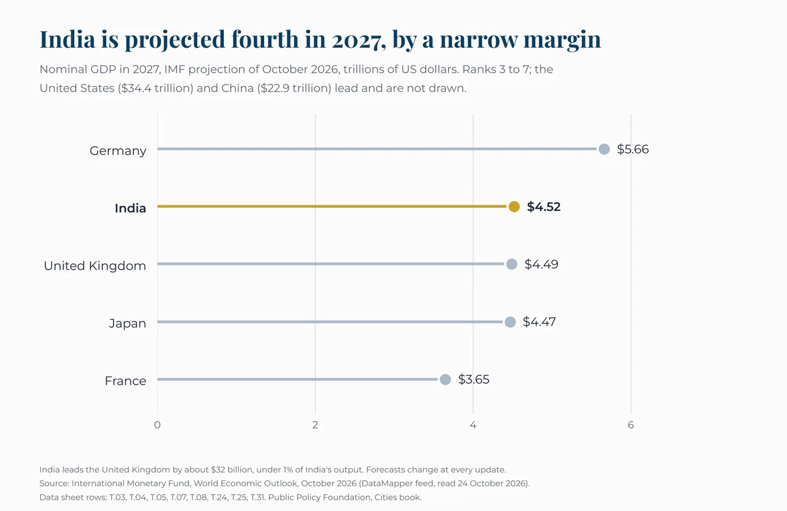
Chart P.1 Projected nominal GDP in 2027, Germany $5.66 trillion, India $4.52 trillion, United Kingdom $4.49 trillion, Japan $4.47 trillion and France $3.65 trillion.
The Economist Intelligence Unit’s Global Liveability Index for 2026 covers 173 cities. Its top ten are Copenhagen, Vienna, Melbourne, Sydney, Zurich, Geneva, Osaka, Adelaide, Vancouver and Tokyo. No Indian city is among them. The EIU’s free report names no Indian city at all, and the full ranking is sold. The last ranks this book can give are from the 2023 index, as reported by ThePrint, when Delhi and Mumbai were joint 141st of 173, and Bengaluru was 148th.
The two facts do not contradict each other. One measures what a country produces. The other asks what a day in a city is like. This book is about the second, and about the distance between them.
What the book measures
Each chapter takes one part of daily life and puts a number on it, with its source and its year. In 2025 the air in Delhi held 19.9 times the fine particles the World Health Organization recommends (Chapter 8). In the same year a driver in Bengaluru lost 168 hours to rush-hour traffic (Chapter 9). About 28% of urban India’s sewage was treated by the latest national inventory (Chapter 11). The 232 city corporations that the Reserve Bank of India covers raise 0.6% of GDP, against 9.2% for the Centre and 14.6% for the States (Chapter 21). And in 2011-18 the cities’ own surpluses paid for 15% of what was spent on urban infrastructure, against 72% from the Centre and States (Chapter 25).
What counts as a city
In this book a city means the area run by its municipal corporation. Where the Census reports a wider urban agglomeration, the book notes it, because the two are different counts of the same place. Chapter 1 explains why India has several answers to the question of how urban it is.
Four outcome measures return from chapter to chapter, because they are what a resident feels: the share of the sewage a city generates that is treated, the hours of piped water a day, the buses per lakh of population, and the year’s average fine-particle pollution. The book also asks what the numbers should be by 2036, and the last chapter proposes a report card with targets tied to existing standards. Where a city has no published figure for a measure, the book says so, and Chapter 24 maps what could not be found.
The second divide
Averages for a city hide a second divide, between the households inside it. Brown University’s Citizenship, Inequality and Urban Governance project surveyed 31,803 households in 14 Indian cities, with fieldwork from 2019. It scored each household’s basic services on a scale from 0, none, to 1, a complete set of water, power, sanitation, roads and freedom from flooding. A household in upper-class housing scored 0.90 on average. A household in an informal shack scored 0.56.
Table P.1. Gaps inside the same 14 cities (fieldwork from 2019).
Measure
One end
The other end
Services index, by housing type
Upper-class housing: 0.90
Informal shacks: 0.56
Services index, by caste group
General castes: 0.85
Scheduled Castes 0.75, Scheduled Tribes 0.74
Daily water supply, all households
23% receive more than 23 hours
43.4% receive up to 2 hours
Good sanitation, by city
Kochi: over 99% of households
Mumbai: about 40% of households
The study is not statistically representative of all Indian cities, and it is several years old. It is the best measure this book found of the gap between the households of one city, and Chapter 17 sets out what it shows.
How to read this book
Three habits run through every chapter. A figure names its source and its year. Where two counts of the same thing disagree, as the Census and a satellite count do on how urban India is, both are given and the difference is explained. And most chapters end with ‘what to watch’, the few published numbers that will show whether anything is changing, or with ‘what is not known’, the figures that could not be found.
The question the book asks is simple. A country that has built fast enough to rank fourth in the world by output has also built cities in which the same street can hold two very different lives. How did that happen, who pays for it, and what would change it?
Notes and sources
Every figure in the chapter is held in the PPF Cities data sheet. The last column gives the row numbers.
Figure
Source
Data rows
India $4.52 trillion in 2027; Germany $5.66 trillion; Japan $4.47 trillion; UK $4.49 trillion; France $3.65 trillion; lead over UK about $32 billion; United States $34.4 trillion and China $22.9 trillion
IMF World Economic Outlook, October 2026, IMF DataMapper feed (read 24 Oct 2026); India and Japan also reported by AFP (15 Oct 2026) and Jiji Press (18 Oct 2026)
T.03, T.04, T.05, T.07, T.08, T.24, T.25, T.31
EIU 2026: 173 cities; top ten; no Indian city in the free report
EIU Global Liveability Index 2026, free report
T.17, T.23
2023: Delhi and Mumbai 141st, Bengaluru 148th of 173
EIU Global Liveability Index 2023, as reported by ThePrint
T.20
Delhi 19.9 times the WHO guideline (2025); Bengaluru 168 hours (2025); 28% of sewage treated; 0.6%, 9.2%, 14.6% of GDP; 15% and 72%
See Chapters 8, 9, 11, 21 and 25 and their notes
Chapter data rows
31,803 households in 14 cities; index by housing type and by caste; water hours; sanitation by city
Brown University, Citizenship, Inequality and Urban Governance project: Findings from 14 Cities (2025)
C19.02–C19.07, C19.11–C19.14, C19.24
Part I · Built Fast · Chapter 1
A Nation Moving to Town
India’s Census says 31% of its people live in urban areas. A satellite count says 63%. Both are right about something, and the gap between them is the first fact about the Indian city.
One country, five answers
The Census of India, in 2011, counted 377.1 million people in urban areas, 31.16% of the population. To be a town in the Census, a place must have more than 5,000 people, at least 400 people to the square kilometre, and three in four of its working men outside farming. Every place with a municipal corporation, a municipality, a cantonment board or a notified town area committee is also a town, whatever its size. That is the official count.
The Economic Survey 2025-26, the government’s own annual review, now argues that the line is in the wrong place. It cites the United Nations’ degree-of-urbanisation method, which classifies a patch of land by how many people live on it, using satellite maps of buildings. By that method India was 63% urban in 2015, ‘nearly double’ the Census figure. It also cites a survey by the civic organisation Janaagraha. Count only places with a municipal body, and India is 26% urban. Count every settlement of 5,000 people or more, as Ghana does, and it is 47%. Count every settlement of 2,500 or more, as Mexico does, and it is 65%.
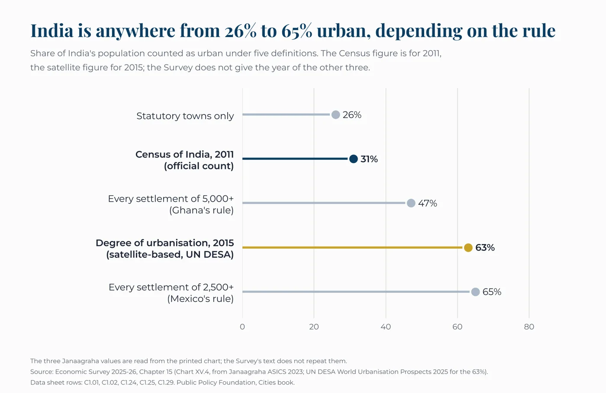
Chart 1.1 The share of India counted as urban under five rules, 26% for statutory towns only, 31% for the Census of 2011, 47% if every settlement of 5,000 or more counts, 63% by the satellite degree-of-urbanisation method for 2015, and 65% if every settlement of 2,500 or more counts.
The five numbers are not for one year, and the Survey does not say how much of the distance between 31% and 63% is the four years between the counts and how much is the method. What they show is that ‘urban’ is a rule, not a fact. Nobody moved between the first number and the last. Only the line moved.
The count that is official
The Census remains the official count, so its trend matters. India’s urban population rose from 286.1 million in 2001 to 377.1 million in 2011, a rise of 31.8% in the decade, or 2.76% a year. The Ministry of Housing and Urban Affairs notes that this reversed a decline in the rate of urban growth through the 1980s and 1990s.
The Registrar General of India has projected the count forward. On the Census definition, urban India holds 513 million people in 2026, 555 million in 2031 and 595 million in 2036, which is 39.1% of the population. That is 217 million more urban Indians than in 2011. The World Bank’s estimate, which the Survey cites, is 600 million and 40% by 2036, and it too is on the Census basis. The Sixteenth Finance Commission used a different, United Nations projection, 40.73% urban in 2031, against the Registrar General’s 37.55% for the same year. Two official projections already differ by three points for the same year.
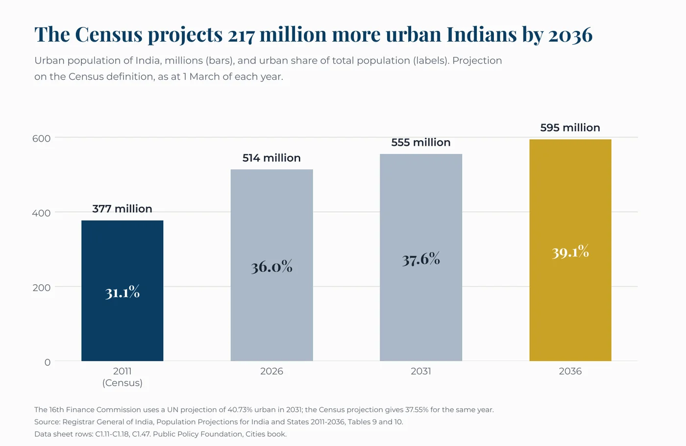
Chart 1.2 Urban India on the Census definition, 377 million people and 31.1% in 2011, 514 million and 36.0% in 2026, 555 million and 37.6% in 2031, and 595 million and 39.1% in 2036.
On the Census definition, urbanisation in India has been slowing, and the Survey notes that India sits marginally below the average of other lower-middle-income and low-income countries. It offers one hypothesis, from a paper by R. Mohan: much of India’s manufacturing happens in rural areas, so factory work did not pull people into towns as it did in China and East Asia.
The towns that nobody governs as towns
The most striking number in the Census is not the total. India had 5,161 towns in 2001 and 7,935 in 2011, 2,774 more. Of these, 2,532, or 91%, were Census towns: places that met the three tests of population, density and non-farm work but had never been given a municipal body. The number of statutory towns, the ones with a municipality, rose by only 242.
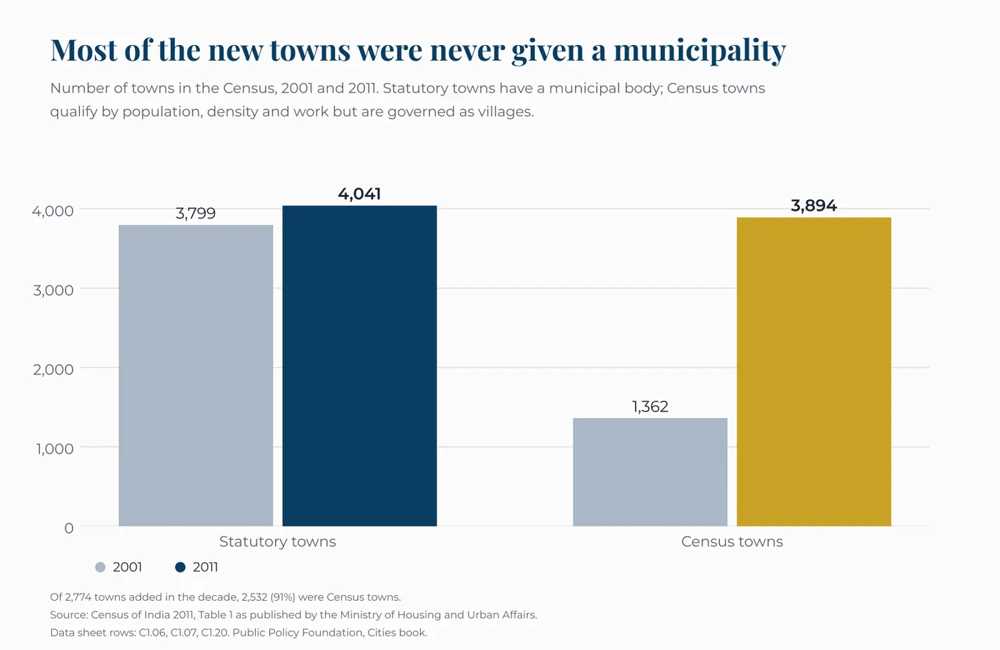
Chart 1.3 Statutory towns rose from 3,799 in 2001 to 4,041 in 2011, while Census towns rose from 1,362 to 3,894.
A Census town is governed under the State’s Panchayat Act, as a large village would be. According to the Ministry, such towns lack building by-laws and the usual urban services. So most of the new towns of the 2000s arrived without the institutions the rest of this book describes: the municipal budgets, the property tax, the engineers and the sanitation staff. A city’s official boundary and the city that people live in are not the same place.
A top-heavy system
Urban India is concentrated in its big cities. In 2011 there were 53 cities and agglomerations with a million people or more, up from 35 in 2001, and they held 42.6% of all urban residents, up from 37.8%. Towns of 100,000 or more, which the Census calls Class I, held 70.2%. The Survey observes that Mumbai, Delhi, Bengaluru, Chennai and Hyderabad now rank among the largest urban agglomerations in the world, and that this scale has not become productivity, liveability or global economic influence in the same proportion.
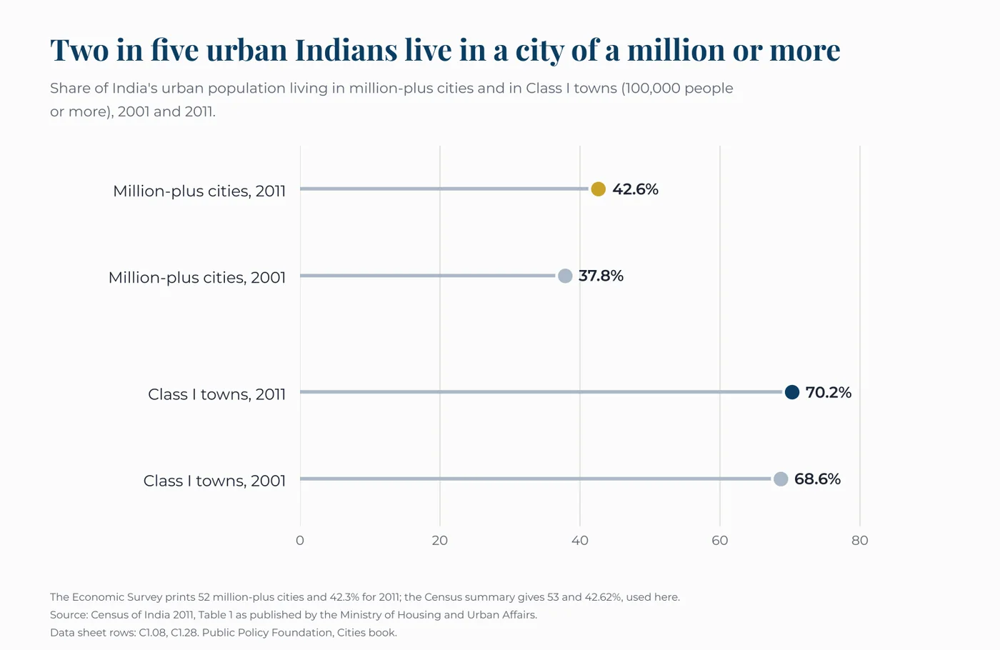
Chart 1.4 The share of urban Indians living in million-plus cities rose from 37.8% in 2001 to 42.6% in 2011, and in Class I towns from 68.6% to 70.2%.
Big cities are also growing outward faster than inward. In 16 cities, from Delhi, Kolkata and Mumbai to Surat, Indore and Bhopal, the ring around the core grew faster than the core itself between 2000 and 2020, in the Ministry’s analysis. The Survey concludes that metropolitan expansion is ‘overwhelmingly outward’, beyond the municipal boundary. A corporation’s own figures therefore describe a shrinking share of the city around it.
Where the growth is
If the Oxford Economics forecast printed in the Survey is right, the ten fastest-growing cities in the world between 2019 and 2035 are all in India. Surat leads at 9.17% a year, growing from $28.5 billion in 2018 to $126.8 billion in 2035. Bengaluru is the largest, from $70.8 billion to $283.3 billion. Hyderabad and Chennai follow in size. Six of the ten are in the south and two in Gujarat. The list includes small manufacturing and trading cities, Tiruppur, Rajkot, Tiruchirappalli, as well as the metros. It is a projection of output, which says nothing about how the growth will be housed, watered or moved.
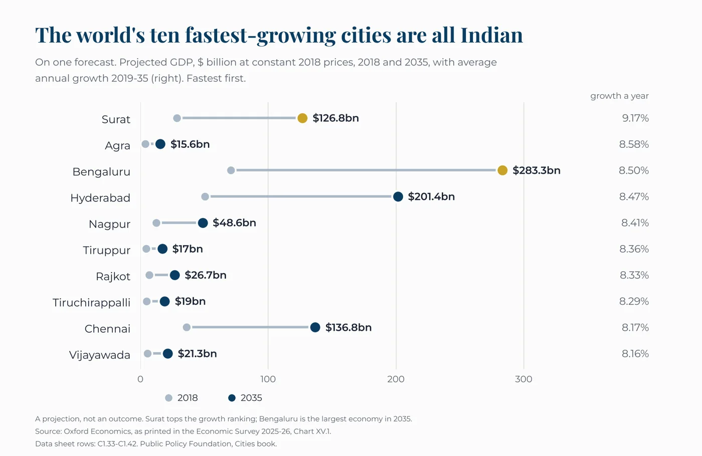
Chart 1.5 Projected GDP in billions of dollars at 2018 prices for the ten fastest-growing cities in the world, 2018 and 2035, all of them Indian, led by Surat at 9.17% a year, with Bengaluru the largest at 283 billion dollars in 2035.
Size does pay. A meta-analysis of studies of developing countries finds that doubling the size of a city typically raises productivity by 12% in India. That is the economic case for cities, and the reason a city that cannot house, water and move its people wastes more than comfort.
Kerala: where the line decides the answer
Kerala shows how far the answer depends on the rule. The Census counted 47.7% of the state’s people as urban in 2011. After 34 new urban local bodies, wider municipal limits and reclassifications, the statutory figure was 53.81% in 2020. An analysis based on inputs from the Ministry of Housing and Urban Affairs then applied the satellite method to the state’s 1,555 villages and towns. It looks for clusters of at least 5,000 people at 300 or more to the square kilometre, and centres of 50,000 at 1,500. Adding the settlements that qualify, Kerala was about 80.8% urban in 2020 and 82.6% in 2025, with some 9.6 million people in 526 urban-type settlements, many outside any town boundary. The Survey describes a ribbon-like conurbation, dispersed along the roads.
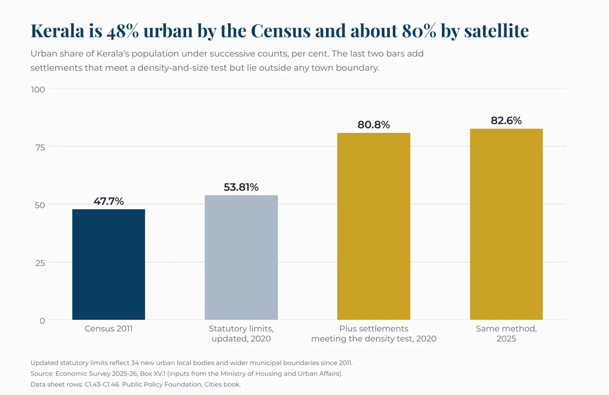
Chart 1.6 Kerala’s urban share under successive counts, 47.7% by the Census of 2011, 53.81% on updated statutory limits in 2020, 80.8% when settlements that meet a density test are added for 2020, and 82.6% on the same method for 2025.
What this book counts
This book follows cities where the budgets, the staff and the records are, which is the municipal corporation. Where a chapter compares cities, it says which boundary each figure uses, and where the Census agglomeration is larger it is noted. The reader should keep the Kerala example in mind: a figure for a corporation describes the part of a city that the law recognises, and the metropolis around it is often larger.
What to watch
The next count is scheduled. Enumeration of the population runs from 9 to 28 February 2027, with 1 March 2027 as the reference date, and the government calls it the first digital Census of India. The notice read for this book does not say whether the definition of an urban place will change. Until the results are out, any statement that ‘India is X% urban’ should name its rule and its year.
Notes and sources
Every figure in the chapter is held in the PPF Cities data sheet. The last column gives the row numbers.
Figure
Source
Data rows
Urban population 377.1 million, 31.16% (Census 2011); 286.1 million, 27.81% (2001); 2.76% a year
Census of India 2011, Table 1, as published by the Ministry of Housing and Urban Affairs; projection report Table 9
C1.04, C1.26, C1.27, C1.11
Rise of 31.8% over the decade
Calculated: 377.1 ÷ 286.1
C1.05
Census criteria: 5,000 people; 400 per sq km; 75% of male workers outside agriculture; statutory towns
Economic Survey 2025-26, Chapter 15, para 15.8 and footnote 3
C1.21
63% urban in 2015 (degree of urbanisation); ‘nearly double’ the Census
Economic Survey 2025-26, Chapter 15, para 15.10, citing UN DESA World Urbanisation Prospects 2025 and the Global Human Settlement Layer
C1.02
26%, 47% and 65% under three alternative rules
Economic Survey 2025-26, Chart XV.4, from Janaagraha, Annual Survey of India’s City Systems 2023 (values read from the chart)
C1.24, C1.25, C1.29
Projected urban population 513 million (2026), 555 million (2031), 595 million (2036); 36.0%, 37.6%, 39.1%; 217 million added
Registrar General of India, Population Projections for India and States 2011-2036, Tables 9 and 10
C1.12-C1.18, C1.47
World Bank: 600 million, 40% by 2036, on the Census basis
Economic Survey 2025-26, para 15.18, citing the World Bank
C1.03
Sixteenth Finance Commission: 40.73% urban in 2031
Sixteenth Finance Commission report, Volume I, para 10.84 and footnote 6 (UN projection)
C1.19
Urbanisation slowing on the Census definition; Mohan’s hypothesis
Economic Survey 2025-26, para 15.9, citing Mohan (2025), CSEP Working Paper 86
C1.32
5,161 towns in 2001 and 7,935 in 2011; statutory 3,799 and 4,041; Census towns 1,362 and 3,894; 2,532 of 2,774 added
Census of India 2011, Table 1 (MoHUA); 91% calculated
C1.06, C1.07, C1.20
Census towns governed under State Panchayat Acts, without building by-laws or usual urban services
Ministry of Housing and Urban Affairs, India’s Urban Demographic Transition (Census 2011 results), p. 11
C1.07
53 million-plus cities (35 in 2001); 42.62% (37.82%) of urban population; Class I towns 70.24% (68.62%)
Census of India 2011, Table 1 (MoHUA)
C1.08, C1.28
Mumbai, Delhi, Bengaluru, Chennai, Hyderabad among the world’s largest agglomerations; scale not matched by productivity
Economic Survey 2025-26, para 15.4
C1.32
16 cities where the periphery outgrew the core, 2000-20; expansion ‘overwhelmingly outward’
Economic Survey 2025-26, para 15.12, citing Ministry of Housing and Urban Affairs analysis
C1.31
Ten fastest-growing cities 2019-35, all Indian; Surat 9.17%, $28.5 billion to $126.8 billion; Bengaluru $70.8 billion to $283.3 billion
Oxford Economics, as printed in Economic Survey 2025-26, Chart XV.1
C1.33-C1.42
Doubling city size raises productivity 12% in India
Economic Survey 2025-26, para 15.3, citing Grover, Lall and Timmis (World Bank, 2021)
C1.30
Kerala: 47.7% (2011); 53.81% (2020, updated limits); 80.8% (2020) and 82.6% (2025) on the spatial method; 526 settlements, 9.63 million people
Economic Survey 2025-26, Box XV.1 (Ministry of Housing and Urban Affairs)
C1.43-C1.46
Census 2027: enumeration 9-28 February 2027; reference date 1 March 2027; first digital Census
Press Note, Census 2027, Government of Goa, March 2026
C1.48
Part I · Built Fast · Chapter 2
Ten Cities, Twice Their Weight
India does not publish the output of its cities. A rough estimate puts the ten largest city-regions at 11.4% of the country’s people and 23.9% of its output, about twice their weight, and in four States one city-region makes 37% to 47% of the State’s total.
No official number
India’s national accounts give output for the country and for each State. They do not give it for cities. The Centre for Policy Research (CPR), a research institute, says so at the start of a 2025 note that estimates it anyway, and calls its own method crude.
The estimate
CPR took the ten largest cities by their 2011 population: Mumbai, Delhi, Bengaluru, Hyderabad, Ahmedabad, Chennai, Kolkata, Surat, Pune and Jaipur. It linked each to the district or districts around it, to form a city-region. For each district it took the average share of its State’s output over the two latest years that were not pandemic years, and applied that share to the State’s output for 2022-23. Jaipur’s figure was available directly.
On this method the ten city-regions made 23.9% of the country’s output in 2022-23. In 2011 they held 11.4% of its people. Output per person in these places is therefore about twice the national average, a ratio of 2.1. A first version of the estimate, before the author corrected the boundaries of Mumbai, Kolkata and Bengaluru and the figures for Surat and Pune, gave 21.1% against 9.6%, a ratio of 2.2.
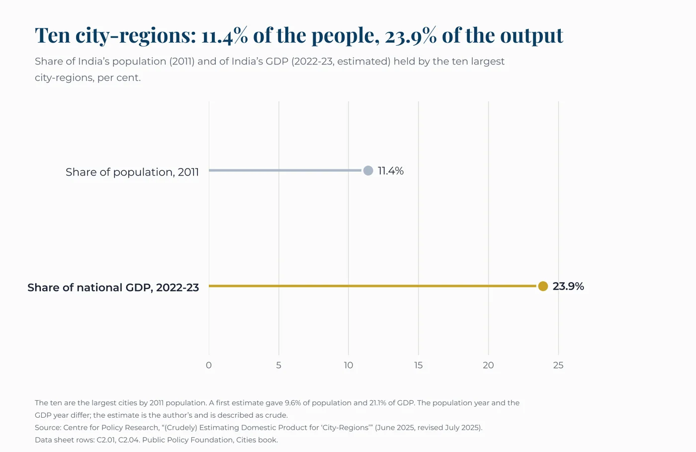
Chart 2.2 Ten city-regions, 11.4% of population in 2011 and 23.9% of national GDP in 2022-23.
Two cautions apply. The population is from 2011 and the output from 2022-23, so the ratio mixes years in which the cities’ shares of the population have probably changed. And a city-region of several districts is wider than a municipal corporation, so the figure speaks for the cities’ surroundings as well.
Four States that lean on one city
In four States the city-region makes between 37% and 47% of the State’s output. CPR’s estimates are 47% for Hyderabad, 41% for Kolkata, 40% for Bengaluru and 37% for Mumbai. Chennai and Ahmedabad are each about a quarter of their State’s output, and Jaipur is just under one-seventh. The note gives no share for Delhi, Surat or Pune in the text of the page.
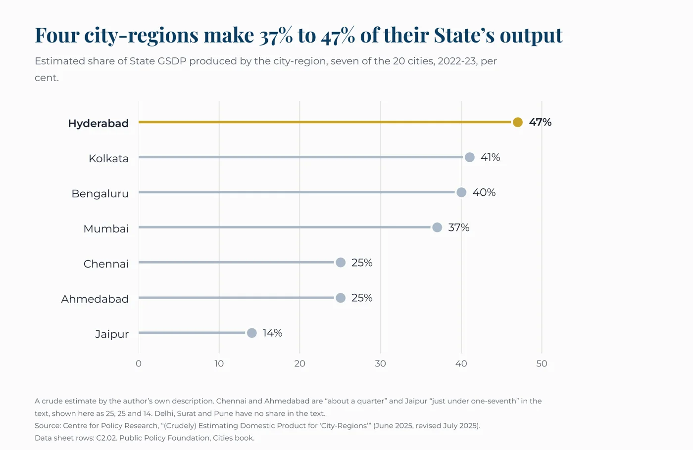
Chart 2.1 Share of State output of the city-region: Hyderabad 47%, Kolkata 41%, Bengaluru 40%, Mumbai 37%, Chennai 25%, Ahmedabad 25%, Jaipur 14%.
A NITI Aayog plan for the Mumbai Metropolitan Region, as a news agency reported it in August 2024, put the region’s output at about ₹12 lakh crore, or about US$140 billion, and about one-third of Maharashtra’s. That is close to CPR’s 37% for Mumbai, although the two define the place differently. The plan sets a target of ₹26 lakh crore, about US$300 billion, by 2030.
What is not known
No source in hand gives city output on a consistent basis for all 20 cities, or for any year before 2022-23. The estimate says nothing about how output has changed in the cities relative to the country, and nothing about what share of it reaches the municipal budget, which Chapter 21 takes up. The text of the CPR note gives no share for Delhi, which is one of the ten.
Notes and sources
Every figure in the chapter is held in the PPF Cities data sheet. The last column gives the row numbers.
Figure
Source
Data rows
Ten city-regions: 23.9% of GDP against 11.4% of population; first estimate 21.1% against 9.6%; method
Centre for Policy Research, “(Crudely) Estimating Domestic Product for ‘City-Regions’”, CPR Insights, 23 June 2025, updated 4 July 2025
C2.01
Share of State output: Hyderabad 47%, Kolkata 41%, Bengaluru 40%, Mumbai 37%; Chennai and Ahmedabad about a quarter; Jaipur just under one-seventh
Same note, revised addendum
C2.02
Mumbai Metropolitan Region about ₹12 lakh crore (US$140 billion), about one-third of Maharashtra; ₹26 lakh crore target
The Week (PTI), 22 August 2024, on a NITI Aayog plan
C2.03
Ratio 2.1 (23.9 ÷ 11.4); 2.2 for the first estimate (21.1 ÷ 9.6)
Computed from C2.01
C2.04
Part I · Built Fast · Chapter 3
Metro Nation
India’s first metro opened in Kolkata in 1984 with 3.4 kilometres of track. Forty-two years later the country counts more than a thousand kilometres, in 26 cities, and the length depends on the month and on who is counting.
From 3.4 kilometres to 26 cities
The Kolkata line of 1984 was the country’s only metro for years. By March 2024 the Ministry of Housing and Urban Affairs counted 945 km in 21 cities. By January 2025 the Press Information Bureau, the government’s news service, said over 1,000 km in 23 cities. The Economic Survey 2025-26 gave about 1,036 km of metro and regional rapid transit in around 24 cities in 2025. The Ministry’s own answer in the Rajya Sabha on 9 February 2026, about the position in December 2025, was about 1,096 km in 26 cities, and the Press Information Bureau in March 2026 gave 1,095 km in 26 cities. On 5 September 2026 the Union Minister of Housing and Urban Affairs was reported as saying 1,170 km.
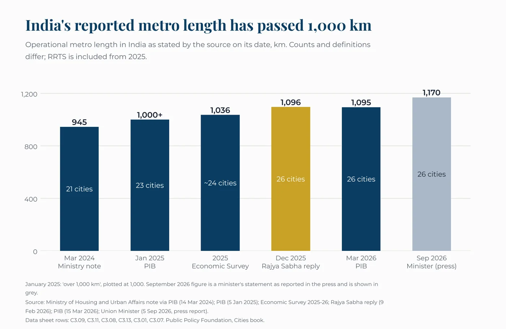
Chart 3.2 India’s reported operational metro length by source and date, 945 km in March 2024, over 1,000 km in January 2025, 1,036 km in the Economic Survey, 1,096 km in December 2025, 1,095 km in March 2026 and 1,170 km in a minister’s statement in September 2026.
Each figure is right for its own date. They are not one series, because the early counts leave out regional rapid transit and the later ones include it, so the chapter gives the source with every length. The Ministry’s Rajya Sabha answer is the best anchor for 2025, since it is the Ministry’s own dated count and matches the Press Information Bureau’s 1,095 km and 26 cities.
Third in the world
The Press Information Bureau ranks India’s network third in the world. An independent compilation that follows the definition of the International Association of Public Transport, which excludes light rail and commuter rail, agrees on the rank but not the length. It gives China about 12,360 km, the United States about 1,400 km, India about 1,200 km and Japan about 900 km. India is close behind the United States and has less than a tenth of China’s length. The compilation itself warns against using it to settle a ranking, so ‘third’ rests on two imperfect sources. The Minister has said that India will overtake the United States, which he put at 1,386 km, within two to three years. That is a forecast, reported in the press.
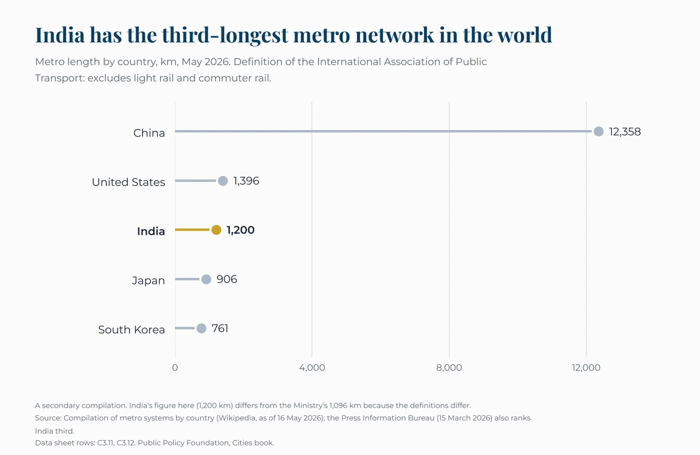
Chart 3.1 Metro length by country in May 2026 on the International Association of Public Transport definition, China about 12,358 km, the United States 1,396 km, India 1,200 km, Japan 906 km and South Korea 761 km.
What 2025 added
The Ministry’s Rajya Sabha reply lists the year’s additions. Eleven projects were inaugurated in 2025, 92.56 km in all. The four largest were Mumbai Line 3 at 20.86 km, Bengaluru at 19.15 km, the Delhi–Meerut regional rapid transit line at 13 km, and a Kolkata corridor at 11.16 km. Bhopal, Kanpur, Indore and Patna each opened between 2.7 and 6.94 km.
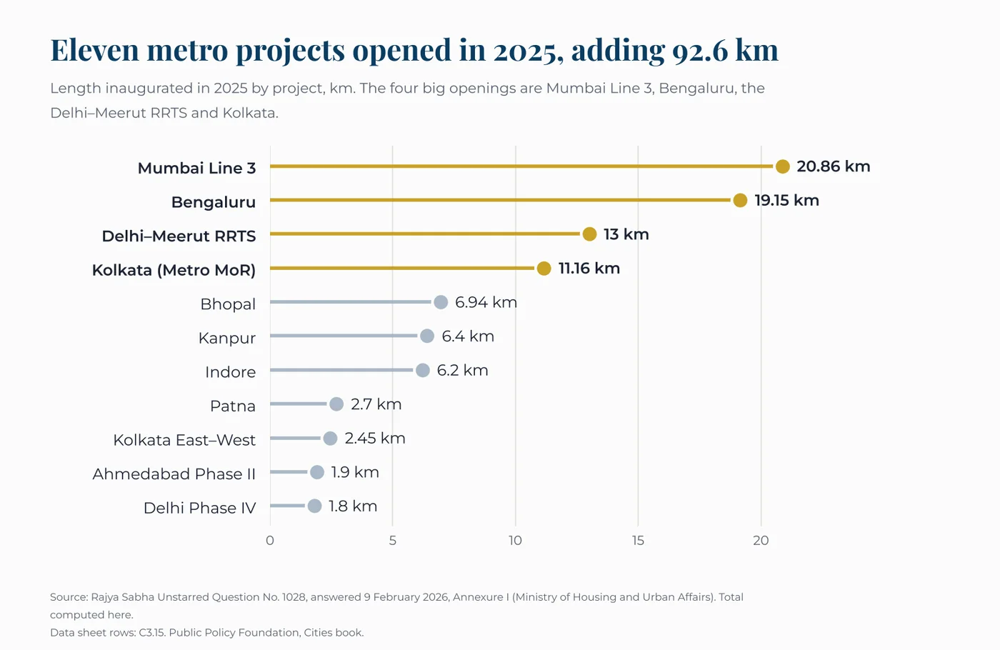
Chart 3.3 Length of the eleven metro projects inaugurated in 2025 in kilometres, led by Mumbai Line 3 at 20.86 and Bengaluru at 19.15.
In the same year the Union Government approved six more projects: 100.7 km in Delhi, Pune, Noida and Lucknow, at a total cost of ₹37,947 crore, or about ₹377 crore a kilometre. The cost ranges widely. Divided by length, the new Delhi Phase V costs about ₹748 crore a kilometre and the Noida Aqua Line extension about ₹160 crore. The reply does not say which lines run above ground and which under it, a difference that affects cost. Completion is expected four to six years after sanction.
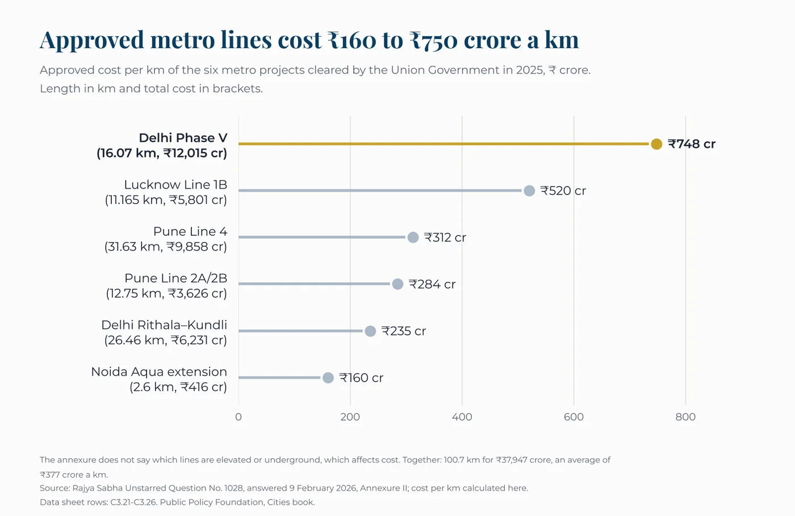
Chart 3.4 Approved cost per kilometre of the six metro projects approved in 2025, from 748 crore rupees for Delhi Phase V to 160 crore for the Noida Aqua Line extension.
The regional line
The Delhi–Meerut line, called Namo Bharat, is a different thing from a city metro. The corridor spans 82 km, of which about 55 km were in service in 2025, and trains are designed for speeds up to 180 km an hour. The Economic Survey says the journey from Delhi to Meerut drops to under an hour, compared with 1.5 to 2 hours by road. The Centre and the participating States each pay 20% of the cost and the Asian Development Bank, the Asian Infrastructure Investment Bank and the New Development Bank 60%. The Survey adds that sharing the line’s infrastructure with the Meerut Metro saved about ₹6,300 crore, and that nearly 2,900 km of further corridors could be built, among them corridors from Bengaluru towards Hosur and from Chennai towards Chengalpattu. Those are potential corridors, not sanctioned ones.
Is it used?
The Ministry gives daily average ridership as 28 lakh passengers in 2013-14 and 1.15 crore in 2025-26, from 2.8 million to 11.5 million. Spread across 1,096 km, that is roughly 10,500 passengers a day for each kilometre of network. The figure is rough, because the two numbers are for different dates. The Ministry gives only a national total. Ridership for each city or line, which would show where the lines are used and where they are not, is not published in the sources this book was able to read, and the Economic Survey notes that rail systems underperform their projections where safe first-mile and last-mile access to stations is missing.
What is coming
The Press Information Bureau lists 38 sanctioned metro projects covering 1,051 km. Sanctioned is not the same as under construction, and this book does not give a figure for lines under construction because no primary count was found.
What to watch
Three numbers will show whether the network is becoming a system: the Ministry’s dated length of operational line; the number of cities with a working metro; and the share of sanctioned length that is open for passengers. A fourth, daily ridership for each line, would show whether the lines are used. It is the number the Ministry does not yet publish.
Notes and sources
Every figure in the chapter is held in the PPF Cities data sheet. The last column gives the row numbers.
Figure
Source
Data rows
945 km, 21 cities (March 2024)
Ministry of Housing and Urban Affairs note via the Press Information Bureau, 14 March 2024, citing Lok Sabha Unstarred Question 1087 of 8 February 2024
C3.09
Over 1,000 km, 23 cities, 11 States; third-largest network; first line Kolkata 1984, 3.4 km (January 2025)
Press Information Bureau note, 5 January 2025
C3.11
About 1,036 km of metro and RRTS in around 24 cities (2025); Delhi–Meerut RRTS about 55 km in service of 82 km
Economic Survey 2025-26, Chapter 15, para 15.30 and Box XV.2
C3.08, C3.18
About 1,096 km, 26 cities (December 2025); 11 projects inaugurated in 2025, 92.56 km; 6 approved, 100.7 km, ₹37,947 crore; ridership 28 lakh and 1.15 crore a day
Rajya Sabha Unstarred Question No. 1028, answered 9 February 2026, with Annexures I and II
C3.13-C3.17
Cost per km of approved lines (₹160 to ₹748 crore; average ₹377 crore)
Calculated from Annexure II to the same reply
C3.21-C3.26
1,095 km, 26 cities, third in the world (March 2026)
Press Information Bureau release, 15 March 2026
C3.01-C3.03
Third among countries: China about 12,360 km, United States 1,400 km, India 1,200 km, Japan 900 km
Compilation of metro systems by country, International Association of Public Transport definition, as of 16 May 2026 (Wikipedia)
C3.12
1,170 km; India to pass the United States (1,386 km) in two to three years
Union Minister of Housing and Urban Affairs, 5 September 2026, as reported by Telangana Today
C3.07
RRTS: 82 km; 180 km an hour; under one hour against 1.5 to 2 hours; 20%, 20%, 60% financing; ₹6,300 crore saved; nearly 2,900 km of potential corridors
Economic Survey 2025-26, Box XV.2
C3.18, C3.20
About 10,500 passengers a day for each km
Calculated: 1.15 crore ÷ 1,096 km
C3.17
38 sanctioned projects, 1,051 km
Press Information Bureau
C3.05 (note)
Part I · Built Fast · Chapter 4
What Indore Got Right
Indore has been ranked India’s cleanest city every year since 2017, and in 2020 it topped the government’s municipal performance index. In December 2025, its drinking water made hundreds of people ill and, a judicial panel is reported to have found, killed at least 24.
What it did
Indore, in Madhya Pradesh, was 25th in the national cleanliness survey (Swachh Survekshan) of 2016. It was first in 2017 and, according to the Economic Survey of 2025-26, has been first every year since. In the 2024-25 round, for cities with more than ten lakh people, it again stood first in the top league, ahead of Surat, Navi Mumbai and Vijayawada.
The Economic Survey credits behaviour change as much as machinery. It names the “Do Bin Har Din” campaign, joint roadshows by officials and councillors, the involvement of religious and local leaders, and penalties for littering. More than 800 self-help groups, with over 8,000 women, were engaged to spread awareness and to run material recovery facilities. Markets and colonies that cut waste were given “zero-waste” tags.
The city also built a plant to use what it collects. A bio-CNG plant opened in February 2022, built to take 550 tonnes of organic waste a day and, according to its developer, to produce about 15,000 kg of compressed biogas and 100 tonnes of manure a day. The same developer says residents separate almost all their waste at the source. These are the company’s figures, not an audit.
What the national tables say
In 2020 the Ministry of Housing and Urban Affairs published two indexes of Indian cities. The Municipal Performance Index scored how well municipal bodies perform. Indore was first among the 49 cities with a million or more people, with 66.08 out of 100, more than five points ahead of Surat at 60.82.
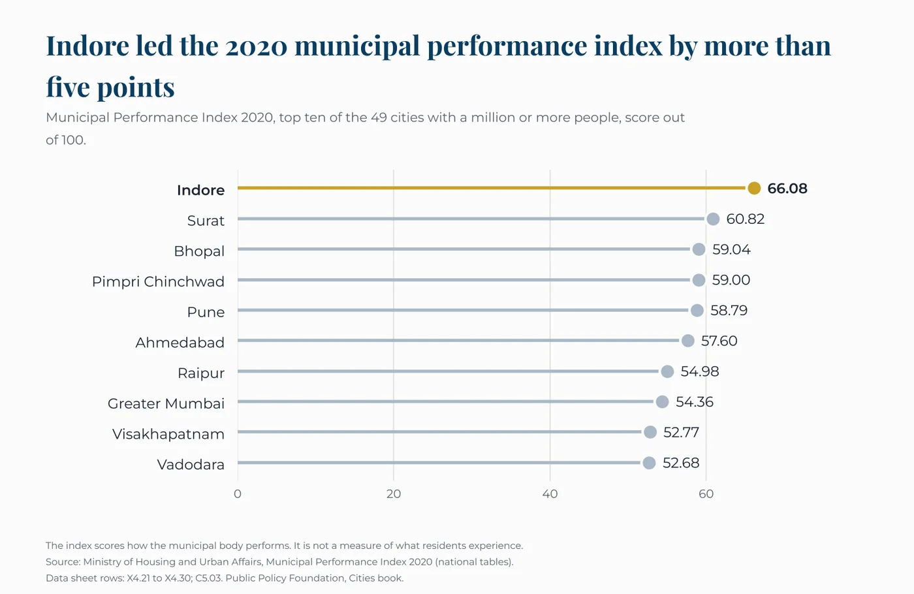
Chart 4.1 Municipal Performance Index 2020, top ten million-plus cities, Indore 66.08 first, then Surat 60.82, Bhopal 59.04, down to Vadodara 52.68.
The second index, Ease of Living, scored the city from the resident’s side, across 13 categories and 49 indicators. Here Indore was ninth, with 58.58. Bengaluru was first with 66.7. Only six cities are in the top ten of both: Indore, Surat, Pune, Ahmedabad, Greater Mumbai and Vadodara. Indore’s distance between the two tables, first and ninth, is the widest of the six.
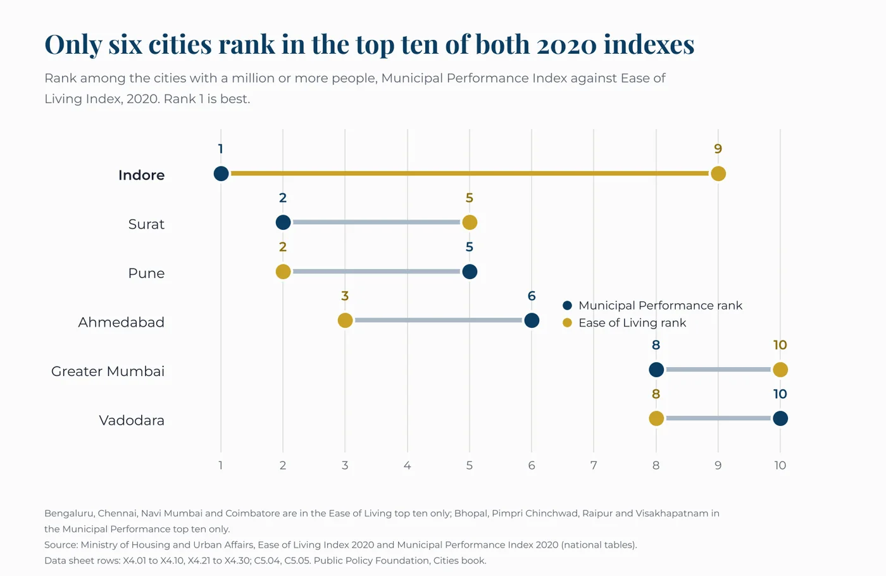
Chart 4.2 Rank of six cities in the Municipal Performance Index and the Ease of Living Index, 2020; Indore first and ninth, Pune fifth and second.
A well-run corporation and a good city to live in overlap but are not the same. The first can be scored from the municipal office, and the second needs the resident’s view. The 2020 tables are also six years old. They say nothing about what has changed since.
What the cleanest city did not get right
On 26 December 2025 and the days after, people in Bhagirathpura, a locality of Indore, began falling ill with diarrhoea and vomiting. By 31 December the news agency ANI reported three deaths and about 149 people in hospital. The municipal commissioner said sewage from a lavatory built over the main pipe had seeped into the drinking supply. In the first days, more than 40,000 residents were screened and 2,456 suspected cases found, of whom 212 were admitted.
The number of deaths was not settled for weeks. It was three on 31 December, four in one report on 2 January, ten when the mayor confirmed it, and 29 by the claim of locals at the end of January. A judicial commission headed by a retired High Court judge, Sushil Kumar Gupta, was set up on 27 January. Its report, submitted to the Madhya Pradesh High Court and reported on 30 August 2026, is said to link 24 of 36 reported deaths between 26 December 2025 and 25 February 2026 to sewage-contaminated water from the municipal pipes, citing delays in replacing an ageing Narmada pipeline. It is reported to hold six civic officials responsible. The report is confidential, and these are press accounts of it.
Indore’s awards measure streets, waste and public participation. A leaking water main under a lavatory is out of sight. What the city did well was visible to a surveyor, a camera and a neighbour. What failed was beneath the ground and slow to replace. This is the clearest case in the book for measuring outcomes residents feel, such as whether the water in the tap is safe, next to what a city can show.
A number not to read as success
The roads ministry’s table for 50 large cities records 639 road deaths in Indore in 2022 and 257 in 2023. A fall of 60% in a year would be extraordinary. The sources give no reason, and changes this large, here and in Bhopal, Dhanbad and Jamshedpur, are more likely to reflect how deaths were counted or reported than a change on the road. Chapter 10 sets out the case.
What is not known
The grid in Chapter 24 shows three of eleven measures in hand for Indore: road deaths, the Ease of Living score and the Municipal Performance score. There is no annual PM2.5 figure, no hours of piped water a day and no buses per lakh people. The two published indexes are the only like-for-like view, and both are from 2020. Whether Indore’s waste results carry over to other measures, and whether other cities could copy the method, is not something these data can show.
Notes and sources
Every figure in the chapter is held in the PPF Cities data sheet. The last column gives the row numbers.
Figure
Source
Data rows
Indore 25th in 2016 and first every year since 2017; self-help groups; behaviour campaigns
Asia News Network 2 Jan 2026 (citing ANI); The Wire 1 Jan 2026
C5.07
Death count over time; judicial commission findings (24 of 36)
Deccan Chronicle 30 Aug 2026; press reports
C5.08, C5.09
Indore road deaths 639 to 257
MoRTH large-city table via OpenCity
C5.10, C11.09
Part I · Built Fast · Chapter 5
Homes for Millions
In eleven years the central housing scheme for cities has sanctioned 127.62 lakh homes and completed 98.65 lakh. Nearly two-thirds of the homes sanctioned are ones that families build themselves, and Delhi has none of the building schemes.
The largest housing programme in the world
The Pradhan Mantri Awas Yojana-Urban (PMAY-U) began in 2015 as the central government’s main housing scheme for cities. By the middle of 2026, the ministry’s own newsletter reports 127.62 lakh homes sanctioned, 120.31 lakh with work started and 98.65 lakh completed. The investment it records is ₹8.95 lakh crore, of which the central government has committed ₹2.12 lakh crore and released ₹1.80 lakh crore. A second phase, PMAY-U 2.0, has sanctioned over 16.13 lakh homes since it began, and about 97% of those have been allotted to women.
By any standard this is a very large number. The ministry says that 61 lakh homes were completed between 2014 and 2022, against 8.04 lakh in the ten years before, though the earlier figure includes other schemes and the two periods are not like for like. Against a housing shortage that the Economic Survey puts at 29 million in 2018, 98.65 lakh completed homes is about a third.
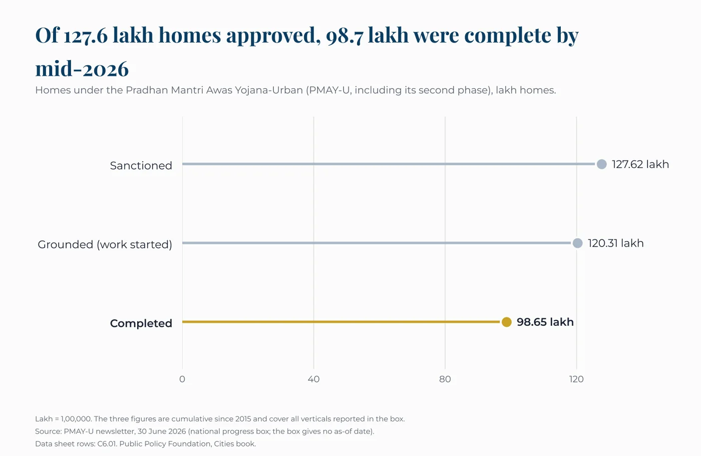
Chart 5.1 PMAY-U homes sanctioned (127.62 lakh), grounded (120.31 lakh) and completed (98.65 lakh), mid-2026.
The pipeline has leaks. Of every 100 homes sanctioned, about 6 have not been started and about 23 have not been finished. The central government has released 85% of the assistance it has committed. These are national totals. The newsletter does not break them down by State or city.
What counts as a home
The best breakdown of the programme is a reply to a question in the Lok Sabha on 21 August 2025, which gave figures as of 4 August 2025. It shows that the single headline of “homes” covers four very different things.
PMAY-U by vertical, 4 August 2025
Vertical
What it does
Sanctioned (lakh)
Completed (lakh)
Occupied (lakh)
Beneficiary-led construction
Pays an eligible family ₹1.5 lakh to build or enlarge its own house
76.94
52.99
52.99
Partnership and slum redevelopment
Builders and public agencies build projects; ₹1.5 lakh per EWS house, ₹1 lakh per slum house
17.27
12.29
8.20
Affordable rental housing
Converts or builds rental homes for migrants and workers
0.96
0.42
0.05
Interest subsidy on home loans
Gives households a subsidy on a bank loan
25.10 (households)
not reported
not reported
Beneficiary-led construction is the largest by a wide margin: 76.94 lakh of the 119.31 lakh homes sanctioned (64.5%). The scheme pays a family to build or add to a house, and the ministry’s FAQ confirms that a family with a plot and no house can be covered. The documents read for this book do not say how a family with no plot of its own is covered. In cities where land is the main cost, that is the question that matters.
The “completed” count also contains things that are not new homes built by the state. Of the 93.80 lakh completed as of August 2025, 25.10 lakh are households that took a subsidised loan, and 3.42 lakh are slum houses from the older JnNURM mission, which the reply adds to the total. Taken out, the three construction verticals completed 65.71 lakh homes. That is still a very large number, but it is a different one from the headline.
Where the homes are
The programme’s reach differs sharply from State to State. In Madhya Pradesh, 88% of the sanctioned homes were completed by August 2025; in Tamil Nadu and Uttar Pradesh, about 85%. In Maharashtra it was 59%, in Karnataka 60% and in Telangana 47%, and in Haryana 29%. Telangana reports no completed beneficiary-led homes at all against 1,13,681 sanctioned, which may be a gap in reporting.
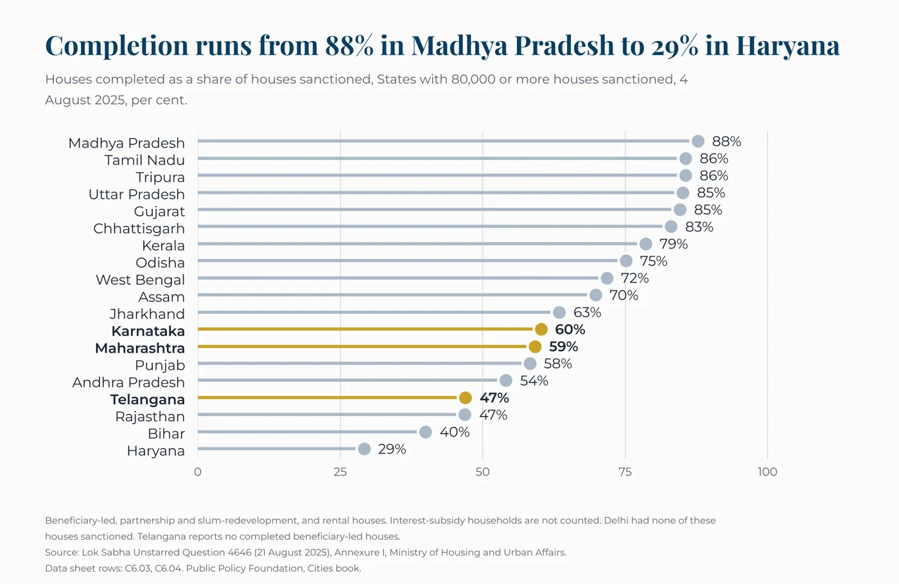
Chart 5.2 Share of sanctioned PMAY-U homes completed by 4 August 2025, from 88% in Madhya Pradesh to 29% in Haryana, with Karnataka, Maharashtra and Telangana highlighted.
The scheme is also concentrated in the States where families build for themselves. Uttar Pradesh and Andhra Pradesh together account for 37 lakh of the 95 lakh homes sanctioned in the three construction verticals across all States and Union Territories. In Maharashtra and Gujarat, by contrast, most of the support goes to partnership and slum-redevelopment projects and to interest subsidies; Gujarat alone has 6.45 lakh subsidised-loan households.
The capital is the sharpest example. The reply lists no beneficiary-led, partnership or rental homes sanctioned in Delhi at all. The only entry for Delhi is 30,159 households that took an interest-subsidy loan. The reply gives no city-level counts for Mumbai, Bengaluru or other metros, so what the programme has done inside the largest cities cannot be read from it.
Built, but lived in?
A completed house is not necessarily an occupied one. For homes that families build themselves, the two numbers are the same by definition. For homes built in projects, they are not: of 12.29 lakh completed under the partnership and slum-redevelopment vertical, 8.20 lakh were occupied, or 67%. For rental housing the gap is wider. Of 42,233 rental homes completed, 4,605 were occupied, or 11%. The reply does not say why. The scheme’s own rules say that the family must not own a pucca house anywhere in India, and that the home should be in a woman’s name or in joint names, but the figures do not show whether those conditions, the location or the price kept homes empty.
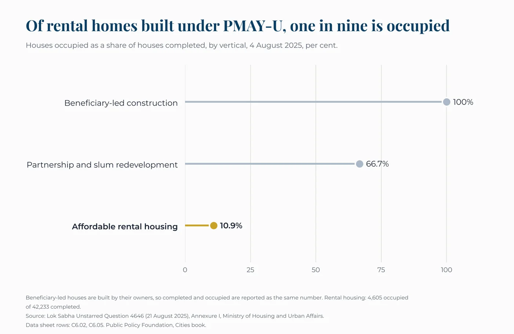
Chart 5.3 Occupied homes as a share of completed homes by vertical, 100% for beneficiary-led, 66.7% for partnership and slum redevelopment and 10.9% for rental housing, August 2025.
What is not known
Four facts are missing, and they would change the picture. How many of the homes are inside municipal corporations, rather than in smaller towns. The completion and occupancy position for the second phase and for the June 2026 total. How many homes went to families who rent or have recently migrated, since the scheme’s rules speak of families that own no pucca house but are silent on tenure. And how many of the 98.65 lakh homes are in good condition and connected to water, sewers and power, which only a survey of the households would show.
What to watch
Three figures would show whether the programme is reaching city residents who most need it. Completed homes and occupancy by city, for at least the ten largest. The count of rental homes occupied against completed, which stood at 11% in August 2025. And the number of homes in Delhi and other metros sanctioned under the construction verticals, which was nil in Delhi.
Notes and sources
Every figure in the chapter is held in the PPF Cities data sheet. The last column gives the row numbers.
Figure
Source
Data rows
127.62 lakh sanctioned, 120.31 lakh grounded, 98.65 lakh completed; ₹8.95 lakh crore investment; central assistance committed ₹2.12 and released ₹1.80 lakh crore; PMAY-U 2.0 over 16.13 lakh sanctioned and 97% to women
PMAY-U newsletter, 30 June 2026
C6.01, C6.08
Vertical table (BLC 76,94,195; AHP/ISSR 17,27,250; ARH 96,494; CLSS 25,09,839); completed and occupied by vertical; JnNURM footnote
Lok Sabha Unstarred Question 4646, 21 August 2025, Annexure I
C6.02, U6.01 to U6.06
Share of sanctioned homes completed by State; Delhi none; Gujarat 6.45 lakh CLSS households
Same reply, Annexure I; derived
C6.03, C6.04, C6.07
Occupied share: 66.7% (AHP/ISSR), 10.9% (ARH)
Derived from the same reply
C6.05
BLC 64.5% of 119.31 lakh; 26.8% of completed are CLSS households; 3.42 lakh JnNURM
Derived from the same reply
C6.06, C6.13
Assistance, eligibility, FAQ 17; income limits
PMAY-U website, About and FAQ pages
C6.09
61 lakh against 8.04 lakh; 98.65 lakh about a third of the 29 million shortage
Ministry “7 Years of PMAY-U”; Economic Survey 2025-26 (shortage); derived
C6.10, C6.11, C18.01
Part I · Built Fast · Chapter 6
Taps, Toilets, Power
Almost every urban household has electricity. For water and sewers the last full count, in 2011, found a tap from a treated source in 62% of homes and a sewer connection in 33%, and no later count asks the same questions.
Three services, three different stories
Electricity, water and sanitation reach city homes in very different degrees. Electricity is the success. The 2011 Census found about 93% of urban households using it as their main source of light, and the National Family Health Survey of 2019-21 (NFHS-5) found 99.1% of the urban population living in households with electricity. Cooking fuel has moved in the same direction: 65.0% of urban households used LPG or piped gas in 2011, and NFHS-5 found 89.7% using clean cooking fuel, although the two surveys define the fuel differently.
Water and sanitation are harder to follow, because the two big household surveys do not ask the same question. This chapter sets out what each says, and where they cannot be compared.
The last full count: 2011
The 2011 Census is the last survey that counted every urban household. It found that 62.0% had tap water from a treated source and another 8.6% had a tap from an untreated source, so 70.6% in all had a tap. Hand pumps served 11.8%, tube wells 8.9%, and wells 6.2%. For 71.2% the water source was within the house or its premises, for 20.7% within 100 metres and for 8.0% farther away.
On toilets, 81.4% of urban households had a latrine within the premises, 6.0% relied on a public latrine and 12.6% practised open defecation. Of all urban households, 32.7% were connected to a piped sewer system and 38.2% to a septic tank. On drainage of waste water, 44.5% had closed drains, 37.3% open drains and 18.2% none.
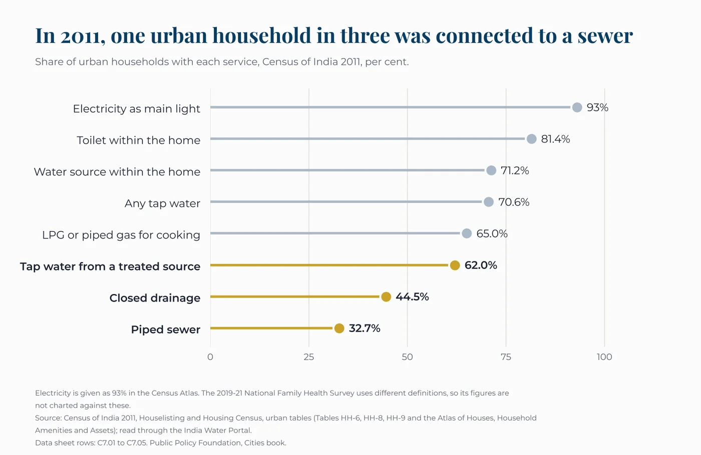
Chart 6.1 Share of urban households with each service in 2011, from electricity (93%) and a toilet in the home (81.4%) down to tap water from a treated source (62.0%), closed drains (44.5%) and a sewer connection (32.7%).
The newer survey, a different question
NFHS-5 is more recent, and by its test the picture looks much better: 98.7% of urban households had an “improved” drinking water source and 81.5% of the urban population used an “improved” sanitation facility. These are not the same measures as the Census’s. An improved source is a wider test than a treated tap. It is a judgement on the type of source, and in the Census, households with a hand pump or a tube well alone were about a fifth of the urban total. The 81.5% for sanitation counts facilities that are not shared, while the Census counts any latrine within the premises. A rise from 62.0% to 98.7% is not what happened to tap water, and a flat 81.4% to 81.5% is not what happened to toilets. The numbers are answers to different questions.
The Economic Survey of 2025-26 states that open defecation has been eliminated across all cities, which is an official status under the Swachh Bharat Mission rather than a household count. It also says that fewer than 27% of households are connected to underground sewerage, citing a 2024 academic study, without giving the year or whether the figure is for urban households alone. The 2011 Census found 32.7% of urban households on a piped sewer. The text does not show how the two figures relate.
What the money has bought
Water and sewers are the main business of AMRUT, the central government’s urban infrastructure mission, and its second phase, AMRUT 2.0, runs from 2021 to 2026. In a reply to the Lok Sabha on 6 February 2025, the Ministry of Housing and Urban Affairs gave the position as of 27 January 2025. It had approved 8,887 projects at a cost of ₹1,89,188 crore. These cover 408 lakh tap connections, 154 lakh sewer or septage connections, 10,647 million litres a day of water treatment capacity and 6,739 million litres a day of sewage treatment capacity.
Contracts had been awarded for 5,383 projects worth ₹92,284 crore, or 49% of the approved cost. Works worth ₹27,184 crore were physically complete (14%), and ₹20,835 crore had been spent (11%). The approved cost includes operation and maintenance, which is spent after the works are built, so these shares understate progress on construction. The reply does not say how many connections have actually been made.
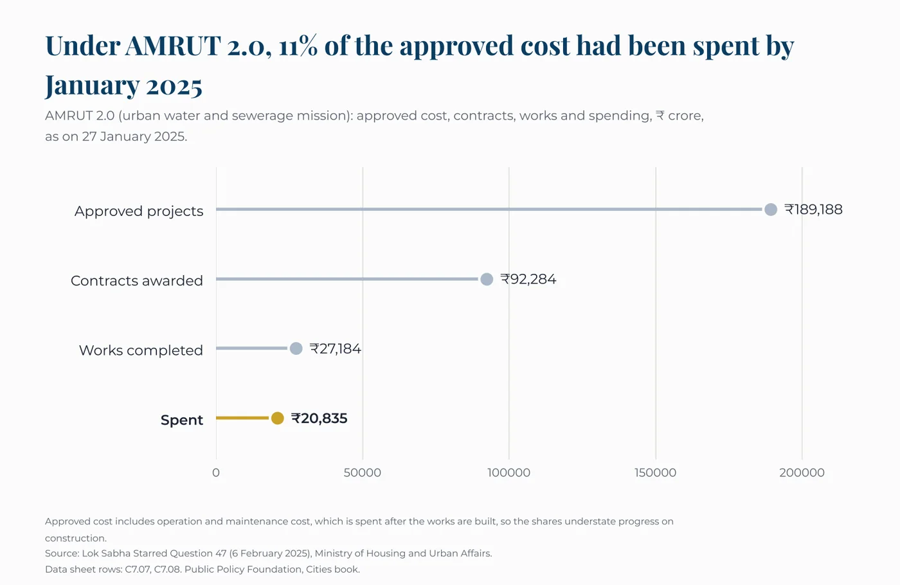
Chart 6.2 AMRUT 2.0 approved cost ₹1,89,188 crore, contracts awarded ₹92,284 crore, works completed ₹27,184 crore and spent ₹20,835 crore, January 2025.
What is not known
Three gaps limit what this chapter can say. There is no household count for any year since 2011 that uses the Census’s definitions, so the share of urban homes with a treated tap today is not known. No source read here gives these services by city. The Census does, but it is fifteen years old, and the next Census, planned for 2027, will be the first to count again. And none of the surveys here says whether the tap runs. Hours of supply are the subject of Chapter 12, because a connection and a supply are different things.
What to watch
Three figures would show whether coverage is catching up with promises. The share of urban households with tap water from a treated source, from the 2027 Census, to set against 62.0% in 2011. The share connected to a sewer, against 32.7%. And the number of tap and sewer connections actually made under AMRUT 2.0, against the 408 lakh and 154 lakh approved.
Notes and sources
Every figure in the chapter is held in the PPF Cities data sheet. The last column gives the row numbers.
Figure
Source
Data rows
Census 2011 urban: tap 62.0% treated, 8.6% untreated; location 71.2% / 20.7% / 8.0%; latrine within premises 81.4%, public 6.0%, open defecation 12.6%; sewer 32.7%, septic 38.2%; drains closed 44.5%, open 37.3%, none 18.2%
Census of India 2011, Houselisting and Housing Census urban tables, read via India Water Portal
C7.01 to C7.04
Electricity about 93%; LPG or piped gas 65.0%
Census 2011 Atlas of Houses, Household Amenities and Assets
Open defecation elimination; fewer than 27% on underground sewerage
Economic Survey 2025-26, Chapter 15, paras 15.35 and p. 610
C7.10, C7.11
Part II · Left Behind · Chapter 7
Big Cities, Bottom-Third Lives
In 2026 the Economist Intelligence Unit ranked 173 cities by liveability. Its top ten, from Copenhagen to Tokyo, include no Indian city, and the last ranks it gave Indian cities that this book can trace sit in the bottom fifth.
The world’s index
The Economist Intelligence Unit, the research arm of The Economist, publishes an annual Global Liveability Index. The 2026 edition covers 173 cities. Its survey was run in May 2026 and scores 30 indicators in five categories: stability, healthcare, culture and environment, education, and infrastructure. The average score was 76.1, the same as in 2025.
Copenhagen came first with 98, then Vienna and Melbourne with 97 each. The rest of the top ten were Sydney, Zurich, Geneva, Osaka, Adelaide, Vancouver and Tokyo, with scores from 98 down to 96. No Indian city is among them.
Where the Indian cities stood
The Economist Intelligence Unit’s free 2026 report prints only its top ten, its bottom ten and the fifteen cities that rose most. It names no Indian city, and the biggest rise was seven places, by Fuzhou in China. The full ranking is sold. Indian news reports in July 2026 gave ranks for New Delhi, Mumbai, Chennai and Bengaluru between 120th and 127th, but none says where the ranks came from, and they cannot be matched to the free report. This book does not use them.
The 2023 ranking is better documented. ThePrint reported that year’s positions: Delhi and Mumbai were joint 141st of 173 with a score of 60.2, Chennai 144th with 59.9, Ahmedabad 147th with 58.9 and Bengaluru 148th with 58.7. All five were in the bottom fifth of the table. Their scores were about 60, against 96 to 98 for the 2026 top ten, a gap of the order of 38 points between two different years.
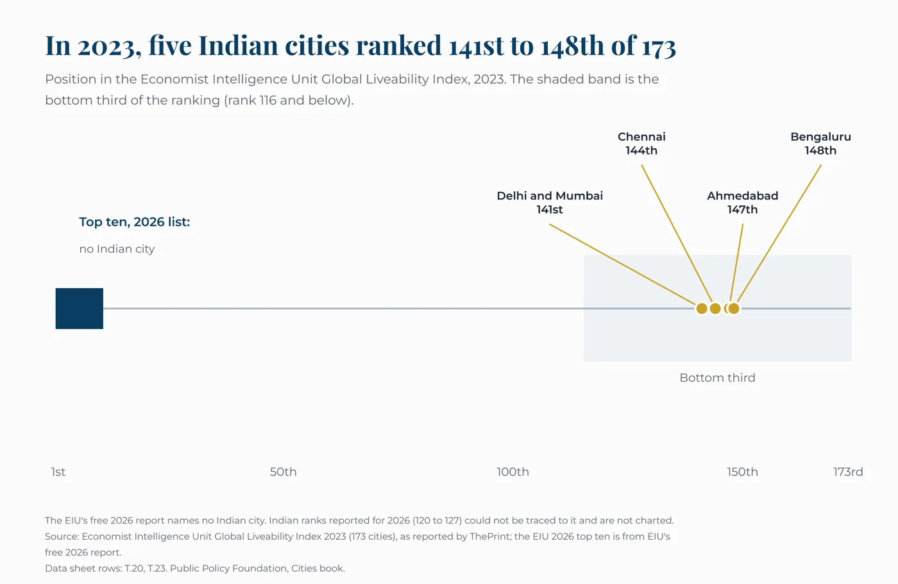
Chart 7.1 Five Indian cities ranked 141st to 148th of 173 in the Economist Intelligence Unit Global Liveability Index 2023, against a top ten with no Indian city.
The same cities, judged at home
India’s own Ministry of Housing and Urban Affairs ranked 49 cities of more than a million people in its Ease of Living Index 2020, published in March 2021. Bengaluru came first with 66.7 points, Pune second with 66.27, Ahmedabad third with 64.87 and Chennai fourth with 62.61. Greater Mumbai was tenth with 58.23. Press reports of the full table place Delhi thirteenth with 57.56 and Hyderabad twenty-fourth with 55.40, and say Delhi stood second on economic ability and forty-fourth of 49 on what its citizens said of city services.
Set beside the 2023 world table, the order is almost reversed. Bengaluru, first of 49 at home, was 148th of 173 abroad, the lowest of the five. Ahmedabad was third at home and 147th, Chennai fourth and 144th, Mumbai tenth and joint 141st, Delhi thirteenth and joint 141st.
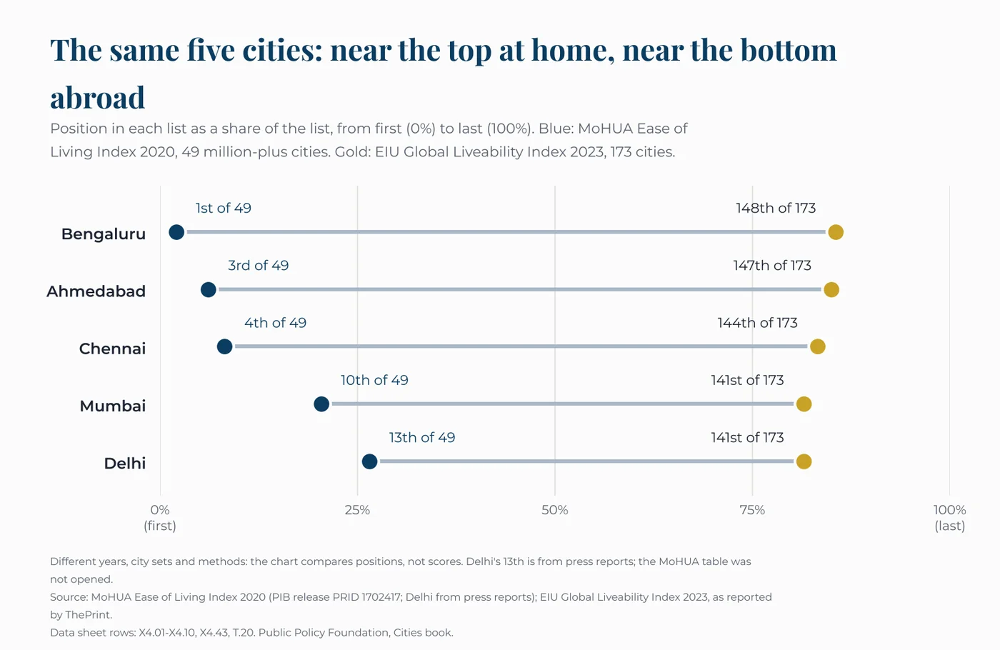
Chart 7.2 Position in the ministry’s 2020 index of 49 cities, 1st to 13th, against position in the Economist Intelligence Unit’s 2023 table of 173 cities, 141st to 148th, for five Indian cities.
The two lists measure different things in different years. The ministry’s index puts 70% of its weight on 13 categories of services and 30% on what 32.2 lakh citizens said in a survey, and compares Indian cities only with one another. The Economist Intelligence Unit compares all 173 cities on its five categories. Neither is wrong. Both show that a city can be among the best of its kind in India and still be a long way from the top of the world. Kolkata is missing from the 2018 edition of the ministry’s index because West Bengal did not take part, and it is not among the Indian cities in the 2023 world table.
Two ministry rankings, two answers
The ministry also published a Municipal Performance Index for 2020, which scores how city governments perform on services, finance, policy, technology and governance, using 100 indicators. Its first place among million-plus cities went to Indore, which is only ninth on the Ease of Living Index. Surat is second on municipal performance and fifth on ease of living. Bengaluru, first on ease of living, is not in the top ten for municipal performance at all.
Table 7.1. The ministry’s two 2020 rankings of cities with a million people or more.
City
Ease of Living rank (score)
Municipal Performance rank (score)
Bengaluru
1 (66.7)
Not in top ten
Pune
2 (66.27)
5 (58.79)
Ahmedabad
3 (64.87)
6 (57.6)
Surat
5 (61.73)
2 (60.82)
Vadodara
8 (59.24)
10 (52.68)
Indore
9 (58.58)
1 (66.08)
Greater Mumbai
10 (58.23)
8 (54.36)
The reading is not that one ranking is right. A city that is pleasant to live in is not always one whose government performs well, and the reverse. A book that wants to ask what residents get for what governments spend has to hold the two apart, and the later chapters do.
What to watch
Three checks each year: whether any Indian city enters the Economist Intelligence Unit’s published top ten or biggest-movers table; where the Indian cities sit in the full table, which the Unit sells; and whether the gap between the best Indian score and the top three narrows from the roughly 38 points seen in 2023.
Notes and sources
Every figure in the chapter is held in the PPF Cities data sheet. The last column gives the row numbers.
Figure
Source
Data rows
173 cities; survey May 2026; 30 indicators in five categories; average 76.1; Copenhagen 98, Vienna 97, Melbourne 97
Economist Intelligence Unit, Global Liveability Index 2026, free report (6 July 2026)
T.17
Top ten: Copenhagen, Vienna, Melbourne, Sydney, Zurich, Geneva, Osaka, Adelaide, Vancouver, Tokyo
Economist Intelligence Unit, Global Liveability Index 2026
T.23
Fuzhou biggest rise, 7 places; no Indian city among the 15 biggest movers
Economist Intelligence Unit, Global Liveability Index 2026
T.19
2023 ranks and scores: Delhi and Mumbai 141 (60.2), Chennai 144 (59.9), Ahmedabad 147 (58.9), Bengaluru 148 (58.7)
Economist Intelligence Unit, Global Liveability Index 2023, as reported by ThePrint
T.20
Reported 2026 Indian ranks, not used
Indian press reports of July 2026 (untraceable to the free report)
T.21, T.22, F38
Ease of Living Index 2020, million-plus: Bengaluru 66.7, Pune 66.27, Ahmedabad 64.87, Chennai 62.61, Surat 61.73, Vadodara 59.24, Indore 58.58, Greater Mumbai 58.23
Ministry of Housing and Urban Affairs, release of 4 March 2021, via the Press Information Bureau
Ministry of Housing and Urban Affairs, release of 4 March 2021
X4.41
Municipal Performance Index 2020, million-plus: Indore 66.08, Surat 60.82, Pune 58.79, Ahmedabad 57.6, Greater Mumbai 54.36, Vadodara 52.68; five verticals, 100 indicators
Ministry of Housing and Urban Affairs, release of 4 March 2021, via the Press Information Bureau
X4.21-X4.30, X4.41
Kolkata unranked in 2018 (West Bengal did not take part)
Observer Research Foundation
X4.47
Part II · Left Behind · Chapter 8
The Air in Every City
In 2025 the air in Delhi held twenty times the fine particles the World Health Organization recommends. It is the best-known case of a problem that reaches most of urban India.
Twenty times the guideline
In 2025 the air in Delhi carried an average of 99.6 micrograms of fine particles in every cubic metre. These particles, called PM2.5 because each is smaller than 2.5 micrometres across, are fine enough to be breathed deep into the lungs. The World Health Organization’s guideline for a year’s average is 5. Delhi was 19.9 times over it. IQAir, the Swiss air-quality firm whose annual report ranks 9,446 cities in 143 countries and territories, put Delhi fourth in the world, behind Loni in Uttar Pradesh at 112.5, Hotan in China at 109.6 and Byrnihat in India at 101.1.
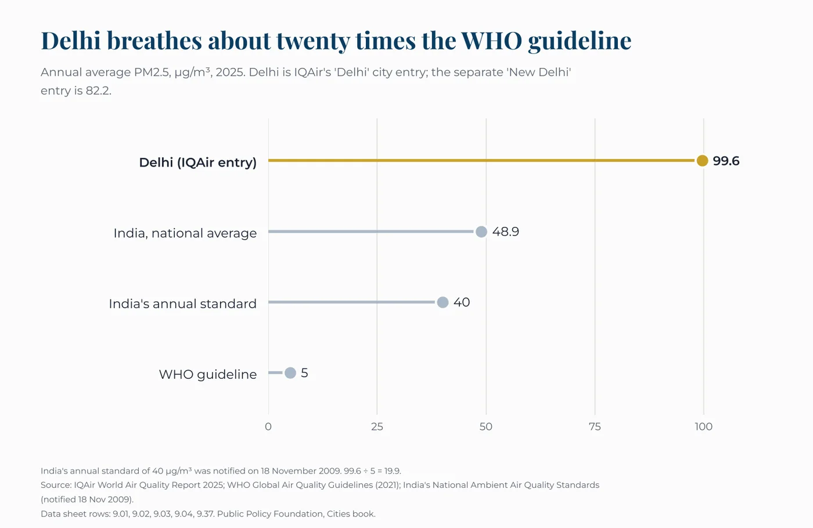
Chart 8.1 Delhi’s 2025 annual PM2.5 of 99.6 micrograms per cubic metre against the WHO guideline of 5.
The figure is lower than the year before. In 2024 the same IQAir measure was 108.3, so 2025 was 8% better. A city can improve and still be twenty times over the line.
Not only Delhi
Delhi is the famous case, not the only one. IQAir’s most polluted city in the world in 2025 was Loni, in Uttar Pradesh’s Ghaziabad district, at 112.5 micrograms, up nearly 23% in a year. Across India the population-weighted average for 2025 was 48.9 micrograms, nearly ten times the WHO guideline and the sixth highest of the 143 countries and regions IQAir ranks.
Count down IQAir’s ranked list of 9,373 cities and the pattern is plain. Of the 100 most polluted in 2025, 66 entries are Indian: 29 in the first fifty and 37 in the second fifty. Delhi and New Delhi are listed separately, as are Howrah and Haora, so the count of distinct places is 64. Four of the first ten are in Pakistan. Beyond the capital region the list reaches Patna (54th, at 54.8), Lucknow (58th), Ludhiana (66th), Visakhapatnam (71st), Kolkata (77th, at 51.0) and Jaipur (78th). Mumbai, Chennai, Hyderabad and Bengaluru, at 27.5 to 34.2, are well outside the hundred. The report adds that 17 of the world’s 20 most polluted cities were in Central and South Asia.
India has its own, looser standard: 40 for a year’s average, notified on 18 November 2009. It is eight times the WHO guideline. In winter, even that is exceeded in most monitored cities. The Centre for Research on Energy and Clean Air (CREA) tested every city for which the Central Pollution Control Board’s continuous monitors had data at least 80% of the time between 1 October 2025 and 28 February 2026. Of 238 such cities, 204 had a winter average above 40. That is 86%, up from 173 cities the winter before. None of the 238 met the WHO guideline.
This is a test of winter, the worst season, and the national standard is written for a year, so it is stricter than the standard as written. It shows how far the problem reaches, not how often the law is broken.
CREA’s snapshot names seven cities. Ghaziabad averaged 172 over the winter, Noida 166 and Delhi 163. Kolkata was at 78, Mumbai 48 and Chennai 44. Bengaluru, at 39, was the only one of the seven under the national line, and by one microgram.
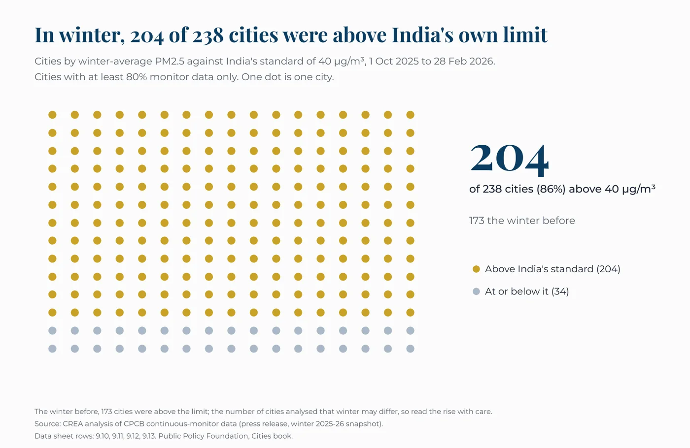
Chart 8.2 204 of 238 monitored cities had winter PM2.5 above India’s standard of 40, winter 2025-26, against 173 the winter before.
The other big cities, season by season
IQAir’s India table puts five more metros beside Delhi. For 2025 it gives Kolkata 51.0, Mumbai 34.2, Hyderabad 33.3, Chennai 31.3 and Bengaluru 27.5 micrograms per cubic metre, against 99.6 for Delhi. All five are far above the WHO guideline of 5, and only Kolkata is above India’s own annual limit of 40. Ahmedabad and Pune are not in the table.
The monthly figures show the same winter in every city, at different heights. Delhi reached 228.4 in November and 221.8 in December, against 28.0 in July. Kolkata reached 107.5 in November and 120.0 in December, against 20.3 in September. Chennai’s worst month was December at 63.2, Mumbai’s January at 59.7, Hyderabad’s December at 45.0 and Bengaluru’s December at 43.8. Even the cleanest of the six, Bengaluru, had two months above 40. A yearly average hides this: a city can meet the annual limit and still spend its winter above it.
Year on year, the picture was mixed. Delhi improved in 2025, from 108.3 to 99.6. Four of the five other metros got worse: Kolkata rose from 45.6 to 51.0, Chennai from 26.0 to 31.3, Hyderabad from 30.6 to 33.3 and Mumbai from 33.7 to 34.2. Only Bengaluru improved, from 30.0 to 27.5. One year is a signal, not a trend.
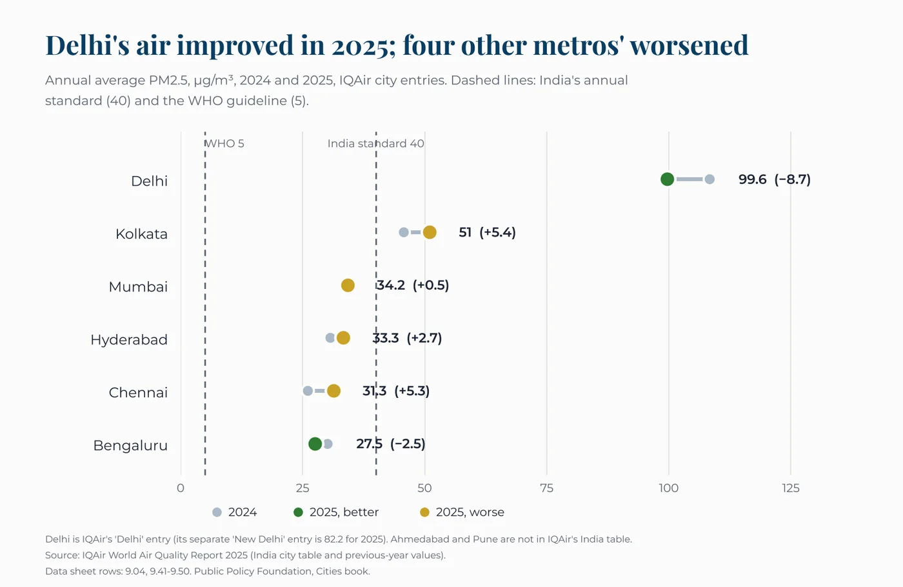
Chart 8.9 Annual PM2.5 in 2024 and 2025 for six metros, Delhi down from 108.3 to 99.6 and Kolkata, Chennai, Hyderabad and Mumbai up, Bengaluru down from 30.0 to 27.5.
Which Delhi?
Ask for the air in Delhi and you will be given different numbers, each answering a slightly different question. IQAir’s entry for Delhi: 99.6 in 2025 and 108.3 in 2024. Its separate entry for New Delhi: 82.2 in 2025. The Central Pollution Control Board’s monitors, analysed by the Centre for Science and Environment: 104.7 in 2024. The Air Quality Life Index, which uses satellite data: 88.4 for 2023.
The five measurements run from 82 to 108. They differ in year, in place and in method, and this book never mixes them in one series. Every Delhi figure here names its source and its year. A Delhi figure without both deserves suspicion.
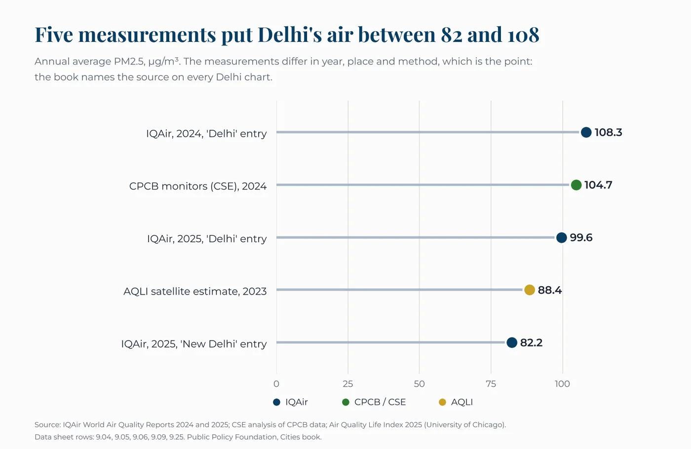
Chart 8.7 Five measurements of Delhi’s annual PM2.5 between 82 and 108 micrograms per cubic metre, by source and year.
A good day, by a generous measure
The Commission for Air Quality Management counts a day as a ‘good air quality day’ when the air quality index is below 200. That band takes in the ‘Moderate’ category, so it is a generous test. By it, Delhi had 159 such days in 2018 and 182 in 2019. It had 227 in 2020, the most in the series, then 197 in 2021 and 163 in 2022. After that came 206 in 2023, 209 in 2024 and 200 in 2025.
The series goes up and down. It does not support a story of steady improvement or steady decline, and 2025 had fewer such days than 2023 or 2024. Setting 2018 beside 2025 would show a gain; setting 2024 beside 2025 would show a loss. The chart shows all eight years.
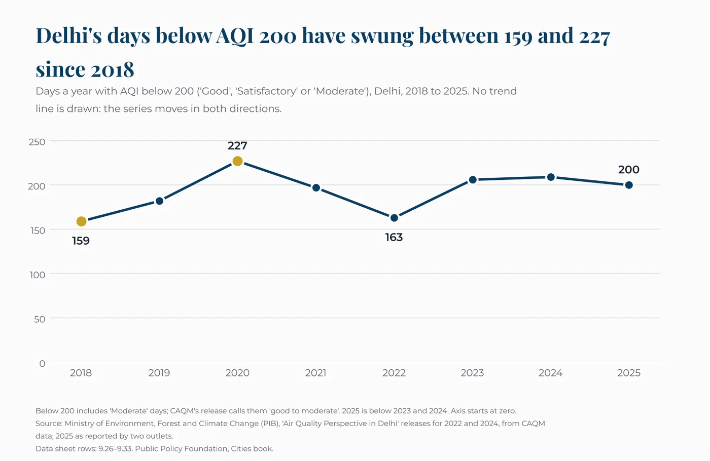
Chart 8.5 Days a year with Delhi’s AQI below 200, 2018 to 2025, from 159 to 227, with no trend line.
What it costs in years of life
The Air Quality Life Index, from the Energy Policy Institute at the University of Chicago, turns pollution into life expectancy. At the level it uses for Delhi, 88.4 micrograms (satellite-derived, for 2023), a resident loses 8.2 years of life expectancy against the WHO guideline, and 4.7 years against India’s own standard. Choosing between the two yardsticks is worth 3.5 years.
These figures rest on 2023 satellite data and cannot be compared with the 2025 monitor readings above. They give an order of magnitude, not a forecast for any one person.
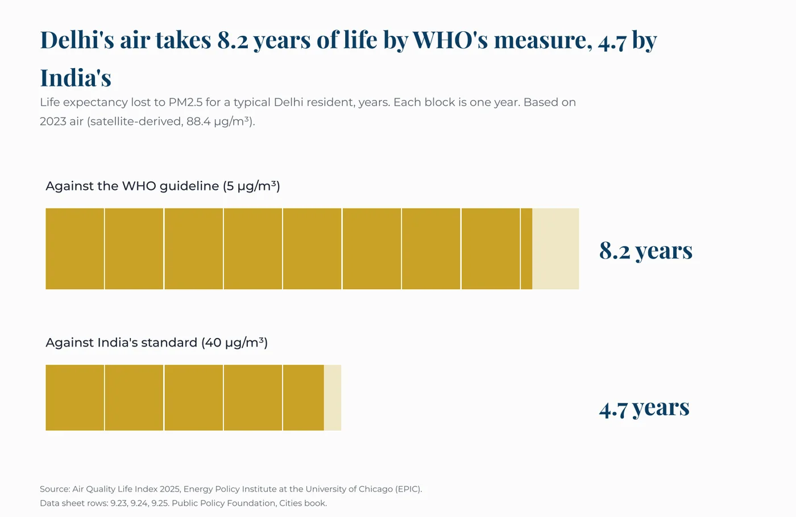
Chart 8.8 Years of life expectancy lost to PM2.5 in Delhi, 8.2 against the WHO guideline and 4.7 against India’s standard.
What to watch
This chapter measures the air. It does not divide the blame among vehicles, farm fires, dust, industry and weather; the causes are a separate argument.
Three numbers, each published every year, say whether anything is changing: the count of cities above 40 on winter averages (204 of 238 in 2025-26); Delhi’s annual average against 40 and against 5 (99.6 in 2025); and Delhi’s days below an air quality index of 200 (200 in 2025). A first test of any promise to clean the air is whether the first of these falls.
Notes and sources
Every figure in the chapter is held in the PPF Cities data sheet. The last column gives the row numbers.
Figure
Source
Data rows
Delhi 99.6 µg/m³ (2025), fourth in the world; 108.3 (2024); New Delhi 82.2; Loni 112.5; Byrnihat 101.1; WHO guideline 5; 19.9 times; 8% fall; 9,446 cities in 143 countries
IQAir World Air Quality Report 2025 (PDF, read in full), and IQAir’s most-polluted-cities page
9.02, 9.04–9.08, 9.21, 9.39, 9.40
India 48.9, sixth of 143; 9.8 times the WHO guideline
IQAir World Air Quality Report 2025 (PDF)
9.01, 9.03
Annual standard 40 and 24-hour standard 60 (notified 18 Nov 2009)
Central Pollution Control Board’s copy of the National Ambient Air Quality Standards notification (PDF)
9.37, 9.38
204 of 238 cities above 40 on winter average (1 Oct 2025 to 28 Feb 2026); 173 the winter before; none met the WHO guideline; seven named cities
CREA, Winter ambient air quality snapshot for India 2025-26 (PDF, read in full)
9.10–9.20
Delhi 104.7 (2024, CPCB monitors)
Centre for Science and Environment analysis of CPCB data
9.09
Delhi 88.4 (2023); 8.2 and 4.7 years of life lost
Air Quality Life Index 2025, Energy Policy Institute, University of Chicago
9.23–9.25
Annual PM2.5 2025: Kolkata 51.0, Mumbai 34.2, Hyderabad 33.3, Chennai 31.3, Bengaluru 27.5; monthly peaks (Delhi 228.4 Nov, Kolkata 120.0 Dec); 17 of the world’s 20 most polluted cities in Central and South Asia
IQAir World Air Quality Report 2025, India city table (p. 20) and regional summary; IQAir full ranked list (website)
9.22, 9.41–9.56
Days with AQI below 200, 2018 to 2025
Commission for Air Quality Management data, in the Ministry of Environment, Forest and Climate Change release (PIB) on Delhi air quality, and press reports for 2025
9.26–9.33
Annual PM2.5, 2024 and 2025: Bengaluru 30.0 and 27.5; Mumbai 33.7 and 34.2; Chennai 26.0 and 31.3; Hyderabad 30.6 and 33.3; Kolkata 45.6 and 51.0
IQAir World Air Quality Report 2025, India city table
9.41-9.50
Part II · Left Behind · Chapter 9
Lost in Traffic
In 2025 the rush hours cost a driver in Bengaluru 168 hours: seven full days of twenty-four hours. Seven Indian cities are among the 32 most congested in the world.
Counting the hours
TomTom, the Dutch navigation company, ranks 492 cities each year in its Traffic Index. One of its measures is rush-hour time lost: the extra time on a 10 km trip made twice a day, at peak hours, on 230 working days a year, compared with the lowest travel times recorded in each city when traffic runs freely. The data are anonymised GPS records from vehicles. TomTom’s ‘city area’ is the dense core, usually the municipal jurisdiction, and its ‘metro area’ is the wider commuting region; the figures in this chapter are for the city area. In 2025 Bengaluru’s figure was 168 hours. Pune’s was 152, Kolkata’s 150, Chennai’s 132, Mumbai’s 126, Hyderabad’s 123, Jaipur’s 121, Ahmedabad’s 106 and New Delhi’s 104. New Delhi is TomTom’s name for Delhi.
Bengaluru’s drivers lost 42 hours more than Mumbai’s, and 64 more than Delhi’s. Over a year, on one 10 km commute made twice a day, that is the equivalent of seven days of twenty-four hours.
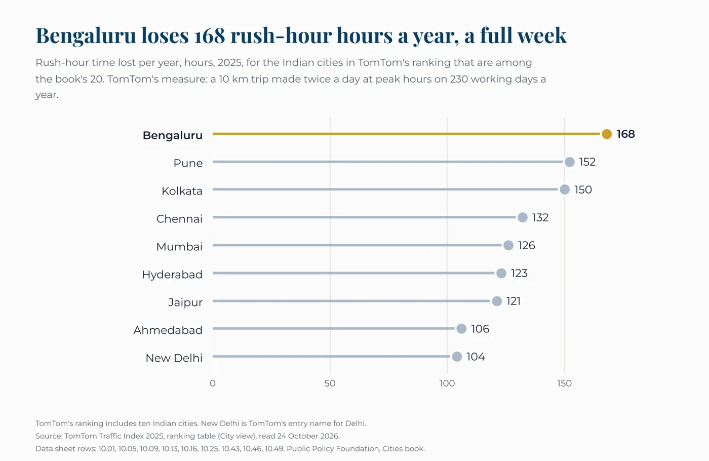
Chart 9.1 Rush-hour time lost per year in nine Indian cities, 2025, from 168 hours in Bengaluru to 104 in New Delhi.
Among the most congested in the world
TomTom also rates cities by average congestion level. Mexico City was first of the 492 in 2025, at 75.9%. Bengaluru was second at 74.4%, Pune fifth at 71.1% and Mumbai eighteenth at 63.2%. Delhi was 23rd at 60.2%, Kolkata 29th, Jaipur 30th and Chennai 32nd. Hyderabad stood 47th at 55.5% and Ahmedabad 100th at 49.0%.
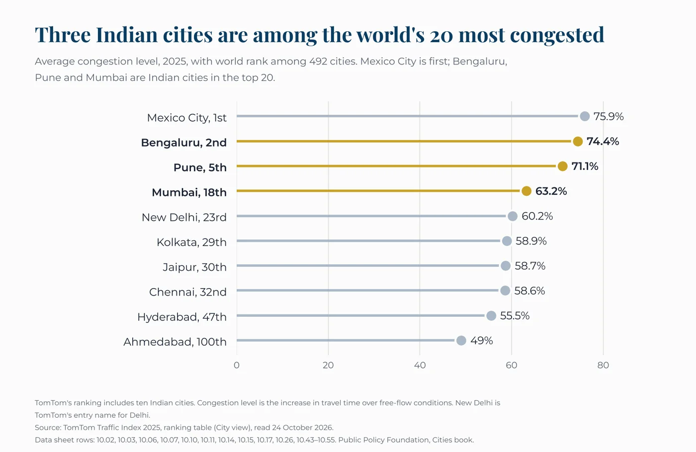
Chart 9.2 Congestion level and world rank among 492 cities, 2025, with Bengaluru second, Pune fifth and Mumbai eighteenth.
How slow is slow
Across the whole day TomTom puts Bengaluru’s average speed at 16.6 km/h, Pune’s at 18.0, Hyderabad’s at 18.4 and Mumbai’s at 20.8. In the rush hours it is lower still: 13.9 in Bengaluru, 15.1 in Pune, 16.1 in Hyderabad and 17.6 in Mumbai.
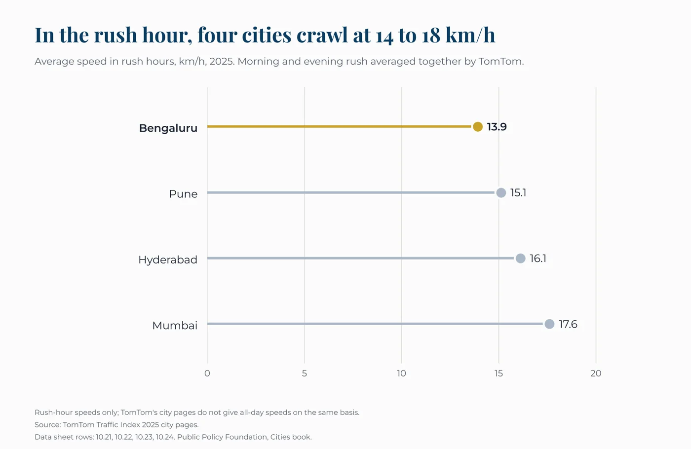
Chart 9.3 Average rush-hour speed in four cities, 2025, between 13.9 and 17.6 km/h.
For a 10 km trip, that is 36 minutes in Bengaluru on an average day, 41 in the morning rush and 45 in the evening rush. Pune takes 33, 38 and 42 minutes. Mumbai takes 29, 32 and 36, so Mumbai’s evening rush, at 35.5 minutes, is still quicker than Bengaluru’s average day at 36.2.
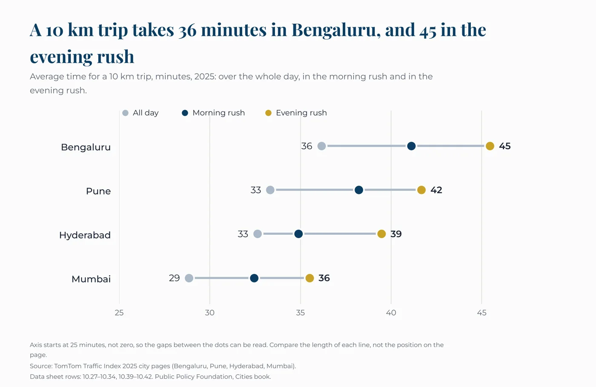
Chart 9.4 Time for a 10 km trip in Bengaluru, Pune, Mumbai and Hyderabad, over the day, in the morning rush and in the evening rush, 2025.
Better, and worse
TomTom’s 2025 figures can be set against 2024. Mumbai lost 14 hours fewer. Bengaluru lost 13 more, Pune 9 more and Hyderabad 1 more. TomTom does not say why, and one year is a signal, not a trend.
The numbers also depend on which view of a city one takes. The Economic Survey, quoting TomTom’s 2024 index for the city centres, gives 117 hours for Bengaluru, 103 for Mumbai and 76 for New Delhi. Those are lower than the 2025 city-area figures above, and they are for a different year and a different slice of the city. Hours lost should be compared only within one view and one year.
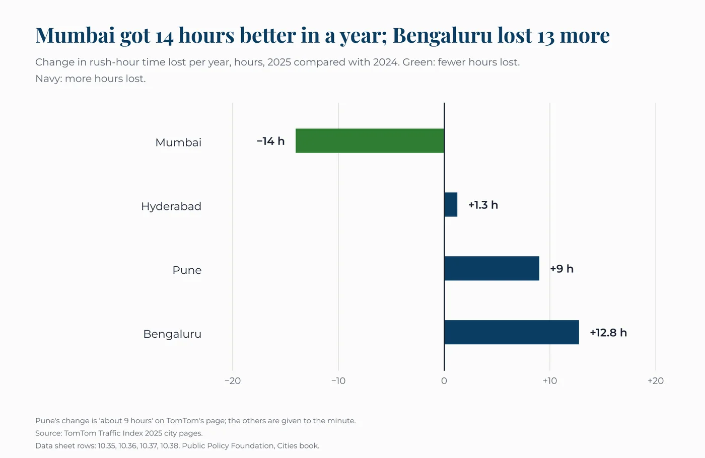
Chart 9.5 Change in rush-hour hours lost per year, 2025 against 2024, Mumbai down 14, Bengaluru up 13, Pune up 9.
A second source, and a different road
TomTom measures a standard trip. A second, older source measures the journeys of people who commute by company shuttle. MoveInSync, a company that runs employee transport, reported in 2019 that the worst morning hour in Delhi and the National Capital Region averaged 87 minutes for a home-to-work trip in 2018, against 65 minutes in Mumbai and in Bengaluru, 63 in Chennai, 58 in Hyderabad and 51 in Pune. In the evening the worst hour took 82 minutes in Delhi and the National Capital Region, 74 in Mumbai, 68 in Chennai, 67 in Hyderabad, 64 in Bengaluru and 60 in Pune.
These are the shuttle trips of one company’s clients, mostly to office districts, in 2018 and early 2019, and they are not the same measure as TomTom’s. The order of the cities differs: Delhi and the National Capital Region lead on commute time here and sit low on TomTom’s hours lost. The point of putting the two side by side is that the order of cities depends on the measure, and that the picture is old.
The bill, and the age of the number
Estimates of what congestion costs are older and rougher than the hours. The Economic Survey 2025-26 cites a 2018 report by Uber and the Boston Consulting Group that put the cost of congestion at $22 billion a year in four metros, Delhi, Mumbai, Bengaluru and Kolkata. It cites a working paper from the Institute for Social and Economic Change that put the productive time lost to late arrivals in Bengaluru in 2018 at 7.07 lakh hours, worth about ₹11.7 billion. And it cites a Centre for Science and Environment report on Delhi, which estimates that a worker loses ₹7,200 to ₹19,600 a year if unskilled, ₹8,300 to ₹23,800 if skilled and ₹9,000 to ₹25,900 if highly skilled. The Survey does not give that report’s year or method. These are orders of magnitude, not additions: the estimates are from different years, different cities and different methods, and they are not added together. Chapter 30 sets them beside other published prices.
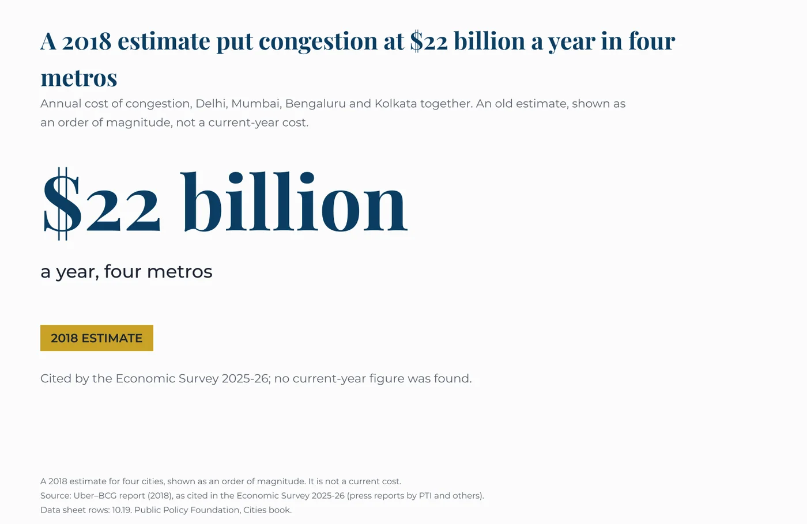
Chart 9.6 A 2018 estimate of congestion costing $22 billion a year across four Indian metros.
What to watch
TomTom publishes a new index every year. Three tests are worth keeping: whether Bengaluru’s 168 hours falls; whether Mumbai’s fall of 14 hours holds; and whether the same cities keep their places in the ranking, so that the comparison can be repeated.
The limit of the chapter is that the measure describes one standard trip, not the journeys people actually make.
Notes and sources
Every figure in the chapter is held in the PPF Cities data sheet. The last column gives the row numbers.
Figure
Source
Data rows
Rush-hour time lost: Bengaluru 168, Pune 152, Kolkata 150, Chennai 132, Mumbai 126, Hyderabad 123, Jaipur 121, Ahmedabad 106, New Delhi 104 hours (2025); TomTom’s definition (10 km trip twice a day at peak hours, 230 working days)
TomTom Traffic Index 2025, ranking table (City view) and city pages, read 18 and 24 Oct 2026
TomTom Traffic Index 2025, city pages and ranking table
10.04, 10.08, 10.12, 10.21–10.24, 10.55
Time for a 10 km trip, over the day and in the rushes
TomTom Traffic Index 2025, city pages (Bengaluru, Pune, Hyderabad, Mumbai)
10.27–10.34, 10.39–10.42
Change in hours lost, 2025 against 2024
TomTom city pages
10.35–10.38
Worst-hour commute, 2018: Delhi-NCR 87 and 82 minutes; Mumbai 65 and 74; Bengaluru 65 and 64; Chennai 63.5 and 68; Hyderabad 58 and 67; Pune 51 and 60. Average speeds Q1 2019: Chennai 25.7, Hyderabad 21.2, Delhi-NCR 20.6, Pune 19.9, Bengaluru 18.7, Mumbai 18.5 km/h
MoveInSync, Travel Time Report (2019)
10.56, 10.57
$22 billion a year, four metros, 2018; ISEC estimate for Bengaluru late arrivals, ₹11.7 billion
Uber–BCG report (2018) and ISEC, both as cited in the Economic Survey 2025-26 (read in full)
10.19, 10.20
Economic Survey’s 2024 TomTom figures for city centres: Bengaluru 117, Mumbai 103, New Delhi 76
Economic Survey 2025-26, para 15.27, citing TomTom Traffic Index 2024
10.62
Bengaluru late arrivals 7.07 lakh hours, ₹11.7 billion (2018); Delhi worker loses ₹7,200 to ₹25,900 a year (CSE)
Economic Survey 2025-26, para 15.27, citing ISEC working paper 554 and a CSE report
10.20, 10.61, 10.63
TomTom definitions: city area and metro area; congestion level; time lost
TomTom Traffic Index, About page (15th edition)
10.65 to 10.67
Part II · Left Behind · Chapter 10
Death on City Roads
In 2023, 17,255 people were killed on the roads of India’s 50 large cities, one in ten of all road deaths in the country. In Delhi, Kolkata and Mumbai, more than two in five of those killed were on foot.
One in ten, in a tenth of the space
India recorded 4,80,583 road accidents in 2023, and 1,72,890 people died in them, according to the Ministry of Road Transport and Highways. Most of those deaths were on highways and rural roads. The ministry also publishes a table for 50 large cities, and it shows how much of the toll falls inside city limits: 81,144 accidents, 73,476 injured and 17,255 killed in 2023, against 17,089 killed a year earlier.
That is 17% of the country’s recorded accidents and 10% of its deaths. Put another way, there were about 21 deaths for every 100 recorded accidents in the 50 cities and about 36 in the country as a whole. The sources do not say why. Slower traffic and shorter distances to a hospital are plausible reasons, but they are not shown in these tables.
Where the deaths are
Delhi has more road deaths than any other large city, by a wide margin: 1,457 people in 2023, or about one in twelve of the 17,255 killed in the 50 cities. Bengaluru is next with 915, then Jaipur with 849. Mumbai, the country’s largest city, is further down the list, with 384. Chennai recorded 503, Ahmedabad 535 and Hyderabad 335.
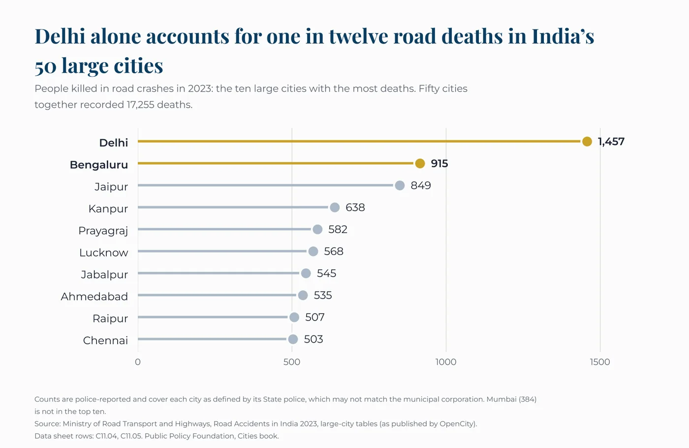
Chart 10.1 People killed in road crashes in 2023 in the ten large cities with the most deaths, led by Delhi with 1,457 and Bengaluru with 915.
These are counts, not rates. A big city with many people will record more deaths than a small one even if its roads are safer. The city table does not give deaths per lakh people, and this book does not calculate them: the last full count of city populations is the 2011 Census, and a rate that divides 2023 deaths by 2011 residents would overstate the danger. When the 2027 Census gives new city populations, the rates can be done properly.
Who is killed
Nationally, two-wheeler riders are the largest group among those killed (44.8% in 2023) and pedestrians the second (20.4%, or 35,221 people). In the 50 large cities the mix is different. Of the 17,255 people killed, 7,591 (44.0%) were on two-wheelers, but 4,604 (26.7%) were pedestrians and another 658 (3.8%) were on bicycles. Together, people on foot or on a bicycle were nearly one in three of those killed, 5,262 people.
Cars, taxis and vans account for 1,593 deaths (9.2%), buses 399 (2.3%) and trucks 593 (3.4%). The people who die on city roads are mostly not those inside the largest vehicles.
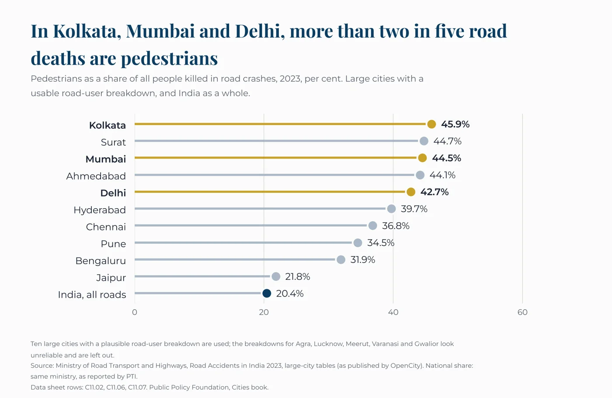
Chart 10.2 Pedestrians as a share of all road deaths in 2023, from 45.9% in Kolkata and 44.5% in Mumbai to 31.9% in Bengaluru and 21.8% in Jaipur, with India at 20.4%.
The pattern varies a great deal between cities. In Kolkata, 73 of the 159 people killed in 2023 were pedestrians (45.9%). In Mumbai it was 171 of 384 (44.5%), in Ahmedabad 236 of 535 (44.1%) and in Delhi 622 of 1,457 (42.7%). In Bengaluru and Pune, by contrast, about a third were pedestrians and over half were on two-wheelers: 500 of 915 in Bengaluru and 192 of 351 in Pune.
Road deaths in selected large cities, 2023
City
Killed in 2022
Killed in 2023
Pedestrians killed in 2023
Pedestrian share
Two-wheeler riders killed in 2023
Delhi
1,461
1,457
622
42.7%
549
Bengaluru
772
915
292
31.9%
500
Ahmedabad
488
535
236
44.1%
222
Chennai
507
503
185
36.8%
281
Mumbai
371
384
171
44.5%
170
Pune
325
351
121
34.5%
192
Hyderabad
323
335
133
39.7%
166
Surat
293
309
138
44.7%
130
Kolkata
185
159
73
45.9%
50
Behind the totals
The ministry’s city table is the best national source on road deaths in cities, but its figures should be read with care. The cities are defined by each State’s police, which may not match the municipal corporation. The counts depend on how a death is recorded and who reports it, and the table says only that the data were provided by the States and Union Territories.
Two examples show the problem. For Mumbai, the ministry’s table gives 384 deaths in 2023, while an analysis of the Mumbai Traffic Police’s own annual report puts the figure at 374, and within the same analysis one passage gives 371. The difference is small, but it means there is no single agreed count even for the country’s largest city. In Indore, deaths fell from 639 in 2022 to 257 in 2023, and in Bhopal from 348 to 196. In Dhanbad they rose from 114 to 306 and in Jamshedpur from 68 to 218. Changes of this size in a year are more likely to reflect how deaths were counted than a change on the road, though the sources do not say.
The breakdown by type of road user also looks unreliable for some cities. In the 2023 table, the numbers for Agra are spread almost evenly across nine categories, from 45 to 61 in each, and in Lucknow the largest group is “others” (215 of 568), with only 14 pedestrians. The charts in this chapter use only cities whose breakdown looks plausible, and say so.
What is not known
Four things would change how this chapter reads, and none can be found in the sources this book has read. Deaths per lakh people for each city, which need up-to-date populations. Deaths after leaving the scene, since police counts often miss people who die later in hospital. Road deaths by speed limit and road design, which would show whether the dangerous streets are the wide, fast ones. And the share of city budgets spent on footpaths and crossings, a figure that circulates in policy discussion without a source and is not used here.
What to watch
Three numbers would show whether cities are getting safer. Deaths per lakh people in each city, once the 2027 Census gives populations. The pedestrian share of deaths in each city, which the ministry already publishes and which in Delhi, Mumbai and Kolkata is more than double the national 20%. And whether the ministry’s table and each city’s traffic police report the same count for the same year, which today they do not.
Notes and sources
Every figure in the chapter is held in the PPF Cities data sheet. The last column gives the row numbers.
Same ministry, large cities fatalities by road user, 2023
C11.06, C11.12
City pedestrian shares (Kolkata 45.9% etc.)
Derived from the ministry table; Delhi matches OpenCity’s 42.69%
C11.07, U11.05
Mumbai 384 (ministry) against 374 (Traffic Police report, via OpenCity); Indore, Bhopal, Dhanbad, Jamshedpur swings
Same table; OpenCity analysis of Mumbai 2023
C11.08, C11.09
17% of accidents and 10% of deaths; about 21 and 36 deaths per 100 accidents
Derived from rows C11.01 and C11.04 and U11.01
C11.10, C11.13
Part II · Left Behind · Chapter 11
Rivers of Sewage
Indian cities produce about 72,000 million litres of sewage a day. By the last national inventory, about 28% of it was treated, and the number the Economic Survey gives in 2026 is the same.
Four numbers for one flow
The Ministry of Jal Shakti told the Lok Sabha that urban India generated 72,368 million litres of sewage a day (MLD) in 2020-21. The country had built plants able to treat 31,841 MLD, which is 44% of what was generated. Of that capacity, 26,869 MLD was operational, which is 37% of the sewage generated and about 84% of the installed capacity.
Down To Earth magazine, reporting the Central Pollution Control Board’s inventory, gives the amount actually treated as 20,235 MLD, which is 28% of the sewage generated. The Economic Survey 2025-26 also says that only 28% of urban wastewater is treated. Three measures, built, working and used, give three different answers, and a statement that ‘x% of sewage is treated’ should say which one it means.
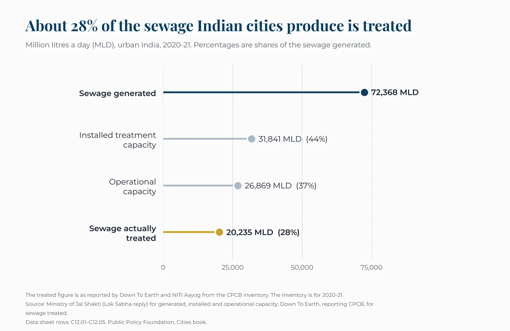
Chart 11.1 Sewage generated in urban India, 72,368 MLD, against installed treatment capacity of 31,841 MLD, operational capacity of 26,869 MLD and sewage actually treated of 20,235 MLD, 2020-21.
A fourth measure is whether the plant meets its standard. NITI Aayog’s 2023 strategy paper on reusing treated wastewater, quoting the same inventory, counts 1,469 plants. Only 12,200 MLD of capacity complied with the norms the plants were consented to meet, which is 38% of installed capacity and about 17% of the sewage generated. Less than 1,000 MLD, about 3% of what was treated, was reused.
Where the plants are
Capacity is concentrated. Down To Earth reports that five States, Maharashtra, Gujarat, Uttar Pradesh, Delhi and Karnataka, hold 60% of installed capacity, and ten States hold 86%. Six States and territories have no plant. Treated sewage as a share of what a State generates ranges from 0 to 1% in a dozen States to 47% in Maharashtra and 72% in Delhi and Punjab. Chandigarh treated 125% of what it generated, which the Board suggests means that sewage or industrial wastewater came in from outside the city.
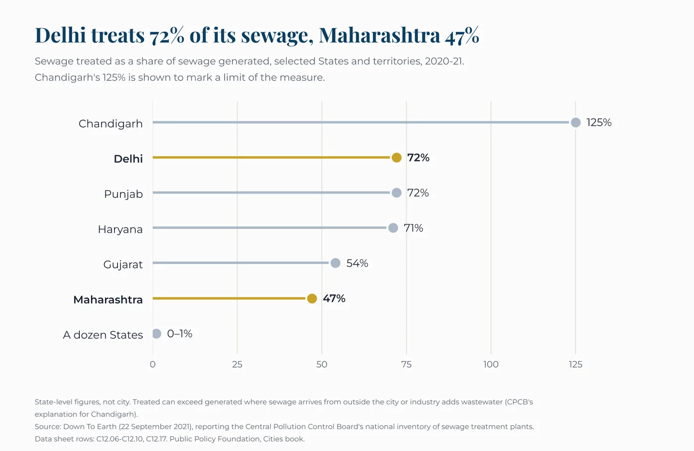
Chart 11.2 Sewage treated as a share of sewage generated in 2020-21, Chandigarh 125%, Delhi and Punjab 72%, Haryana 71%, Gujarat 54%, Maharashtra 47%, and a dozen States at 0 to 1%.
What the network lacks
A treatment plant works only if sewage reaches it. The Standing Committee on Housing and Urban Affairs, in a report presented to Parliament on 4 August 2026, put India’s urban households at 11.3 crore, of which 3.5 crore, about 31%, are connected to a sewer network and 2.9 crore, about 26%, rely on septic tanks and similar systems. The summary does not describe the other 4.9 crore. The Economic Survey, citing an assessment of 503 cities in ten States by the Council on Energy, Environment and Water, puts the figure at under 27% of households on underground sewerage and finds that 82% of the cities either do not reuse treated water or lack working treatment infrastructure. The two figures differ in base and year, and both say the same thing: most urban Indian homes are not on a sewer.
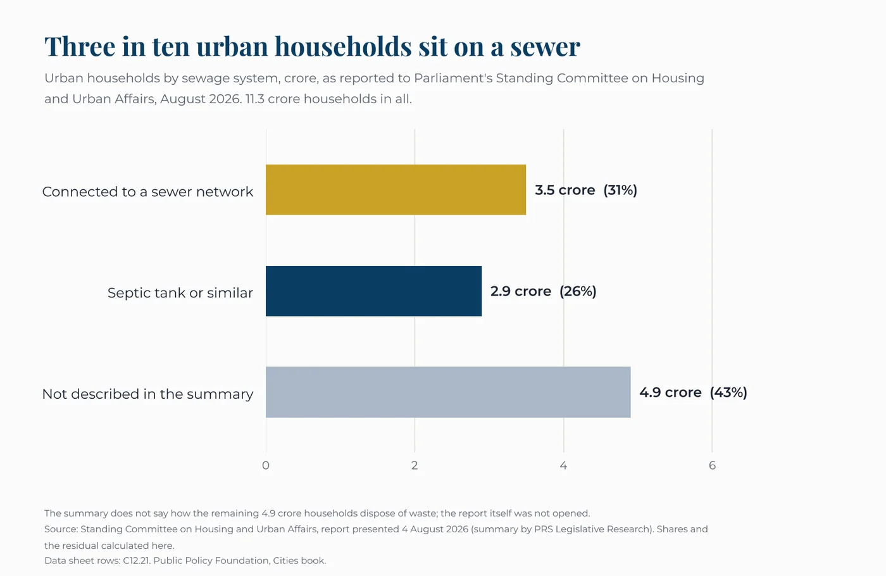
Chart 11.3 Of 11.3 crore urban households, 3.5 crore are connected to sewers, 2.9 crore use septic tanks or similar systems and 4.9 crore are not described, as reported to Parliament’s Standing Committee in August 2026.
The Committee found that 68% of the septic tanks it surveyed were not lined properly. Plants produce nearly 8,000 tonnes of dried sludge a day. Of 6,299 MLD of treatment capacity taken up under the first Atal Mission for Rejuvenation and Urban Transformation (AMRUT), 5,396 MLD was operating. Under its successor, AMRUT 2.0, 658 MLD was operating of 6,815 MLD taken up.
Is it being fixed?
Under AMRUT 2.0, 594 sewerage and septage projects were planned. By the Committee’s report 104 were complete and 398 were under implementation. The Centre had committed ₹66,060 crore and released ₹22,763 crore of it, 34%. The Sixteenth Finance Commission has set aside ₹56,100 crore for 2026-31 under a special infrastructure component for wastewater management in selected urban local bodies. The Economic Survey says ₹1.5 to 2.3 lakh crore would be needed in treatment technology alone to treat all sewage by 2047, a figure from the Council’s calculations that leaves out the sewer networks.
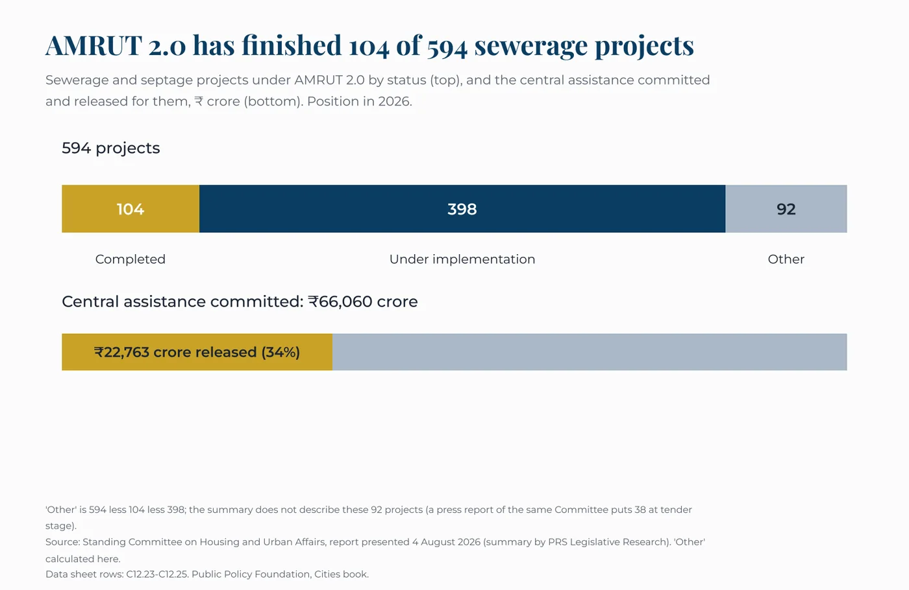
Chart 11.4 AMRUT 2.0 sewerage and septage projects, 104 completed, 398 under implementation and 92 other, and ₹22,763 crore of ₹66,060 crore committed released.
What is reused
The Survey says cities recycle only 8% of the sewage they treat. The Committee puts reuse at 6,013 MLD against 22,891 MLD of treatment capacity, 26%, and noted that there are no dedicated pipes to carry treated water to industry and farms. The two numbers are on different bases, one against what is treated and the other against capacity. The Survey adds that treated water used for industrial cooling, construction and landscaping could be a market of ₹2.4 to 3.2 lakh crore by 2047.
How old the numbers are
The national inventory is for 2020-21 and was released in 2021. Installed capacity in 2026, about 31,885 MLD in the Committee’s account, is within 0.2% of the 2020-21 figure of 31,841 MLD. The Committee noted that its sources differ on how much is treated: 28% in a 2022 NITI Aayog report, 43% in the Ministry’s own estimate. A new inventory would settle it, and the Committee has asked for annual balance sheets of sewage generated and treated for each urban local body.
What to watch
The next national inventory will show three numbers: capacity installed against sewage generated; capacity operating against installed; and sewage treated against operating capacity. A plant that is built but not used shows up in the second and third. A fourth number to watch is the share of households on a sewer, which is the first link in the chain and the one that no capacity figure measures.
Notes and sources
Every figure in the chapter is held in the PPF Cities data sheet. The last column gives the row numbers.
Ministry of Jal Shakti, reply to the Lok Sabha (Q140)
C12.01-C12.03
Sewage treated 20,235 MLD, 28% of generated
Down To Earth and NITI Aayog (2023), both reporting the Central Pollution Control Board inventory; share calculated
C12.04, C12.05
Economic Survey: 28% of urban wastewater treated, 8% of it reused; reuse capacity of 1,992 MLD planned
Economic Survey 2025-26, Chapter 15, para 15.43
C12.28-C12.30
1,469 plants; 12,200 MLD complying with norms (38% of installed); under 1,000 MLD reused (about 3%)
NITI Aayog, Strategy Paper on Reuse of Treated Wastewater in Peri-urban Agriculture (2023), quoting the Board’s 2021 inventory
C12.13-C12.15
Five States hold 60% of installed capacity and ten hold 86%; Chandigarh 125%; State shares treated 0% to 72%
Down To Earth (22 September 2021), reporting the Central Pollution Control Board
C12.06-C12.10, C12.16, C12.17
11.3 crore urban households; 3.5 crore on sewers; 2.9 crore on septic tanks; 68% of surveyed septic tanks not lined properly; nearly 8,000 tonnes of dried sludge a day
Standing Committee on Housing and Urban Affairs, report presented 4 August 2026, as summarised by PRS Legislative Research
C12.21, C12.26, C12.27
AMRUT: 5,396 of 6,299 MLD operating; AMRUT 2.0: 658 of 6,815 MLD; 594 projects, 104 complete, 398 under implementation; ₹66,060 crore committed, ₹22,763 crore released
Standing Committee report of 4 August 2026, via PRS
C12.23-C12.25
Installed capacity about 31,885 MLD; reuse 6,013 MLD of 22,891 MLD capacity; 28% (NITI Aayog 2022) against 43% (Ministry)
Standing Committee report of 4 August 2026, via PRS
C12.18-C12.20
Under 27% of households on underground sewerage; 82% of 503 cities in 10 States do not reuse treated water or lack working treatment; ₹1.5-2.3 lakh crore needed by 2047; ₹2.4-3.2 lakh crore reuse market
Economic Survey 2025-26, Box XV.4, citing Council on Energy, Environment and Water
C12.31, C12.32
₹56,100 crore special infrastructure component for wastewater, 2026-31
Sixteenth Finance Commission report
C12.11
Part II · Left Behind · Chapter 12
Taps That Run Dry
Under the national urban water mission, 1.89 crore households were given a tap or a rehabilitated network. A survey of 14 cities found that four in ten households get two hours of water a day or less.
A tap is not a supply
Chapter 6 set out what the 2011 Census found: 62% of urban households had a tap from a treated source. A tap says whether a pipe reaches the house. It does not say whether water comes out of it, and for how long. In many Indian cities water comes in turns, for a few hours on some days, and households arrange their lives around the schedule.
The national mission for urban water, AMRUT, counts connections. In a Lok Sabha reply of 13 February 2025, the Ministry of Housing and Urban Affairs said that 1,43,65,771 new tap connections had been made, and another 44,91,396 households had benefited from rehabilitated networks, a total of 1,88,57,167 households against a target of 1,38,76,758. The works included 64,463 km of water supply network and 4,695 million litres a day of treatment capacity. This is a large result, and it is a count of pipes and households. The reply gives no hours of supply, no litres per head and no share of water lost in the network.
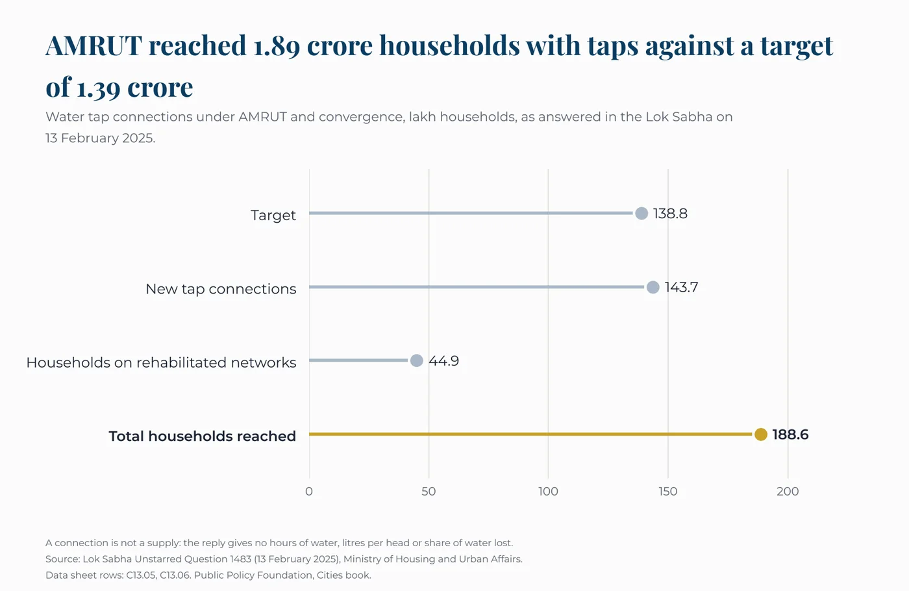
Chart 12.2 AMRUT water tap connections, target 138.8 lakh households, new connections 143.7 lakh, rehabilitated networks 44.9 lakh, total 188.6 lakh.
How many hours the water runs
The closest thing to a measure of hours is a household survey. Brown University and Janaagraha surveyed 31,803 households in 14 cities from 2019. In the report on the study, 43.4% of households said they get water for two hours a day or less, and 23% get more than 23 hours. A third get something in between. In six cities, more than half of households are in the two-hours-or-less group, and in most, more than a third are. Kochi is at the other end: fewer than 2% get two hours or less. The report’s city-by-city chart could not be read for this book, so the six cities are not named here. The study is not statistically representative of all Indian cities, but it is the only one found that asks households directly.
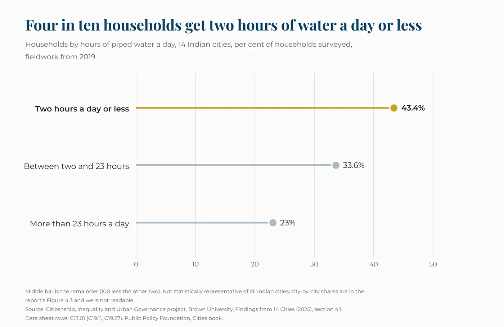
Chart 12.1 Share of households by hours of piped water a day in 14 cities; 43.4% get up to two hours, 33.6% between two and 23 hours, 23% more than 23 hours.
Households respond by storing. About 65% of those surveyed say they have a storage system, and in half the cities the share is close to or above 90%. In Chennai, the report finds, 17% of households rely on hand pumps and 14% on other sources such as tanker trucks.
The same city, many schedules
Water in an intermittent system reaches different streets at different times. A team at the University of Toronto collected the supply schedules posted by the water authorities in Delhi and Bengaluru, 3,278 in all, and published its findings in 2023. They range from nearly continuous to as little as 30 minutes a week.
In Delhi, about 2% of households have a near-continuous supply, and about the same share get 30 minutes of water a week. Nearly 5% get less than an hour a day, many only once every few days. More than 60% of the city gets water between 6 and 8 in the morning, and nearly half between 6 and 8 in the evening, so that outside those hours the supply is off for more than 90% of the city. In Bengaluru, most households get water on alternate days or less often. In both cities, affluent neighbourhoods have more piped connections and better schedules. In Bengaluru they are given more frequent and longer supply, which makes poorer households buy more storage. These are posted schedules, and what comes out of a tap may differ.
Where the water comes from
What the pipes do not supply, a borewell does. The Central Ground Water Board’s 2025 assessment puts India’s annual groundwater recharge at 448.52 billion cubic metres, of which 407.75 billion is extractable, and extraction at 247.22 billion, a stage of extraction of 60.63%. Of 6,762 assessment units (blocks, taluks, tehsils and mandals), 4,946 (73.1%) are safe, 758 semi-critical, 201 critical and 730 (10.8%) over-exploited. The share over-exploited has fallen from 17.2% in 2017. The assessment covers irrigation, industry and drinking water together, and does not separate cities.
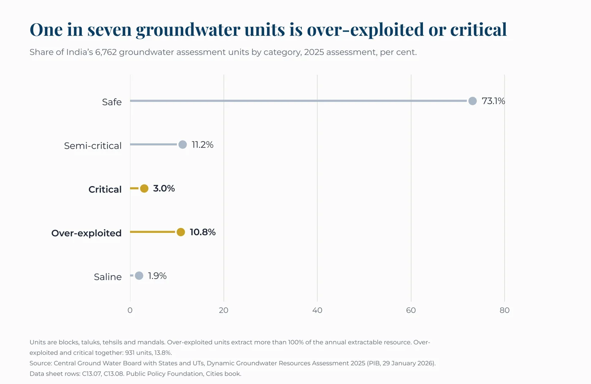
Chart 12.3 Share of India’s 6,762 groundwater units by category in 2025; safe 73.1%, semi-critical 11.2%, critical 3.0%, over-exploited 10.8%, saline 1.9%.
For individual cities, the 2024 round is reported through a secondary source. It puts Bengaluru at 186.7% of its extractable resource, over-exploited, and Delhi, Chennai and Hyderabad also over-exploited. Ahmedabad is semi-critical, and Mumbai and Pune are safe. Mumbai’s result does not make its water secure: it draws on lakes, not groundwater.
Groundwater status of seven large cities, 2024 assessment
City
Category
Stage of extraction
Bengaluru
Over-exploited
186.7%
Delhi
Over-exploited
not printed
Chennai
Over-exploited
not printed
Hyderabad
Over-exploited
not printed
Ahmedabad
Semi-critical
not printed
Mumbai
Safe
not printed
Pune
Safe
not printed
Water that is not lost, and water that is reused
Two other parts of the water story are covered in Chapter 11. India produces about 112 billion litres of wastewater a day, of which about 28% is treated, and cities reuse about 8% of what they treat. A study of 503 cities in 10 States found that 82% either do not reuse treated water or lack a functioning plant.
What is not known
For none of the 20 cities in this book is there a published figure for hours of piped water a day. The 14-city survey is the nearest, and its city values sit in charts. Posted schedules for Delhi and Bengaluru show what the utility plans, and nothing in hand shows what arrives. The share of water lost between the plant and the tap, called non-revenue water, was not found for any city. Without these, the chapter cannot rank cities by water. That gap is the finding.
Notes and sources
Every figure in the chapter is held in the PPF Cities data sheet. The last column gives the row numbers.
Figure
Source
Data rows
AMRUT: 1,43,65,771 new connections; 44,91,396 rehabilitated; total 1,88,57,167; target 1,38,76,758; 64,463 km; 4,695 MLD
Lok Sabha Unstarred Question 1483, 13 February 2025
C13.05, C13.06
14 cities: 31,803 households; 43.4% up to 2 hours; 23% more than 23 hours; Kochi under 2%; six cities over half
Brown University CIUG, Findings from 14 Cities (2025), section 4.1
C13.01, C19.02, C19.11, C19.27
65% have storage; Chennai 17% hand pumps and 14% other sources
India’s cities now collect almost all the waste they produce and report that four-fifths of it is processed. Behind that lies a stock of old waste: of 2,476 dumpsites identified in 2021, 1,048 had been cleared four years later.
What has been fixed
Waste collection is the part of the cities’ work that has changed most. The Economic Survey of 2025-26 reports that 98% of urban wards now have door-to-door collection, against a negligible share in 2014-15, and that there are over 2.5 lakh collection vehicles. Cities generate about 1.6 lakh tonnes of waste a day, and about 80% is reported as processed, up from 16% in 2014-15.
The word “reported” matters. The Survey says that gaps in segregation at the source, in how well the waste is processed and in enforcement remain in many places. The Garbage-Free City rating asks for more than collection: a 3-star city needs at least 60% segregation at source and 70% processing, and a 7-star city 90% segregation and processing and near-complete clearing of its old dumpsites. The Survey says collection has improved rapidly, while segregation, processing and dumpsite remediation lag.
What is left: the old waste
The older waste is the mountain. When the second phase of the Swachh Bharat Mission in cities began in 2021, 2,476 dumpsites were identified where waste had piled up over decades. By November 2025, when the Ministry of Housing and Urban Affairs launched a dumpsite remediation accelerator programme, 1,048 of them (42%) had been fully cleared and 1,428 were still being worked on. The Ministry says about 14.33 crore tonnes of the nearly 25 crore tonnes of old waste had been processed, and about 7,580 acres of land reclaimed. Central assistance for the work is ₹4,181 crore, for projects worth ₹10,228 crore in 2,484 urban local bodies.
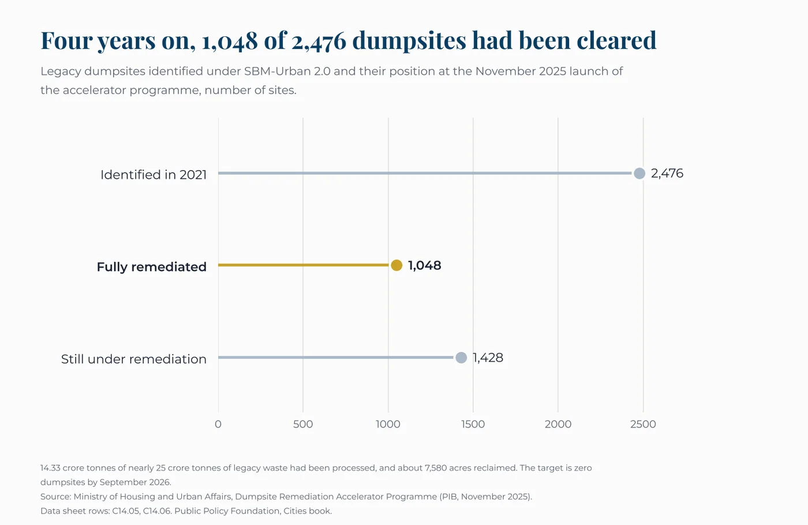
Chart 13.2 Dumpsites identified in 2021 (2,476), fully remediated (1,048) and still under remediation (1,428) as at November 2025.
The programme names 214 priority sites, in 202 cities and towns, that hold most of what remains. The Ministry puts it at about 8.8 crore tonnes, roughly four-fifths of the remaining old waste. It has set itself a target, “Lakshya Zero Dumpsites”, of September 2026. That date has now passed. A later summary of a Ministry release, dated 22 September 2026, says that 459 urban local bodies in 29 States finished clearing their dumpsites between January and December 2025, with 3.66 crore tonnes of old waste remediated that year. The national position against the September 2026 target was not found.
Where the mountains are
The Ministry’s annexure lists the priority sites by city. Ten of the 20 cities in this book are on it. Delhi’s Municipal Corporation has two sites holding 1.58 crore tonnes of old waste. Bengaluru has five sites with 97.82 lakh tonnes, and Chennai two with 91.02 lakh tonnes. Those three together hold 3.47 crore tonnes, 27% of the 13.03 crore tonnes on all 214 sites.
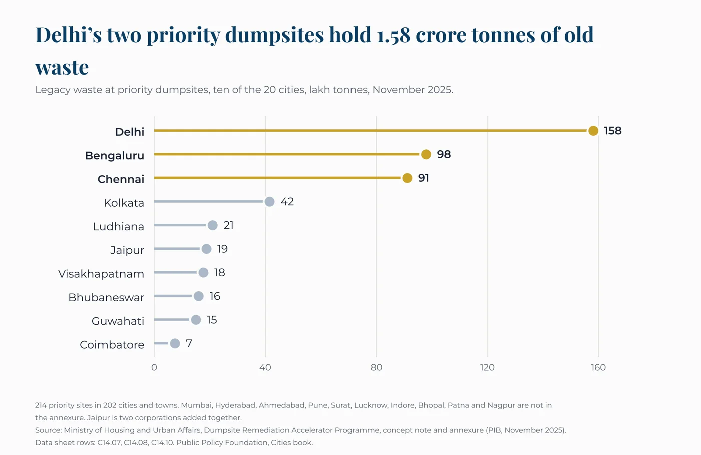
Chart 13.1 Legacy waste at priority dumpsites in ten of the 20 cities, lakh tonnes: Delhi 158, Bengaluru 98, Chennai 91, Kolkata 42, Ludhiana 21, Jaipur 19, Visakhapatnam 18, Bhubaneswar 16, Guwahati 15, Coimbatore 7.
Ten of the 20 are not in the annexure: Mumbai, Hyderabad, Ahmedabad, Pune, Surat, Lucknow, Indore, Bhopal, Patna and Nagpur. Not being listed does not mean having no dumpsite. The annexure has no rows for Maharashtra or Bihar at all, and the Ministry’s note names Mumbai’s Deonar, with Delhi’s Ghazipur, as a larger dumpsite that may need longer. Indore, whose waste record is covered in Chapter 4, is also off the list, but the table does not say why.
One site shows the pace. Delhi’s Bhalswa dumpsite was adopted by the Union Minister on 17 September 2025, and 4,79,500 tonnes had been remediated from then to 6 November. How much waste Bhalswa holds in all is not given. The later summary says 99.07 lakh tonnes had been remediated by July 2026, and that over half the site had been reclaimed by May 2026.
What the national numbers say
Measure
Figure
Source
Urban wards with door-to-door collection
98%
Economic Survey 2025-26
Waste generated a day
about 1.6 lakh tonnes
Economic Survey 2025-26
Share reported processed
about 80% (16% in 2014-15)
Economic Survey 2025-26
Legacy dumpsites identified, 2021
2,476
MoHUA, November 2025
Fully remediated
1,048 (42%)
MoHUA, November 2025
Legacy waste processed
14.33 of nearly 25 crore tonnes
MoHUA, November 2025
Land reclaimed
about 7,580 acres
MoHUA, November 2025
What is not known
The figures that would show whether a city’s system works are missing for the 20 cities. There is no published share of waste segregated at source, or of waste generated that is processed, for any of them in the sources read. The 80% processed figure is a national figure, and the Survey calls it “reported”. For Mumbai, Hyderabad and the other cities not on the annexure, no figure for old waste was found. Whether the September 2026 target was met is not known.
Notes and sources
Every figure in the chapter is held in the PPF Cities data sheet. The last column gives the row numbers.
Figure
Source
Data rows
98% of urban wards with door-to-door collection; over 2.5 lakh vehicles; 1.6 lakh tonnes a day; about 80% reported processed (16% in 2014-15)
Economic Survey 2025-26, Chapter 15, para 15.36
C14.01, C14.02
Garbage-Free City star benchmarks
Economic Survey 2025-26, Chapter 15, para 15.37
C14.03
2,476 dumpsites; 1,048 remediated; 1,428 under remediation; 14.33 of nearly 25 crore tonnes; 7,580 acres; ₹4,181 crore and ₹10,228 crore
MoHUA, DRAP concept note and web page, November 2025
C14.05, C14.06
214 priority sites in 202 ULBs; 8.8 crore tonnes; 13.03 crore tonnes; Bhalswa; target September 2026
MoHUA, DRAP concept note and annexure
C14.07
Delhi, Bengaluru, Chennai and seven other cities: legacy waste at priority sites
DRAP annexure
C14.08
27% in three cities
Derived
C14.09
Ten cities not in the annexure
DRAP annexure
C14.10
459 ULBs completed remediation in 2025; 3.66 crore tonnes; Bhalswa 99.07 lakh tonnes by July 2026
SuperKalam summary of a PIB release, 22 September 2026
C14.11
Part II · Left Behind · Chapter 14
The Walking City That Isn’t
More than half of India’s urban workers go to work on a two-wheeler. One in ten takes a bus, and fewer than one in five walks or cycles. The buses that carry the rest are a fifth of what the guidance asks for.
How the city goes to work
India had no national travel survey until this year. The Ministry of Statistics held its first, from July 2025 to June 2026, among 4,92,023 households, and released the first results on 6 October 2026. The figures here are as reported in three secondary accounts of the release; the release itself was not found.
For urban workers with a fixed workplace, the main mode of travel to work is a two-wheeler for 52.3%, walking for 13.5%, a bus for 9.2%, an auto-rickshaw for 8.8%, a bicycle for 5.8%, a car for 5.7% and a train, metro or tram for 5.0%. Adding them up, two-wheelers and cars carry 58.0% of urban commuters, walking and cycling 19.3% and buses and trains 14.2%.
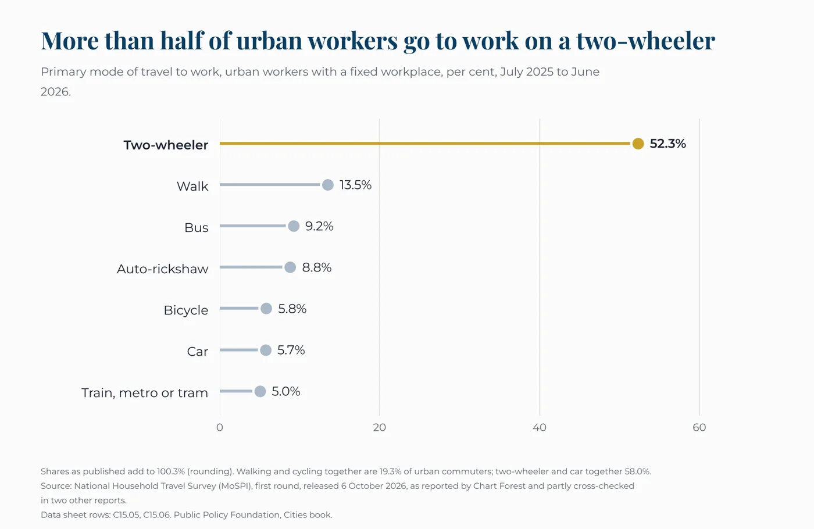
Chart 14.1 Primary mode of travel to work, urban workers, July 2025 to June 2026; two-wheeler 52.3%, walk 13.5%, bus 9.2%, auto-rickshaw 8.8%, bicycle 5.8%, car 5.7%, train or metro 5.0%.
In rural India the picture is reversed. Walking and cycling carry 50.0% of workers, and two-wheelers 38.6% together with cars. A city is where people stop walking to work and start riding a motorbike. That is not a failure by itself, as people walk less in richer places. It is a cost when the walk is replaced by something that kills, pollutes and clogs the road: Chapters 8, 9 and 10 cover each.
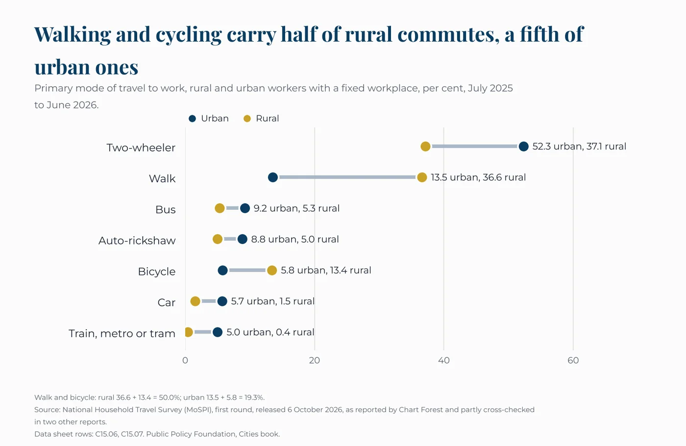
Chart 14.2 Primary mode of travel to work, urban against rural workers, for seven modes.
What the trip costs
The survey also asked what workers pay. An urban worker with a fixed workplace spends ₹1,044 a month on the trip to work, against ₹612 in rural areas and ₹785 across India. The average journey takes 27 minutes in urban areas (25 nationally), and 79.3% of urban workers reach work within 30 minutes, against 86.1% in rural areas. The urban premium is larger for women: ₹884 a month against ₹307 for rural women.
The buses
A bus is the cheapest way to move many people on a road, and cities depend on it for those who cannot afford a motorbike. The Economic Survey of 2025-26 says the Ministry of Housing and Urban Affairs recommends 40 to 60 buses for every lakh urban residents and that many cities have far fewer. It counts about 47,650 city buses in the country, nearly 61% of them in nine megacities it does not name. Spread over urban population, that is about 9 to 13 buses per lakh people, depending on the population count used. The year of the bus count is not stated.
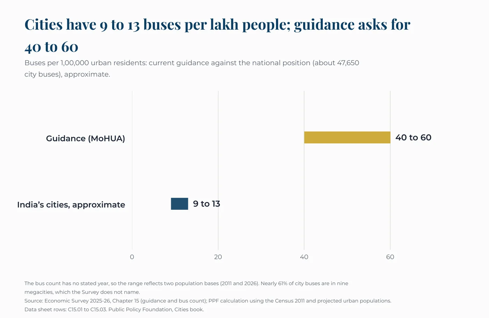
Chart 14.3 Buses per lakh urban residents, guidance 40 to 60, India’s cities about 9 to 13.
The central government’s scheme to put buses on the road, PM e-Bus Sewa, aims at 10,000 electric buses on contract. In a Lok Sabha reply of 13 February 2025, the Ministry said it had approved 7,293 e-buses for cities in 14 States and 4 Union Territories, and sanctioned ₹983.75 crore of depot infrastructure. It had released ₹437.50 crore, the first tranche, to seven States and one Union Territory. Of this, Maharashtra received ₹200.18 crore. The reply does not say how many buses were running: deployment, it says, depends on depots being ready and on the tender conditions. Approved is not delivered.
The scheme also leaves out the largest cities. Cities with a 2011 Census population above 40 lakh, of which the reply names Hyderabad, are not eligible. Which of the other 19 cities in this book are above the line was not worked out.
Who is walking, and on what
Walking is the main way to work for 13.5% of urban workers, and others walk to a bus or a station. Chapter 10 showed that pedestrians were 26.7% of the people killed on the roads of the 50 large cities in 2023, against 20.4% nationally, and above 44% in Mumbai, Surat, Kolkata and Ahmedabad. A city where a quarter of those killed were on foot is not one that has made walking safe. How many kilometres of footpath each city has, and how much is usable, is not published in any source found.
What is not known
The number of buses, per lakh people, for each city is one of the measures this book settled on for comparing cities, and it could not be found for any of the 20 cities. There is no city-level count of buses, no footpath length and no measure of the first and last mile. Chapter 3 gives metro lengths by line and city, but no ridership by city. The travel survey is national, with a split by urban and rural: a city-by-city view would come only if the survey’s state or city tables are published.
Notes and sources
Every figure in the chapter is held in the PPF Cities data sheet. The last column gives the row numbers.
Figure
Source
Data rows
Survey design: July 2025 to June 2026; 4,92,023 households; released 6 October 2026
MoSPI National Household Travel Survey, as reported by Chart Forest, Construction World and SuperKalam
Lok Sabha Unstarred Question 1479, 13 February 2025
C15.04, C15.09, C15.10
Pedestrians 26.7% of road deaths in 50 large cities; 20.4% nationally; Mumbai, Surat, Kolkata, Ahmedabad above 44%
MoRTH large-city table via OpenCity
C11.02, C11.07, C11.12
No footpath or bus data by city
Project count
C15.11, C28.05
Part II · Left Behind · Chapter 15
Declared Done
By the government’s count, 96% of the projects in the Smart Cities Mission are complete. Complete counts what was built. It does not count what residents now get.
A mission, counted
In a reply to the Rajya Sabha on 8 December 2025 (Unstarred Question 853), the Ministry of Housing and Urban Affairs said that, on information from the States and Union Territories as on 1 December 2025, the Smart Cities Mission had completed 7,741 of its 8,064 projects across 100 cities. The completed projects were worth ₹1,55,386 crore of ₹1,64,811 crore, which is 94% by value. The remaining 323 projects, worth ₹9,425 crore, were still under way. The Centre’s outlay for the 100 cities was ₹48,000 crore. The cities had claimed ₹47,458 crore of it (99%), and the States and Union Territories reported spending ₹46,093 crore (97% of what was claimed).
The Mission’s financial closure was on 31 March 2025, and the reply says there is no budget outlay since. A June 2025 advisory asks the city companies, the special purpose vehicles that ran the projects, to finish the ongoing work, prepare operation and maintenance plans for what was built, and be repurposed for other urban tasks. The reply gives no figure for how the companies are staffed or paid. The Economic Survey 2025-26 adds that all 100 cities have a working command and control centre, and that many use digital monitoring for water supply and waste collection.
That is a record of outputs: projects built and handed over, and money claimed and spent. It says nothing about whether the water arrives, the traffic moves or the services work any better. The Ministry’s reply was to a question about outcomes, and it answered with outputs.
Built, working, used
The same gap shows in programmes that do publish a second number. A sewage plant can be built, can be working and can be in use, and each stage is smaller than the one before. Chapter 11 gives the national figures for 2020-21.
Table 15.1. Built, working and used: sewage treatment capacity, urban India, 2020-21 (million litres a day).
Stage
MLD
Share of sewage generated
Installed capacity
31,841
44%
Operational capacity
26,869
37%
Sewage treated
20,235
28%
The same pattern runs through other programmes. The Economic Survey reports door-to-door waste collection in 98% of urban wards in 2025-26, from a negligible share in 2014-15, and says about 80% of the 1.6 lakh tonnes of municipal waste produced each day is reported processed. In the same passage it says that segregation at source, processing and the clearing of old dumpsites lag behind, so collection is a smaller part of the job than the 98% suggests. Under the two phases of the urban housing scheme, Pradhan Mantri Awas Yojana, 96.02 lakh of 122.06 lakh sanctioned houses had been completed by 24 November 2025, 79%. And of 594 sewerage and septage projects planned under AMRUT 2.0, 104 had been completed by 2026, 17.5%, with a third of the central money released.
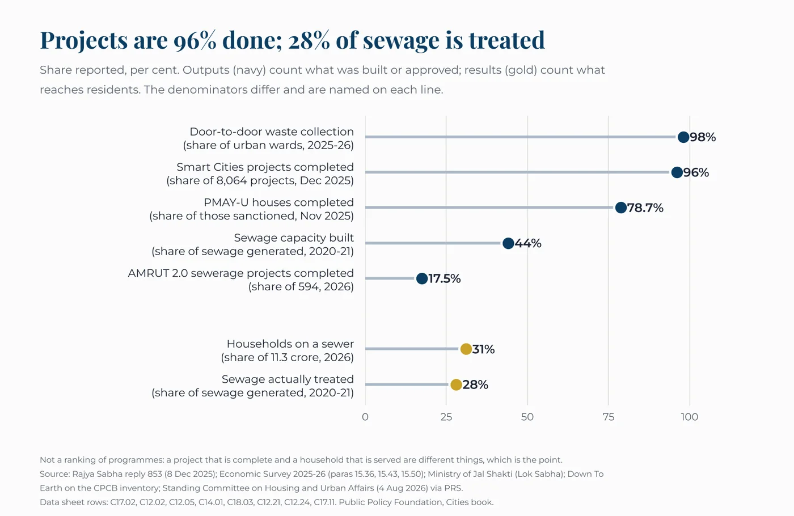
Chart 15.1 Shares reported for six programmes, door-to-door waste collection in 98% of wards, Smart Cities projects 96% complete, PMAY-U houses 78.7% complete, sewage capacity built 44% of sewage generated, AMRUT 2.0 sewerage projects 17.5% complete, against the results that reach residents, 31% of households on a sewer and 28% of sewage treated.
The test of an outcome
An outcome measure asks what changed for a resident. For sewage, it is the share of sewage treated or the share of households on a sewer. For a bus project, it is whether the buses come and how long a trip takes. For a housing scheme, it is whether the house is lived in and whether the household can afford it: the Survey cites a Knight Frank and NAREDCO report that the share of new homes costing under ₹50 lakh in India’s eight largest cities fell from 52.4% of supply in 2018 to 17% in 2025. These are the measures the book uses wherever it can, and the ones the 2036 report card at the end of the book is built on.
None of this makes outputs unimportant. A plant that is not built treats nothing. The point is the order of the questions: first whether it was built, then whether it works, then whether it is used, and last what residents now have. A programme reported at the first stage is not yet reported.
What to watch
Whenever a government says that a programme is ‘complete’, look for the second number beside it: what residents received, and how it was measured. The test of a repurposed Smart City company is whether it publishes its operation and maintenance plans, and whether any of its projects carry a measured result.
Notes and sources
Every figure in the chapter is held in the PPF Cities data sheet. The last column gives the row numbers.
Figure
Source
Data rows
7,741 of 8,064 projects completed, 100 cities, 1 December 2025; ₹1,55,386 crore of ₹1,64,811 crore; 323 ongoing, ₹9,425 crore; outlay ₹48,000 crore, claimed ₹47,458 crore, utilised ₹46,093 crore; closure 31 March 2025; Advisory 27 of 10 June 2025
Rajya Sabha Unstarred Question 853, answered 8 December 2025, Ministry of Housing and Urban Affairs
C17.01, C17.03-C17.09
96% of projects; 94% by value
Calculated from the reply
C17.02
All 100 cities have operational command and control centres; about 8,067 projects, over 90% complete, nearly ₹1.64 lakh crore (9 May 2025)
Economic Survey 2025-26, Chapter 15, para 15.46
C17.10
Installed, operational and treated sewage capacity, 2020-21
Ministry of Jal Shakti (Lok Sabha); Down To Earth reporting the Central Pollution Control Board
C12.01-C12.05
98% of wards with door-to-door collection; about 1.6 lakh tonnes a day, about 80% reported processed; gaps in segregation, processing and dumpsite remediation
Affordable housing supply in the top eight cities, 52.4% (2018) to 17% (2025)
Economic Survey 2025-26, para 15.48, citing Knight Frank and NAREDCO
C18.02
AMRUT 2.0 sewerage: 104 of 594 projects complete; ₹22,763 crore of ₹66,060 crore released; households on sewers 3.5 crore of 11.3 crore
Standing Committee on Housing and Urban Affairs, report of 4 August 2026, as summarised by PRS Legislative Research
C12.21, C12.24, C12.25
Part III · Two Cities in One · Chapter 16
Homes the Many Can’t Afford
India’s cities are short of about 29 million homes, nearly all of them for low-income households. In the seven biggest housing markets, 6% of the homes launched in April to June 2026 cost under ₹40 lakh.
The shortage
The Economic Survey of 2025-26 puts the urban housing shortage at 18.8 million homes in 2012 and 29 million in 2018. In 2018, 99% of it was among low-income households. In 2012, 15 million households lived in congested homes that needed new housing. These are the latest figures the Survey gives.
The government’s main answer has been the urban part of the Pradhan Mantri Awas Yojana. As of 24 November 2025, the two phases together had sanctioned 122.06 lakh homes, of which 96.02 lakh were completed or delivered, 78.7% of the sanctioned. Chapter 5 sets out how many of those are built on the beneficiary’s own plot and how many are occupied. The scheme’s subsidy goes to the household. It does not change what developers choose to build and sell.
What is being built to sell
The market answers differently. ANAROCK Research, a property consultancy, counts about 1,06,000 new homes launched in the seven biggest markets in April to June 2026: the Delhi region (NCR), the Mumbai region (MMR), Bengaluru, Pune, Hyderabad, Chennai and Kolkata. Only 6% of them cost less than ₹40 lakh, the lowest share since the start of 2022. A further 19% cost ₹40 to 80 lakh, and 27% ₹80 lakh to 1.5 crore. Homes above ₹1.5 crore made up 48% of launches.
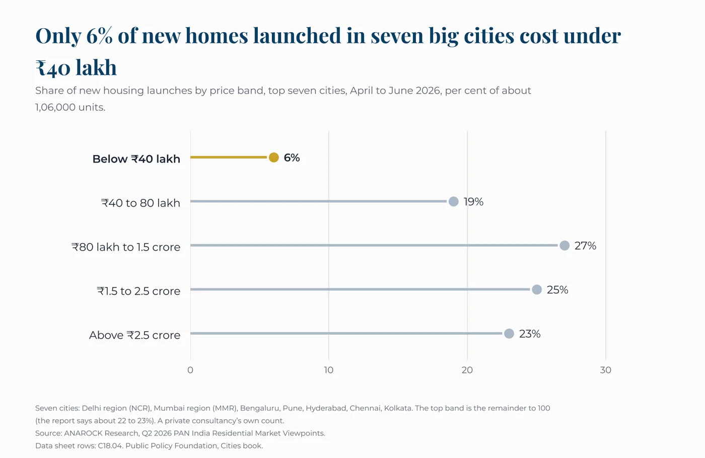
Chart 16.1 Share of new launches by price band in seven cities, April to June 2026; below ₹40 lakh 6%, ₹40 to 80 lakh 19%, ₹80 lakh to 1.5 crore 27%, ₹1.5 to 2.5 crore 25%, above ₹2.5 crore 23%.
The Economic Survey describes the same drift for the top eight cities, using a different price line. Homes under ₹50 lakh were 52.4% of supply in 2018 and 17% in 2025, a fall of more than two-thirds. A news report of ANAROCK’s data gives nearly 52% for 2018 against 6% now, the 6% with the ₹40 lakh line. The two sets of figures use different price lines, different cities and different years and should not be put on one chart. They agree on the direction.
City by city
The mix differs by city. In Bengaluru 68% of new homes launched were priced above ₹1.5 crore, in the Delhi region 61% and in Hyderabad 49%. In Pune the share is 16%, and in Chennai 23%.
Chart 16.2 Share of launches above ₹1.5 crore: Bengaluru 68%, NCR 61%, Hyderabad 49%, Kolkata 45%, MMR 44%, Chennai 23%, Pune 16%.
The price per square foot differs more. The average is ₹17,780 in the Mumbai region, ₹9,810 in the Delhi region, ₹9,450 in Bengaluru, ₹8,300 in Pune, ₹8,090 in Hyderabad, ₹7,250 in Chennai and ₹6,345 in Kolkata. Prices went up 4% to 13% on the year. These are asking prices in new and under-construction projects, not what homes sell for.
Chart 16.3 Average price per square foot in seven cities, from Mumbai region ₹17,780 to Kolkata ₹6,345.
Builders, in turn, have more unsold stock than buyers: about 6,16,500 unsold homes, or around 19 months of sales, in the seven cities. Hyderabad has 27 months of stock and Kolkata 21. A city can be short of 29 million homes and have a glut of homes that most households cannot buy. The two are the same fact: the shortage is of homes at prices the low-income household can pay, and the market does not build those.
What is not known
No source in hand gives the price of a home against the income of the households that need one, by city. A press article quotes price-to-income ratios of 14.3 in the Mumbai region and 10.1 in Delhi-NCR, but does not say who calculated them, and the chapter does not use them. Ahmedabad and the twelve smaller cities in this book are not in the ANAROCK count.
Notes and sources
Every figure in the chapter is held in the PPF Cities data sheet. The last column gives the row numbers.
Figure
Source
Data rows
Shortage 18.8 million (2012); 29 million (2018); 99% low-income; 15 million in congested homes
Economic Survey 2025-26, Chapter 15
C18.01
Under ₹50 lakh: 52.4% of supply in 2018; 17% in 2025 in the top eight cities
Economic Survey 2025-26, Chapter 15, citing an industry report that was not opened
Launches by price band; above ₹1.5 crore by city; prices per sq ft; launches, sales, stock
ANAROCK Research, Q2 2026 PAN India Residential Market Viewpoints
C18.04 to C18.07
Two definitions of affordable; direction agrees
Economic Survey; ANAROCK; The Week, 7 July 2026
C18.08
Price-to-income ratios (not used)
The Week, 7 July 2026
C18.09
Part III · Two Cities in One · Chapter 17
Life Inside the Informal City
In fourteen Indian cities, a household in an informal shack gets 56% of a full set of basic services. A household in upper-class housing gets 90%. In the study’s models, where a family lives had the highest explanatory power of any factor measured.
A study of fourteen cities
The Citizenship, Inequality and Urban Governance project, run from Brown University with researchers in India, surveyed 31,803 households in 14 cities: Delhi, Kolkata, Mumbai, Hyderabad, Ahmedabad, Chennai, Vadodara, Bhopal, Lucknow, Ajmer, Bhavnagar, Bhubaneswar, Jalandhar and Kochi. Enumerators were trained in early 2019, and 90% of the households approached responded. The households were randomly selected, and shack and slum settlements were deliberately oversampled in every city except Mumbai, because the usual lists miss many of them. The authors say that the findings are not statistically representative of all Indian cities.
The fieldwork is now several years old, and that matters. It cannot say what a monsoon, a new sewer line or a demolition has done since 2019. What it offers is rare: the same questions, asked in the same way in fourteen cities, of households chosen so that the poorest are not missed. The book uses it for what it shows well, which is how services fall away as housing gets poorer.
How the surveyors saw class
Instead of asking households about their class, surveyors classified each dwelling by sight into one of five housing types. Upper-class housing is an independent house or a large apartment, usually in a walled or gated complex. Middle-class housing is a house or apartment building, usually concrete, with private balconies and seldom a gated complex. Lower-middle-class housing is small, concrete and often has two or three rooms; it is often near shops and next to the poorer settlements, and includes housing built to relocate slum families under the national urban renewal mission.
The two lowest types are what this book calls the informal city. An informal slum is a row of one-room pukka (permanent-material) houses, densely packed, with corrugated metal roofs, set back from the main streets. An informal shack is built by its occupants from reclaimed wood, fabric, tarpaulin, corrugated metal or sackcloth, on vacant lots, pavements, road medians or under flyovers. The housing type is the authors’ stand-in for a household’s class.
Measuring a full set of services
The study built an index of Basic Service Delivery and Infrastructure that runs from 0 to 1. A household scoring 0 gets no services and is often flooded. A household scoring 1 would have 13 hours or more of water and 24 hours of electricity, a flush toilet connected to a sewer or septic tank that does not clog, good neighbourhood roads, and no flooding in the house or the neighbourhood. The score can be read as the percentage of a complete set of services.
The index adds water, power and sanitation, each scaled from 0 to 1, to half a point each for flooding and for the road, and divides by four. The authors give water, power and sanitation full weight and flooding and roads half weight because they judge the first three to matter more to a household.
The ladder
Across the 14 cities the average household scored 0.90 in upper-class housing, 0.88 in middle-class housing and 0.84 in lower-middle-class housing. Slum households scored 0.73. Shack households scored 0.56. Services decline step by step down the housing ladder, and the two informal rungs receive the least.
Chart 17.1 The services index by housing type in 14 cities, from 0.90 in upper-class housing to 0.56 in informal shacks.
The city matters too. Bhavnagar, Kochi and Vadodara had the best services and Chennai and Mumbai the worst. Kochi and Vadodara both averaged 0.89, Mumbai 0.77 and Chennai 0.72. The authors conclude that housing type, their stand-in for class, had the strongest effect and the highest explanatory power of the factors they tested.
Water
Nearly every household in the study had a tap or borewell, but the supply is short. In most cities the hours of water are bunched at the two ends: most households get less than two hours a day or more than 23. Across the 14 cities 43.4% of households received water for up to two hours a day, and 23% received more than 23 hours. In six cities more than half of households got two hours or less, and in most cities more than a third did. In Kochi fewer than 2% did.
Sanitation
The study counts sanitation as good when a household has a flush toilet connected to a sewer or a septic tank, or a ventilated or covered pit latrine. It counts everything else, including public latrines, as compromised. By that test over 99% of households in Kochi had good sanitation, and over 90% in Vadodara, Ahmedabad and Delhi. In Bhubaneswar the share was 55% and in Mumbai about 40%.
Chart 17.2 Households with good sanitation in selected cities, over 99% in Kochi, over 90% in Vadodara, Ahmedabad and Delhi, 55% in Bhubaneswar and about 40% in Mumbai.
Informal shacks had the worst sanitation in every city, with over 90% of shack households compromised in Ahmedabad, Ajmer, Jalandhar and Mumbai. In Mumbai’s slums 94% of households were compromised, against 6% in the slums of Vadodara and Ajmer. In the middle and upper classes nearly all households had good sanitation. Bhubaneswar was the exception: even among its richest households, 29% relied on open drainage for their household sewage. The housing type of a family, more than its city, decided its toilet.
Mumbai, the hardest case
Mumbai appears at the bottom of the study on several counts: an index of 0.77, and about 40% of households with good sanitation. It also shows the limits of the data. Unlike the other cities, Mumbai was not oversampled for shacks and slums, and its figures are not weighted. In the Mumbai sample 62.6% of households lived in slums, a figure that describes the households surveyed, not the city. Read this way, the Mumbai results say what life is like for a sample in which the informal city is the majority. They do not say what share of all Mumbai households has good sanitation.
A closer look at Kolkata
A separate survey by Janaagraha, an urban governance organisation, interviewed 3,013 people in 109 polling parts of Kolkata between July and October 2022. It sorted homes into five housing types in the same way, and its findings for the lowest type, which this book reads as shacks, match the pattern of the fourteen-city study. About 12% of those households had a water connection inside the home, against 58% of households in the next type up. Close to half of them reported flooding near the home during the monsoon, against about 40% in the next type up.
The same report found that more than 40% of households in the lowest type had compromised sanitation, against about 10% in the next type. The authors call these sanitation figures counter-intuitive and say that translation problems may have affected them. This chapter therefore reports the water and flooding figures and does not rest a claim on the sanitation figure. The survey is a different one from the fourteen-city study and from a different year, and its figures are not combined with it.
Class and caste
Scheduled Caste and Scheduled Tribe households scored 0.75 and 0.74 on the index, against 0.85 for households of the General Castes. The authors find that the gap has more to do with class position than with caste itself, but also that in a majority of cities these households are heavily over-represented in informal shacks.
What to watch
The data are from fieldwork that began in 2019. A repeat survey would show whether the shack and slum rungs of the ladder have moved toward the others, which is the test this chapter proposes: the services score of the bottom two housing types, against the top three. A second test is the gap between the top and bottom of the water distribution, the share of households getting two hours or less a day.
Notes and sources
Every figure in the chapter is held in the PPF Cities data sheet. The last column gives the row numbers.
Figure
Source
Data rows
31,803 households in 14 cities; training in early 2019; 90% response; shack and slum oversampling; not representative of all cities
Heller, Swaminathan, Varshney and others, Citizenship, Inequality and Urban Governance in India: Findings from 14 Cities (Brown University, 2025), executive summary and methodology
C19.02
Services index by housing type: 0.90, 0.88, 0.84, 0.73, 0.56; by caste: SC 0.75, ST 0.74, GC 0.85
Same report, Table 4.1
C19.03–C19.07, C19.14
Housing types as classified by surveyors; index formula; weighting (Mumbai unweighted)
Brown CIUG, Appendix for A Study of Indian Cities, Appendices 1, 3 and 4
C19.21–C19.23
Index by city: Kochi and Vadodara 0.89, Mumbai 0.77, Chennai 0.72; Bhavnagar, Kochi and Vadodara best, Chennai and Mumbai worst
Same report, section 4 and executive summary
C19.08–C19.10, C19.27
43.4% of households with water for up to 2 hours a day; 23% with more than 23 hours; fewer than 2% in Kochi; six cities over half
Same report, section 4.1
C19.11, C19.27
Good sanitation: Kochi over 99%, Vadodara, Ahmedabad and Delhi over 90%, Bhubaneswar 55%, Mumbai about 40%; Mumbai slums 94% compromised; shacks over 90% compromised in four cities; Bhubaneswar HT5 29% open drainage
Same report, section 4.2
C19.12, C19.13, C19.24–C19.26
Mumbai sample 62.6% slum households; unweighted
Same report; appendix
C19.15, C19.23
Kolkata, 3,013 citizens, 109 polling parts, July to October 2022: lowest housing type 12% with a connection inside the home, close to 50% flooded near the home, over 40% compromised sanitation; next type 58%, about 40%, about 10%
Janaagraha, Governance and Citizens in Urban India: Evidence from Kolkata (March 2025)
C19.01, C19.16, C19.17
Part III · Two Cities in One · Chapter 18
Women in the City
In 2023-24, 28% of urban women aged 15 and over were working or looking for work, against 75.6% of urban men and 47.6% of rural women. In Delhi the figure was 18.5%. Urban women who finished Class 10 or 12 were the least likely of any group to have a job.
Half the city, a quarter of the workforce
Cities are not where Indian women are most likely to be in the labour force; the countryside is. The government’s Periodic Labour Force Survey (PLFS) found that in 2023-24 the labour force participation rate of urban women aged 15 and over, meaning the share who were working or looking for work, was 28.0%. In rural India it was 47.6%. Among urban men the figure was 75.6%, a gap of 47.6 percentage points.
The rate for urban women has risen, from 23.8% in 2021-22 to 25.4% the next year and 28.0% in 2023-24. The share of urban women who were actually working rose from 21.9% to 26.0% over the same two years. For urban men the participation rate moved little, from 74.7% to 75.6%. The survey does not say why women’s participation rose. A shorter monthly survey by the same ministry put the urban women’s rate at 25.3% in December 2025, using a different method, so the two cannot be compared directly.
Chart 18.1 Labour force participation of urban women (23.8%, 25.4%, 28.0%) and urban men (74.7%, 74.5%, 75.6%), 2021-22 to 2023-24.
Where a woman lives matters
The PLFS reports by State, not by city, so the numbers below describe all urban areas of each State. Even so, the differences are large. Among the larger States, urban women are most likely to be in the labour force in Kerala (37.0%), West Bengal (32.4%), Telangana (31.8%) and Tamil Nadu and Andhra Pradesh (30.2% each). Maharashtra is at 29.4% and Karnataka at 28.8%. In the other direction, Haryana is at 20.8%, Delhi at 18.5%, Uttar Pradesh at 17.5% and Bihar at 16.7%.
Chart 18.2 Labour force participation of urban women aged 15 and over, 2023-24, from 37.0% in Kerala to 16.7% in Bihar, with India at 28.0%.
Fewer than one in five urban women in Delhi, India’s capital and one of its richest cities, are in the labour force. The survey does not explain the difference between States, and this chapter does not offer one.
School does not mean work
One finding in the PLFS runs against what one would expect. Among urban women aged 15 and over who cannot read, 29.8% are working. Among those who finished secondary school, the figure is 17.4%, and among those who finished higher secondary, 14.7%. Only with a diploma or certificate (47.3%) or a postgraduate degree (39.5%) does the share rise above that of women with no schooling. Graduates are at 29.8%.
Chart 18.3 Share of urban women who are working by highest education: 29.8% not literate, 17.4% secondary, 14.7% higher secondary, 47.3% diploma, 29.8% graduate and 39.5% postgraduate.
Women with more schooling who want a job also find it harder to get one. Among urban women with secondary education or more, 13.3% of those in the labour force were unemployed in 2023-24, against 6.2% for men with the same schooling. For urban women aged 15 to 29 the unemployment rate was 20.1%, against 12.8% for men of that age, and it has been above 20% for three years. The survey records what is happening but not why: it does not ask women who are out of the labour force what stops them.
The jobs women do
Half of urban women workers (49.4%) are in regular wage or salaried jobs, slightly more than the share of urban men (46.8%). Another 28.5% run their own work and 13.8% help without pay in a family enterprise, and 8.3% are casual labourers.
By industry, 40.1% of urban women workers are in services outside trade and transport, a group that includes education, health and other services. Another 24.1% are in manufacturing, 15.0% in trade, hotels and restaurants, and 12.3% still in agriculture. Only 3.0% work in construction and 4.9% in transport, where 13.2% of urban men work in each.
Pay and conditions
Urban women in regular jobs earned less than men in each of the four quarters of the survey year. In April to June 2024, the average was ₹19,879 a month for women and ₹26,105 for men, so that women earned 76% as much. In the first quarter, July to September 2023, the figure was 78%. Women in regular jobs also worked fewer hours, 42 to 44 a week against 50 to 51 for men, so the gap in pay per hour is likely to be smaller than the gap in monthly pay, but the survey does not calculate it.
Urban regular wage and salaried employees, 2023-24
Measure
Women
Men
Average monthly earnings, April to June 2024
₹19,879
₹26,105
Average hours worked in a week (range over four quarters)
42.2 to 44.2
50.3 to 51.1
No written job contract
59.0%
54.6%
Not eligible for paid leave
45.2%
43.2%
Not eligible for any social security benefit
55.7%
47.0%
Six in ten women in regular urban jobs have no written contract, and more than half have no social security benefit such as a provident fund or pension. Both shares are higher for women than for men.
What is not known
The PLFS does not give figures by city, so no ranking of Mumbai against Bengaluru, or Delhi against Chennai, can be built from it. It does not say how many women who are out of the labour force would take a job if one were available, how far women travel to work, or what stops them. Nor does it measure safety. No published city-level safety index with a method this book could use has been found, so the chapter makes no claim about safety in any city.
What to watch
Three figures would show whether cities are becoming easier places for women to work. The participation rate of urban women in each State, which was 28.0% across India in 2023-24 and is published each year. The gap between the earnings of urban women and men in regular jobs, 76% in the last quarter of 2023-24. And the unemployment rate for urban women aged 15 to 29, which has stayed above 20%.
Notes and sources
Every figure in the chapter is held in the PPF Cities data sheet. The last column gives the row numbers.
Figure
Source
Data rows
Urban LFPR 15+: women 23.8, 25.4, 28.0; men 74.7, 74.5, 75.6 (2021-22 to 2023-24); rural women 47.6
MoSPI, PLFS Annual Report 2023-24, Statement 2
C21.01, C21.13, U21.01
Urban WPR women 21.9, 23.5, 26.0
Same, Statement 4
C21.02
Urban women unemployment rate 7.1% (2023-24); youth 20.1%, 21.7%, 21.6%; secondary and above 13.3% against 6.2% for men
Same, Statements 14, 16 and 15
C21.03, C21.04, C21.07
State urban women’s LFPR (Kerala 37.0 … Bihar 16.7)
Same, Appendix Table 16, age group 15 years and above
C21.05
Urban women’s WPR by education (29.8 not literate; 17.4 secondary; 14.7 higher secondary; 47.3 diploma; 29.8 graduate; 39.5 postgraduate)
Same, Statement 5
C21.06
Status in employment 49.4% regular, 42.3% self-employed (13.8% helpers), 8.3% casual; industry 40.1% other services, 24.1% manufacturing, 15.0% trade, 12.3% agriculture, 3.0% construction, 4.9% transport
Same, Statements 6 and 7
C21.08, C21.09
Earnings women ₹19,879 against men ₹26,105 (Apr-Jun 2024); 76% to 78% across quarters; hours; contracts, leave and social security
Same, Statements 10, 13 and 9
C21.10 to C21.12
25.3% urban women, December 2025 (current weekly status, monthly survey)
MoSPI monthly press note
U21.04
Part III · Two Cities in One · Chapter 19
Who Moves Where for Work
Most people who move in India do not move for work. In the national labour survey of 2020-21, 28.9% of people had changed their usual place of residence. Among women the share was 47.9%, and nearly nine in ten of them moved for marriage. Among men it was 10.7%. About one migrant in eleven moved to take up or look for work. Cities draw men more than villages do, but the figures that would show how many of the 20 cities’ residents are migrants are not in hand.
How many people move
The Periodic Labour Force Survey of July 2020 to June 2021 included a module on migration. It counted a person as a migrant if the person’s usual place of residence was different from the last usual place. On that definition 28.9% of the population were migrants. The share was 34.9% in urban areas and 26.5% in rural areas.
The gap between women and men is much larger than the gap between town and village. Of women, 47.9% were migrants. Of men, 10.7%. Among men, 22.5% of urban residents were migrants against 5.9% of rural residents. A man in a city was nearly four times as likely as a man in a village to have moved there from somewhere else.
Chart 19.1 Share of people who were migrants in 2020-21: women 47.9%, urban residents 34.9%, all 28.9%, rural 26.5%, urban men 22.5%, men 10.7%, rural men 5.9%.
Why people move
Marriage is the reason for 86.8% of women migrants and 6.2% of men, and for more than 71% of all migrants. Most of these moves are short and within the State: 87.5% of all migration was within a State and 11.8% between States.
Moving for work is the smaller part. Of all migrants, 9.2% moved for work-related reasons, 4.4% to take up a job or follow one and 4.8% to look for one. Among men, work-related reasons account for 42.9% of migrants, a figure reported by a single secondary source.
Chart 19.2 Reasons for migration: marriage 86.8% of women migrants; work-related reasons 42.9% of men migrants and 9.2% of all migrants; marriage 6.2% of men migrants.
What the figures do not show
The survey was fielded in the first year of the pandemic, when movement was restricted, and some of the migration was induced by the pandemic. It gives national and State figures, and the sources read here give no share of migrants for any of the 20 cities. Census 2011 has such tables by city, and the Census of 2027 will bring them up to date. Until then this book does not say what share of Mumbai’s or Surat’s people came from elsewhere.
What the national figures do support is narrower. The picture of cities as places swollen by people looking for jobs holds for some men and for a minority of all migrants. For women, moves to a city are mostly moves after marriage. A city that plans for its workers should know which of the two it is counting.
Notes and sources
Every figure in the chapter is held in the PPF Cities data sheet. The last column gives the row numbers.
Figure
Source
Data rows
28.9% of people were migrants; urban 34.9%, rural 26.5%; women 47.9%, men 10.7%; urban men 22.5%, rural men 5.9%
MoSPI, PLFS Migration in India 2020-21, as reported by Factly (2022)
C22.01
Marriage 86.8% of women migrants, 6.2% of men; more than 71% of all
As above; Counterview (2022) for 86.8%
C22.02
Work-related reasons 9.2% of all migrants (4.4% and 4.8%); 42.9% of men
Counterview (July 2022); Factly for 4.4% and 4.8%
C22.03
Within State 87.5%; between States 11.8%
Factly (2022)
C22.04
No city-level share of migrants found
Census 2011 tables not opened
C22.05
Part III · Two Cities in One · Chapter 20
The Gig City
The delivery rider, the cab driver and the freelancer are the visible part of a workforce that official statistics barely count. A 2022 estimate by NITI Aayog put gig and platform workers at 7.7 million in 2020-21, and projected 23.5 million by 2029-30. India has begun to write social security for them into law. This book found no count of gig workers for any of the 20 cities, and no figure for what they earn an hour.
How many
NITI Aayog’s June 2022 report estimated 7.7 million gig and platform workers in 2020-21: 2.6% of the non-agricultural workforce and 1.5% of the total. It projected 23.5 million by 2029-30, 6.7% of the non-agricultural workforce and 4.1% of the total. That is three times as many in nine years.
Chart 20.1 Gig and platform workers in India, 2020-21 estimate of 7.7 million and 2029-30 projection of 23.5 million.
Work was spread over several sectors. Retail trade and sales had about 2.66 million gig workers, transport about 1.3 million, finance and insurance about 630,000 and manufacturing about 620,000. By skill, 47% of gig work was medium-skilled, 31% low-skilled and 22% high-skilled. The report said medium-skilled work was falling as a share and the two ends were rising.
Chart 20.2 Gig and platform workers by sector in 2020-21: retail and sales 2.66 million, transport 1.3 million, finance and insurance 0.63 million, manufacturing 0.62 million.
What the law now says
The Code on Social Security, 2020 names gig workers and platform workers as groups to be covered. A summary of the Code by an advisory firm says aggregators, the companies that run the platforms, may be asked to contribute 1% to 2% of annual turnover, capped at 5% of what they pay platform workers, and that benefits are to be portable through an Aadhaar-linked identifier. The labour codes were notified with effect from 21 November 2025, but the Code on Social Security has been notified in part, and the sources read do not say whether the gig and platform provisions are in force.
What is not known
NITI Aayog’s figures are national. This book found no count of gig workers by city, no figure for earnings per hour after costs, and no figure for how many have any social security. The estimate is from 2022 and its projection has not been checked against a later count. Until the labour survey or the registration portal publishes city figures, the gig city can be described only by its national outline.
Notes and sources
Every figure in the chapter is held in the PPF Cities data sheet. The last column gives the row numbers.
Figure
Source
Data rows
7.7 million gig workers in 2020-21; 23.5 million projected for 2029-30
NITI Aayog, India’s Booming Gig and Platform Economy (June 2022), as reported by Business Standard
C23.01
2.6% and 1.5% (2020-21); 6.7% and 4.1% (2029-30)
As above
C23.02
Sectors and skill mix, 2020-21
As above
C23.03
Aggregator contribution 1% to 2% of turnover, capped at 5% of payments; partly notified
BDO India alert on the labour codes
C23.04
No city-level count, earnings or coverage found
—
C23.05
Part IV · Who Runs the City · Chapter 21
A Thin Purse
India’s city corporations take in 0.6% of the country’s GDP. The Centre takes 9.2% and the States 14.6%. The bodies that run what the cities have built are paid from the thinnest purse in the system.
A purse of 0.6%
In 2023-24, by the budget estimates in the Reserve Bank of India’s Report on Municipal Finances (13 November 2024), the 232 municipal corporations it covers were set to receive ₹1.71 trillion in revenue, 0.6% of GDP. The same year the Centre’s revenue receipts were 9.2% of GDP and the States’ 14.6%. The figure for the corporations is the same as in 2019-20. It leaves out the other urban local bodies.
Chart 21.1 Revenue receipts as a share of GDP, 2023-24, with municipal corporations at 0.6%, the Centre 9.2% and the States 14.6%.
Ten corporations hold more than half
The 232 are not equal. The ten largest hold 57.7% of all the corporations’ revenue receipts. RBI’s text says ‘over 58 per cent’; its own table gives 57.7 for 2023-24. Averages over the whole group therefore describe the biggest cities more than the typical one.
Chart 21.2 The ten largest corporations hold 57.7% of the 232 corporations’ revenue receipts, one square per 1%.
Where a city rupee comes from
Of every ₹100 the corporations receive, about ₹30 is their own tax revenue, and ₹19 of that is property tax. About ₹32 is their own non-tax revenue, such as fees and charges. The other ₹38 comes from others: assigned revenues, grants and other transfers. In rupees that is ₹51,237 crore of own tax, ₹54,503 crore of own non-tax revenue and ₹64,982 crore of transfers, out of ₹1,70,722 crore.
Chart 21.3 Where a city corporation’s rupee comes from, 2023-24, own tax, own non-tax revenue and transfers.
Property tax: small by any comparison
Property tax is the tax cities are meant to own. In 2023-24 the corporations budgeted ₹32,450 crore from it, about 0.1% of GDP and ₹19 of every ₹100 they receive. It makes up roughly 63% of their own tax revenue.
How does that compare? The World Bank’s 2022 report put India’s urban property tax at 0.15% of GDP over 2011-18, against 0.3% to 0.6% in low- and middle-income countries. The OECD’s own data, for recurrent taxes on immovable property at all levels of government, give an average of 0.95% of GDP in 2023. The United Kingdom collects 2.78%, Canada 2.69%, the United States 2.63%, Japan and France 1.9%, Korea 0.94% and Germany 0.37%. India’s 0.15% is about a sixth of the OECD average, though the years and the base differ (an urban tax over 2011-18 against all property at all levels in 2023), so the comparison is one of scale, not of precision. In most of these countries the tax is almost entirely local: local governments collect 0.82% of GDP of the OECD’s 0.95%. Chapter 25 gives the wider picture of who pays for the city.
Chart 21.4 Recurrent property tax as a share of GDP, 2023, from 2.8% in the United Kingdom to 0.37% in Germany, with the OECD average at 0.95% and India at 0.15%.
Mumbai, department by department
The Brihanmumbai Municipal Corporation shows what a city purse looks like from inside. Its Corporation Book for 2026-27 puts the corporation’s revenue income across its budgets at ₹44,149 crore, and ₹41,476 crore net. The general budget, called Fund 11, accounts for ₹39,157 crore of the revenue income. The Book sorts it by department, not by tax.
Two departments dominate. The Assessor and Collector, which collects the property tax and related charges, brings in ₹19,176 crore, 49% of Fund 11. The Development Plan department, which charges fees and premiums on building and development, brings in ₹12,050 crore, 31%. Together they supply four-fifths. The Roads and Traffic department follows at ₹1,822 crore, then the Chief Accountant at ₹1,817 crore, the Fire Brigade at ₹1,169 crore and Bridges at ₹832 crore.
The Book does not itemise property tax or the compensation for the octroi tax that the goods and services tax replaced. The Municipal Commissioner’s budget speech does. It covers Budgets A, B and G, and puts revenue income for 2026-27 at ₹51,511 crore, 19.35% above the 2025-26 budget of ₹43,159 crore. Three lines supply two-thirds of it: compensation in lieu of octroi, ₹15,550 crore (30%); fees and premiums from the Development Plan department, ₹12,050 crore (23%); and property tax, ₹7,000 crore (14%). Water and sewerage charges are ₹2,393 crore, under 5%. The Book and the speech cover different sets of budgets and their totals do not reconcile, so this chapter takes the departments from the Book and the sources from the speech.
The speech also shows how uncertain the tax line is. Property tax brought in ₹7,048 crore in 2024-25. The 2025-26 budget put it at ₹5,200 crore, revised to ₹6,200 crore after a capital value revision that had been deferred since the pandemic was finally applied. The 2026-27 budget, at ₹7,000 crore, is slightly below the 2024-25 actual. The State Government’s offices in Mumbai owed the corporation ₹10,949 crore in grants and property tax on 31 January 2026, ₹7,241 crore of it for education.
Chart 21.6 Mumbai corporation revenue income by source for 2026-27, octroi compensation ₹15,550 crore (30%), development plan fees ₹12,050 crore (23%), property tax ₹7,000 crore (14%).Chart 21.5 Mumbai’s general-fund revenue income for 2026-27 by department, with the Assessor and Collector and Development Plan departments at 49% and 31%.
Own taxes, a flat line
Own taxes supplied 27.3% of the corporations’ revenue receipts in 2019-20, 28.9% in 2020-21, 25.1% in 2021-22, 29.6% in the revised estimate for 2022-23 and 30.0% in the 2023-24 budget. Property tax’s share over the same years was 16.5%, 17.7%, 13.4%, 18.3% and 19.0%. An earlier RBI report, on a different set of corporations, put the own-tax share at 31% to 34% in 2017-18 to 2019-20. The two series cannot be joined.
Chart 21.7 Own tax revenue as a share of corporations’ receipts, 25% to 30% from 2019-20 to 2023-24, with property tax as a second line.
Can a corporation pay its own way?
RBI’s test is own source revenue as a ratio of revenue spending. For all 232 corporations together, own tax and non-tax revenue were ₹1,05,740 crore against revenue expenditure of ₹1,49,903 crore in the 2023-24 budget: about 70%. But the group figure is lifted by the largest cities. RBI finds that more than half of corporations cover less than half of their revenue spending from their own revenue.
By State, RBI’s Chart III.1b gives the average for 2020-21 to 2022-23. The All-India level is 0.63. In seven States (Jammu and Kashmir, Arunachal Pradesh, Uttarakhand, Bihar, Uttar Pradesh, Rajasthan and Odisha) own revenue covers less than a third of revenue spending. Only Andhra Pradesh, Telangana and Goa reach or pass 1. RBI prints only the All-India level on the chart. The State values shown here are computed from RBI’s own Statements 2 and 4 by the same method (each year’s own revenue divided by revenue expenditure, averaged over the years with data). Odisha computes to 0.34, though RBI’s text names it among the seven, and the period differs from the 70% above.
Chart 21.8 Own revenue as a ratio of revenue spending in 28 States, 2020-21 to 2022-23, with seven States at about a third or less.
The State’s shadow
A corporation’s finances sit inside its State’s. In 2023-24 the corporations’ revenue receipts equalled 34.5% of the State government’s revenue receipts in Delhi, 14.1% in Maharashtra and 7.8% in Gujarat. The all-India figure was 4.0%. In Uttar Pradesh and Rajasthan it was 1.3%, in Bihar 1.0% and in Odisha 0.7%. Assam, home of Guwahati, has no figure in RBI’s table.
Chart 21.9 Corporations’ revenue as a share of State government revenue, 2023-24, from 34.5% in Delhi to 0.7% in Odisha.
How the tax is run: a survey of 53 corporations
Collecting a property tax well needs a register of properties, a way to value them and a way to bill and collect. In 2024 RBI asked all 190 corporations in its sample frame about this. Fifty-three replied, from 17 States, and together they hold 25% of the property tax the corporations collect. These are self-selected responders, so they show practice among those who answered, not across all corporations.
Nearly all keep a register: 96.2%, and 74.5% of those are digital. But 65.8% of the digital registers were made by typing records in by hand, and only 34.2% of corporations with a digital register use GIS. Twelve corporations, 24.5% of the 53, say they have adopted GIS, with about 90% of properties covered; 62% of those run regular field checks. Most update their registers regularly (90.2%), and 84.3% have a way to catch new construction, mostly through their own staff (44%), private agencies (35%) or other departments (21%).
Valuation differs. Annual rental value is used by 45% of respondents, unit area value by 21% and capital value by 21%. RBI’s regression for 2019-20 to 2022-23, with 41 corporations, finds capital value and unit area value linked to faster property-tax growth than annual rental value, and finds no significant effect from GIS or digital collection. The model explains little (adjusted R-squared of about 0.09) and the period includes the pandemic, so RBI itself treats the result with caution.
Collection is moving online faster than assessment. Digital payment is offered by 67.9%, and 52.8% bill digitally, while 15.1% still collect door to door and 32.1% bill on paper. 55% assess by physical visit and 43% by online self-assessment. When owners dispute a bill, 26% of corporations go to civil courts and 30% to assessment tribunals or property tax boards; 37.7% have run a one-time settlement scheme in the last ten years.
The coverage figure is the weak spot. Asked what share of estimated properties pay tax, most corporations answered 40% to 80%, almost 17% answered below 20%, and 9.4% answered above 80%. Industrial property is taxed by 60.4% of the respondents and other types by 56.6%. Water and drainage taxes show the State effect: in the average of 2020-21 to 2022-23 they were 15.75% of own source revenue in Madhya Pradesh, 13.44% in Maharashtra and 12.86% in Uttar Pradesh, but 1.98% in Karnataka and 0.04% in Rajasthan.
Chart 21.10 Practices of the 53 corporations that answered the RBI property tax survey, 96.2% keep a register, 67.9% offer digital payment, 24.5% have adopted GIS.
What to watch
Three numbers from each edition of RBI’s report say whether the purse is thickening: the corporations’ share of GDP (0.6%); property tax as a share of GDP (about 0.1%); and, State by State, the ratio of own revenue to revenue spending (0.63 for India as a whole). A fourth, the corporations’ share of their State’s revenue, shows whether States are sharing more of what they raise (4.0% for India as a whole).
Notes and sources
Every figure in the chapter is held in the PPF Cities data sheet. The last column gives the row numbers.
Figure
Source
Data rows
Corporations 0.6% of GDP, Centre 9.2%, States 14.6% (2023-24 BE); ₹1.71 trillion
RBI, Report on Municipal Finances (13 Nov 2024), Chapter II, Table II.4a
24.01–24.03, 24.05
Top ten hold 57.7%
RBI, Table II.1b
24.04
Own tax ₹51,237 crore, own non-tax ₹54,503 crore, transfers ₹64,982 crore, receipts ₹1,70,722 crore, expenditure ₹1,49,903 crore; shares ₹30, ₹32 and ₹38 per ₹100; property tax ₹32,450 crore (₹19 per ₹100, about 0.1% of GDP, 63% of own tax)
RBI, Tables II.1a and II.4a; derived rows computed from them
24.06, 24.17–24.25, 24.28–24.31
Own tax share and property tax share, 2019-20 to 2023-24; earlier 31–34% on a different sample
RBI, Table II.8; RBI Report on Municipal Finances 2022
24.09, 24.17–24.19, 24.32–24.34, 24.53–24.56
About 70% own revenue to revenue spending; more than half of corporations below half
Derived from RBI tables; RBI para III.6 (Chart III.1a)
24.26, 24.27
By State, own revenue to revenue spending, All India 0.63; seven States named under one-third
RBI Report on Municipal Finances 2024, Chart III.1b and para III.6; State values computed from Statements 2 and 4 (derived)
24.75–24.103
Corporations’ revenue as a share of the State’s, 2023-24
RBI, Table II.3
24.35–24.40, 24.43–24.52
Urban property tax 0.15% of GDP (2011-18), against 0.3–0.6% in low- and middle-income countries
World Bank, Financing India’s Urban Infrastructure Needs (2022), read in full
C29.08
Recurrent taxes on immovable property, 2023: OECD average 0.95% of GDP; UK 2.78%, Canada 2.69%, US 2.63%, Japan 1.91%, France 1.90%, Korea 0.94%, Germany 0.37%; local-government share of the OECD average 0.82%
OECD Revenue Statistics, heading 4100 (OECD data service, read 24 October 2026)
24.127–24.135
BMC revenue income ₹44,149 crore (net ₹41,476 crore); Fund 11 ₹39,157 crore; Assessor and Collector ₹19,176 crore; Development Plan ₹12,050 crore; Roads and Traffic ₹1,822 crore; Chief Accountant ₹1,817 crore; Fire Brigade ₹1,169 crore; Bridges ₹832 crore
Brihanmumbai Municipal Corporation, Corporation Book 2026-27 (PDF, read in full)
24.104–24.114
RBI survey of 53 of 190 corporations: registers 96.2% (74.5% digital); GIS adopters 24.5%; valuation ARV 45%, UAV 21%, CV 21%; digital payment 67.9%; coverage ratio 40–80% for most
RBI Report on Municipal Finances (13 Nov 2024), Chapter III, paras III.14–III.30, Box III.1, Table III.2
24.138–24.151
BMC revenue income 2026-27 ₹51,510.94 crore (budget); octroi compensation ₹15,550.02 crore; DP fees ₹12,050 crore; property tax ₹7,000 crore (2024-25 actual ₹7,047.57 crore; 2025-26 revised ₹6,200 crore); pending State dues ₹10,948.58 crore
Brihanmumbai Municipal Corporation, Municipal Commissioner’s budget speech, Budget Estimates A, B & G 2026-27 (PDF), pp. 2–5
24.62–24.71, 24.152–24.159
Mumbai revenue by source, 2026-27: octroi ₹15,550 crore, DP fees ₹12,050 crore, property tax ₹7,000 crore, supervision ₹3,298 crore, interest ₹2,572 crore, water and sewerage ₹2,393 crore, State grant ₹1,462 crore
BMC, Municipal Commissioner’s budget speech, Budget Estimates A, B & G 2026-27, pp. 2–5
24.62–24.70, 24.159
Part IV · Who Runs the City · Chapter 22
The Mayor with One Year
In Delhi the mayor serves one year, and Bengaluru has had no elected council since September 2020. In four of the five cities for which the facts are known, executive power sits with a commissioner, not the mayor.
A year in office
NITI Aayog’s April 2026 report on city government lists the mayor’s term in five cities. In Delhi it is one year, and the office rotates among reserved categories. In Mumbai it is two and a half years, in Bengaluru 30 months and in Kolkata five years. Bhopal also has five years, and it is the only one of the five where voters elect the mayor directly. In the other four, the councillors elect the mayor from among themselves.
Chart 22.1 Term of the mayor in months: Delhi 12, Mumbai 30, Bengaluru 30, Kolkata 60, Bhopal 60.
The report is not consistent about Bengaluru. Its table says 30 months, and its text says one year. The Greater Bengaluru Governance Act of 2024, as press reports describe it, gives each of the five new corporations a first mayoral term of 30 months. This chapter uses 30 months. The report’s table covers only five of the 20 cities, and no source read gives the term for the other 15.
Who holds the power
Where the mayor serves a short term, the executive power sits with someone else. In Delhi the Municipal Commissioner holds it under the Delhi Municipal Corporation Act. In Mumbai it is the Municipal Commissioner under the Act of 1888, and the mayor presides over meetings. In Bengaluru the Chief Commissioner held it under the BBMP Act, and the report says the mayor could not appoint staff or spend beyond a discretionary fund. In Bhopal, where the mayor is directly elected, the report says administrative control still rests largely with the Commissioner the State appoints. The section numbers are the report’s; the Acts themselves were not read for this book.
The Constitution’s Twelfth Schedule lists 18 functions for municipalities. Citing audits by the Comptroller and Auditor General, the NITI Aayog report says cities on average fully control four of them and have little or no role in seven. A press report of the same document says “12 functions”; the report itself says 18.
Direct election, and its reversals
The report lists eight States where voters elect the mayor directly: Madhya Pradesh, Chhattisgarh, Jharkhand, Uttarakhand, Uttar Pradesh, Bihar, Haryana and Odisha. Of these, Uttarakhand and Uttar Pradesh adopted it in 1994, Madhya Pradesh and Chhattisgarh in 1998, and Jharkhand in 2011. Haryana and Odisha did so in 2018, and Bihar in 2022. Madhya Pradesh and Chhattisgarh revoked it in 2019 and restored it by ordinance, Chhattisgarh in 2024 and Madhya Pradesh in 2025.
Direct election of mayors: eight States, as the report lists them
State
Year direct election began
Note
Uttarakhand
1994
Uttar Pradesh
1994
Madhya Pradesh
1998
Revoked 2019; restored by ordinance 2025
Chhattisgarh
1998
Revoked 2019; restored by ordinance 2024
Jharkhand
2011
Haryana
2018
Odisha
2018
Bihar
2022
Three States tried it and went back. Tamil Nadu moved to direct election in 1996 and revoked it in 2019. Himachal Pradesh introduced it in 2012 and rolled it back around 2017-18. Rajasthan moved to it in 2009 and went back to indirect election in 2014. Five of the 20 cities are in States that elect mayors directly: Indore and Bhopal in Madhya Pradesh, Lucknow in Uttar Pradesh, Patna in Bihar and Bhubaneswar in Odisha. The other 15 are not.
The report recommends a directly elected mayor and deputy mayor across the whole city, a fixed five-year term, full executive powers, and a Mayor-in-Council modelled on Kolkata’s in place of standing committees. It would put the elections under the State Election Commission and move water supply, sewerage, planning and transport from State agencies to the city. The recommendations are as a press report of the document gives them.
Elections that do not happen on time
Citing the Comptroller and Auditor General, the report says that in 17 States, 61% of urban local bodies had delayed elections or had no elected council when audited. The average delay was 22 months, and the longest 4.5 years. (The report’s own text says 18 States on another page.) Janaagraha’s 2024 survey gives a similar figure of about 61% for 15 major States; the two are not the same count.
Two of the 20 cities show it. Bengaluru’s council term ended in September 2020, and the last election was in 2015. In its place the Greater Bengaluru Authority, with five corporations and 369 wards, was created in 2024. The Supreme Court has set the deadline for the elections at 31 December 2026, and its order says no further extension would be granted. Mumbai voted on 15 January 2026. Turnout was 52.94%, the BJP won 89 of the 227 seats, and the BJP-led alliance won 118. Ritu Tawde of the BJP was elected mayor unopposed on 11 February 2026.
What a city has to work with
Janaagraha’s 2023 survey of city systems says 39% of capital cities have no active master plan, and 28% of cities publish audited annual financial statements, 17% of megacities among them. In municipal corporations 35% of posts are vacant. Only 49% of States and Union Territories publish their municipal laws, and only Assam lets cities collect all the key taxes.
The same survey counts municipal staff per lakh people. New York has 5,906 and London 2,936. Mumbai has 938, Hyderabad 586 and Bengaluru 317.
Chart 22.2 Municipal staff per lakh people: New York 5,906, London 2,936, Mumbai 938, Hyderabad 586, Bengaluru 317.
What is not known
The mayor’s term and the way the mayor is chosen are known for five of the 20 cities. For the rest, only the State’s mode of election is known, and only from one report. No source in hand says how often each of the 20 councils has met, or how many mayors each has had in the past decade.
Notes and sources
Every figure in the chapter is held in the PPF Cities data sheet. The last column gives the row numbers.
Figure
Source
Data rows
Mayor’s term and mode in five cities (Delhi 1 yr, Mumbai 2.5, Bengaluru 30 months, Kolkata 5, Bhopal 5 direct)
NITI Aayog, Moving Towards Effective City Government (April 2026), Table 1; read through a summarising tool
C25.01
Bengaluru 30 months in the table, one year in the text
Same report; press accounts; Greater Bengaluru Governance Act 2024 as reported
C25.02
Executive power with the Commissioner; Act sections
Same report
C25.03
Eight States with direct election, years, reversals
Same report, Annexure 2
C25.04
CAG: 61% of ULBs, 22 months, 4.5 years; 17 States (18 on p. 4)
Same report pp. 22-23; The Tribune, 4 May 2026
C25.05
18 functions; four fully controlled; seven minimal or none
Recommendations: direct mayor, five-year term, Mayor-in-Council
The Tribune, 4 May 2026
C25.12
Part IV · Who Runs the City · Chapter 23
Plans on Paper, Too Many Cooks
Delhi’s master plan expired in 2021 and its successor, approved in August 2026, is not yet in force. Bengaluru’s lapsed in 2015. Of the 18 cities with a record, only Mumbai and Nagpur run all of the six main services themselves.
Three plans
A master plan says what may be built where. The three biggest cities are in three different positions.
Delhi: the Master Plan for Delhi 2021 expired. The Delhi Development Authority (DDA) then worked on a plan for 2041 and renamed it MPD-2047, to match the Centre’s Viksit Bharat 2047 goal. On 12 August 2026 the DDA, chaired by the Lieutenant Governor, approved MPD-2047 and sent it to the Ministry of Housing and Urban Affairs for final approval and notification. It is not in force. Press reports of the meeting do not say whether the 2041 draft was ever notified. Before the plan went to the DDA, it was discussed on 15 July 2025 with six bodies: the Delhi Government, the Municipal Corporation of Delhi, the New Delhi Municipal Council, the Delhi Jal Board, the Delhi Metro Rail Corporation and the National Capital Region Transport Corporation.
Bengaluru: a Deccan Herald report of June 2022 says the city has been working with a land-use plan that expired in 2015. The Bangalore Development Authority (BDA) is responsible for the plan. A plan for 2031 was scrapped after the State rejected the consultant the BDA proposed. A tender for a plan for 2041 was floated in December 2021, and three firms bid by June 2022, two of which qualified. The plan area is the 1,314 square kilometres of the Bengaluru Local Planning Area. A new tender was reported in August 2025, under a headline that spoke of a decade’s delay. The sources in hand do not say whether a plan has since been adopted, and a plan for the five corporations of the new Greater Bengaluru Authority was not found.
Mumbai: the Maharashtra Government approved Development Plan 2034, as an April 2018 report records. It raised the floor space index to 3 in the island city and kept it at 2.5 in the suburbs, and proposed to open 3,700 hectares of the 16,700-hectare no-development zone for housing. Whether its targets have been met was not found.
The Janaagraha survey of 2023 says that 39% of capital cities do not have an active master plan. All three cities are capitals, but the survey’s figure is for capital cities as a group, not for these three.
Who runs what
NITI Aayog’s April 2026 report sorts six services (water supply, buses, sanitation, solid waste, planning and fire) in 18 of the 20 cities. For each service it gives one of three categories: run by the city, run by a State parastatal for the city, or run by a State body across all cities. Counting the first category, the city runs 60 of the 108 city-service pairs, or 56%.
Chart 23.1 Number of six services run by the city itself: Mumbai and Nagpur 6; Delhi, Ahmedabad and Surat 5; Bengaluru, Chennai, Hyderabad and Jaipur 1.
Mumbai and Nagpur run all six. Delhi, Ahmedabad and Surat run five, and give planning to the State. At the other end, Bengaluru, Chennai, Hyderabad and Jaipur run one service each, solid waste, and State agencies run the rest.
The services are not equally likely to be the city’s. Of the 18, 17 run solid waste, 14 water supply and 11 sanitation. Only eight run fire services, seven run buses, and three run planning: Mumbai, Nagpur and Coimbatore.
Chart 23.2 Cities running each service themselves, of 18: solid waste 17, water 14, sanitation 11, fire 8, buses 7, planning 3.
Who runs six services in the three biggest cities (NITI Aayog, April 2026)
Service
Delhi
Mumbai
Bengaluru
Water supply
City
City
State parastatal
Buses
City
City
State parastatal
Sanitation
City
City
State parastatal
Solid waste
City
City
City
Planning
State parastatal
City
State parastatal
Fire services
City
City
State body across all cities
The report’s text and its annexure disagree about Delhi. The text says Delhi relies on State agencies for buses and planning; the annexure rates buses as run by the city. The count in this chapter follows the annexure.
Bengaluru: four agencies outside the corporation
The report names four agencies outside Bengaluru’s corporation that carry out city functions: the Bengaluru Water Supply and Sewerage Board, the Bengaluru Development Authority, the Karnataka Slum Clearance Board and the Bengaluru Metropolitan Transport Corporation. Primary education, health and municipal markets also lie outside the corporation. The corporation itself runs solid waste, road maintenance and street lighting. The BBMP has since been replaced by the Greater Bengaluru Authority, with five corporations.
Size
The three biggest corporations, Census 2011
City
Area, sq km
Population, 2011
Mumbai
603.00
1,24,42,373
Delhi
561.27
1,10,34,555
Bengaluru
709.96
84,43,675
These are the corporation limits and the population at the 2011 Census, as the report gives them. The limits have changed since in all three cities, and Bengaluru’s now covers five corporations. Of the 18 cities in the report’s annexure, 2011 populations run from 10.5 lakh in Coimbatore to 1.24 crore in Mumbai.
What is not known
The sources in hand do not give a city’s own record of its master plan: when it was drawn up, how many times it was amended, or how much of the city is built within it. No source gives a count of the agencies that act in each of the three cities, other than the four in Bengaluru and the six consulted on the Delhi plan.
Notes and sources
Every figure in the chapter is held in the PPF Cities data sheet. The last column gives the row numbers.
Figure
Source
Data rows
Delhi: MPD-2021 expired; MPD-2041 renamed MPD-2047; DDA approved 12 Aug 2026; sent to MoHUA; six bodies consulted 15 July 2025
ANI, 12 August 2026; The Patriot, August 2026 (via PTI)
C26.05
Bengaluru: plan expired 2015; 2031 plan scrapped; 2041 tender Dec 2021; three bids June 2022; 1,314 sq km; new tender reported Aug 2025
Deccan Herald, 18 June 2022; Deccan Herald, 22 Aug 2025 (headline and summary only)
C26.06
Mumbai: Development Plan 2034 approved; FSI 3 and 2.5; NDZ 16,700 ha; 3,700 ha to unlock
Housing.com, April 2018
C26.07
39% of capital cities lack an active master plan
Janaagraha ASICS 2023 via Drishti IAS, 3 Nov 2023
C25.08
Service categories for 18 cities
NITI Aayog, Moving Towards Effective City Government (April 2026), Annexure 6
C26.01
60 of 108 pairs; counts by service and by city; planning 3
Counted from C26.01 (script c26.py)
C26.08
Four agencies outside Bengaluru’s corporation
NITI Aayog report p. 8
C26.03
Area and population, 18 cities
NITI Aayog report, Annexure 4
C26.02
Part IV · Who Runs the City · Chapter 24
Counted Out
This book looks at 20 cities on 11 measures. Of the 220 places where a number could sit, 70 hold a figure for the city itself. This book found no figure for piped-water hours or buses per lakh for any of them.
What the book set out to count
The twenty cities in this book are the eight largest metros (Delhi, Mumbai, Bengaluru, Kolkata, Chennai, Hyderabad, Ahmedabad and Pune) and twelve others chosen to spread across regions and sizes: Surat, Jaipur, Lucknow, Indore, Bhopal, Patna, Nagpur, Visakhapatnam, Coimbatore, Bhubaneswar, Ludhiana and Guwahati. The plan was to put the same measures against each city and let readers find their own.
Eleven measures were looked for. Seven describe how a city is doing: annual fine-particle pollution (PM2.5), traffic congestion, road deaths, the national Ease of Living and Municipal Performance indexes of 2020, services by type of housing, and a study of flood or heat. Two are money and systems: the city’s own finances and the share of its sewage that is treated. Two are everyday service levels that a resident feels most directly: hours of piped water a day and buses per lakh people. Four of the eleven (PM2.5, sewage treated, hours of piped water and buses per lakh) are the outcome measures this book settled on for comparing cities.
The grid
Chart 24.1 20 cities by 11 measures; navy cells where a city-level number is in hand (70), grey-blue where only a State figure exists (23), empty otherwise (127).
Of 220 cells, 70 (32%) hold a figure for the city itself. Another 23 (11%) hold a figure for the State the city lies in, which says little about one city. The remaining 127 (58%) are empty. No city is complete. Mumbai has the most, eight of eleven. Guwahati has none.
This is a record of what this project could read, not a census of what exists. A cell is empty when no figure was found in the sources read: the national reports, the central and State ministries’ published replies and tables, and the international and think-tank studies available to open. Some of the gaps will exist only on this side of the desk. Official monitors, for example, record air quality in every one of these cities, but the data sit behind a login or in files that were not read. The grid shows the gap between what a resident, a journalist or a researcher can easily find and what the city actually has.
Big cities are counted, the rest less so
The eight largest metros have 45 of their 88 cells filled (51%). The other twelve have 25 of 132 (19%). Surat has four. Nagpur, Coimbatore and Ludhiana have one each, and Guwahati has none. For these cities a reader cannot yet say how the air, the roads or the services compare with anywhere else.
Chart 24.2 Number of the 11 measures with a city figure in hand, by city, from Mumbai (8) down to Guwahati (0).
Some things are counted, others never
The measures with the most cities are the ones someone is paid to publish. Road deaths are in hand for 16 of the 20 cities, because the roads ministry prints a table for 50 large cities every year. PM2.5 has a figure for 11, mostly through an international monitoring company’s city list rather than an Indian one. The national indexes of 2020 cover 11 and 8 of the cities, but only the top ten of each list were read in full.
At the other end, three of the eleven measures are empty at the city level. The share of sewage treated is reported by State, and for seven of the cities a State figure exists. There is no figure for hours of piped water a day in any city, and none for buses per lakh people. These are two things a resident would name first if asked what a city is for. Guidance for buses per lakh people exists (the standard recommended is 40 to 60 buses, against about 9 to 13 in practice, as set out in Chapter 14), but no city’s count was found. The measures that sit in published tables are about what the city has to report. Those that tell a resident whether the city works for them are not.
Chart 24.3 Number of the 20 cities with a city-level figure in hand, by measure; road deaths 16, annual PM2.5 11, down to zero for water hours, buses per lakh and sewage treated.
Other numbers that exist for some cities
The 11 measures are the ones chosen for comparing cities. Other chapters of this book use figures that exist for some of the 20 cities but not for all. None of them is hours of water, buses or sewage treated, and none fills those empty rows.
Other city-level figures found, and the number of the 20 cities they cover
Figure
Cities
Chapter
Which of six services the city runs itself (NITI Aayog, 2026)
18
26
Legacy waste at priority dumpsites, 2025
10
14
New homes launched, by price band, 2026
7
18
Forest cover, 2011 and 2021
7
32
Estimated share of State output, 2022-23
7
2
The mayor’s term
5
25
Status of the master plan
3
26
Guwahati has none of the 11 measures but one of these, legacy waste at its dumpsite.
Where a number exists, it is not always one number
Even where a city is counted, the count may not be settled. Mumbai’s road deaths in 2023 are 384 in the roads ministry’s table and 374 in the city traffic police’s annual report. The Municipal Corporation of Greater Mumbai’s revenue income for 2026-27 is ₹51,511 crore in the Commissioner’s budget speech, ₹44,149 crore in the Corporation Book, and ₹41,476 crore net of transfers between budgets. The documents add up different sets of budgets and each is right on its own terms, but a reader has to know which is meant. And the 2026 liveability ranks reported in the press for Delhi, Mumbai, Chennai and Bengaluru (120, 121, 123 and 127) could not be traced to the Economist Intelligence Unit’s published 2026 table. Each is a case of a figure that exists but cannot be used without checking.
What would close the gaps
Three kinds of change would do most of the work. First, a city-level table for the services residents feel: hours of supply, buses in service, the share of waste and sewage treated, published each year for every million-plus city and in a form a spreadsheet can read. Second, the whole of the national indexes and surveys, with every city’s scores, not only the top ten. Third, a rule that where a State figure is published a city figure is published with it. None of this needs a new survey. Most of it exists inside municipal corporations and utilities, which keep the records for their own accounts but do not release them in any form that can be compared.
A book about cities needs this data more than most. The book argues that the cities have been built but not funded, empowered or measured well enough to be run. This chapter is the measuring part of the argument: a city that is not counted cannot be compared, and one that cannot be compared is hard to hold to account.
Notes and sources
Every figure in the chapter is held in the PPF Cities data sheet. The last column gives the row numbers.
Three measures with no city number: water hours, buses per lakh, sewage treated (State only for 7)
Project count
C28.05
Eight largest metros 45 of 88 (51%); other twelve 25 of 132 (19%)
Project count
C28.06, C28.07
Road deaths in hand for 16 of 20; PM2.5 for 11; traffic 9; Ease of Living 11; Municipal Performance 8; housing-type services 6; flood or heat 6; city finances 3
Project count; rows named in each chapter
C28.02
Mumbai revenue income 2026-27: ₹51,511 crore, ₹44,149 crore, ₹41,476 crore
BMC Commissioner’s budget speech 2026-27; BMC Corporation Book 2026-27
C28.08; 24.69, 24.104, 24.105
Mumbai road deaths 2023: 384 and 374
MoRTH table; Mumbai Traffic Police annual report, via OpenCity
C28.09; C11.08
EIU 2026 ranks 120, 121, 123, 127 not traceable
Row T.22 (checked 24 Oct 2026)
C28.10; T.22
Brown 14-city study includes nine of the 20 cities
Janaagraha and Brown University, Appendix 1
C28.11
Other figures found: 18, 10, 7, 7, 7, 5 and 3 cities
Counted from the rows named in each chapter
C28.12
Part IV · Who Runs the City · Chapter 25
Who Pays for the City
The World Bank says India’s cities need about $840 billion of infrastructure investment by 2036. In 2011-18, the Centre and the States paid for 72% of what the cities spent. The cities’ own surplus paid 15%.
The size of the need
In 2022 the World Bank estimated that India’s cities need about $840 billion of capital investment in urban infrastructure and municipal services in the 15 years to 2036, in 2020 prices. That is 1.18% of estimated GDP over the period, or $108 per person per year, and works out at roughly $55 billion a year. Over half, nearly $450 billion, is for basic municipal services: water supply, sewerage, solid waste, storm drains, roads and street lighting. About $300 billion is for mass transit. The estimate leaves out housing and slum upgrading.
Who paid, 2011-18
Total capital spending on urban infrastructure in 2011-18 was $85 billion. The States financed 48% of it and the Centre 24%, which makes 72% from the two. The cities’ own revenue surpluses paid 15%. Loans from HUDCO, a government housing-finance company, paid 8%; they are guaranteed by the States, and the Bank does not count them as commercial finance. Commercial finance, meaning city borrowing and public-private partnerships, paid 5%: 2% from debt and 3% from partnerships.
Chart 25.1 Sources of India’s urban infrastructure capital investment in 2011-18, States 48%, Centre 24%, cities’ own surplus 15%, HUDCO loans 8%, commercial and private finance 5%.
The cities, in other words, paid for little of their own growth. Chapter 21 shows part of the reason: the corporations’ own tax and non-tax revenue covers about 70% of their revenue spending in the aggregate, and less than half of it in more than half of the corporations.
What was spent, and what is needed
Capital spending on urban infrastructure averaged 0.6% of GDP in 2011-18, or $26 per person a year. The Bank describes this as exactly half the 1.18% of GDP that the need implies, and four times less per head than the $108. Most of it went to basic municipal services, about 0.48% of GDP.
Chart 25.2 Capital investment in urban infrastructure per person per year, $26 spent on average in 2011-18 against $108 needed to 2036.
Borrowing from the market
The Bank counts only 5% of past spending as commercial finance, and the Securities and Exchange Board of India’s statistics show how small the municipal bond market still is. From June 2017 to March 2026, Indian cities issued 31 bonds, raising ₹4,540 crore, from 22 issuers. In four of the nine calendar years from 2017 to 2025 the total was ₹200 crore or less. The count excludes the ₹2,000 crore Amaravati bond of 2018, because the issuer is a capital-region authority and not a municipal corporation.
Chart 25.3 Municipal bonds issued in India by year, from ₹200 crore in 2017 to ₹1,000 crore in nine issues in 2025, ₹4,540 crore in all to March 2026.
The latest years are the busiest. In 2025, nine issues raised ₹1,000 crore, and the first three months of 2026 added five issues and ₹756 crore. Together these two periods are 39% of everything issued since 2017. That is a real change in pace, but from a very small base.
A new fund that depends on the market
In February 2026 the Union Cabinet approved an Urban Challenge Fund with central assistance of ₹1 lakh crore. The release states the aim of ₹4 lakh crore of urban investment over five years, and the fund runs from 2025-26 to 2030-31, with the implementation period extendable to 2033-34. The Centre pays 25% of a project’s cost, but only if the city raises at least 50% from the market, through municipal bonds, bank loans or public-private partnerships. States, Union Territories, city governments or other sources may supply the rest.
The fund is open to all cities of 10 lakh or more by 2025 estimates, to State and Union Territory capitals, and to major industrial cities of 1 lakh or more. A separate credit repayment guarantee of ₹5,000 crore covers first-time borrowers: the smaller towns below 1 lakh and the cities of the North-East and the hills, with a guarantee of up to ₹7 crore or 70% of the first loan, whichever is lower.
The fund’s own targets imply that at least ₹2 lakh crore, half of ₹4 lakh crore, must come from the market. Market sources include bank loans and partnerships as well as bonds, so the figure cannot be set against the ₹4,540 crore of bonds alone. But it shows the scale of the change the fund assumes. It also changes who pays: a city that cannot raise the market money does not get the central share, so the cities with the weakest finances may be the least able to use it. Chapter 21 reports how many corporations pay their way.
A weak tax, too
The Bank also found that India’s urban property tax raised 0.15% of GDP, against 0.3% to 0.6% on average in low- and middle-income countries. Chapter 21 shows the figure for city corporations alone in 2023-24, about 0.1% of GDP, from a different source and period. The two cannot be compared as a trend.
What to watch
Two figures answer the question in the chapter’s title: the share of city infrastructure paid for by the cities’ own revenues (15% in 2011-18), and the share raised commercially (5%). A programme that raises both would change who pays. Two new indicators come with the Urban Challenge Fund: the amount of municipal bonds issued each year, which was ₹1,000 crore in 2025, and the number of cities that qualify for the central share.
Notes and sources
Every figure in the chapter is held in the PPF Cities data sheet. The last column gives the row numbers.
Figure
Source
Data rows
$840 billion to 2036 (2020 prices), 1.18% of estimated GDP, $108 per person a year; about $450 billion basic services, $300 billion mass transit
World Bank, Financing India’s Urban Infrastructure Needs (report, 2022), read in full
C29.01, C29.03, C29.13
About $55 billion a year
World Bank press release (14 Nov 2022); the report’s Table 5 gives $56 billion
C29.02
Total capital spending $85 billion; States 48%, Centre 24%, ULB own surplus 15%, HUDCO loans 8%, commercial debt 2%, PPP 3%
World Bank report, Figure 3
C29.04–C29.06, C29.09–C29.12
0.6% of GDP, $26 per person, half of 1.18%; basic services about 0.48%
World Bank report, Section 2
C29.07, C29.13
Municipal bonds: 31 issues, ₹4,540.34 crore, 22 issuers, June 2017 to March 2026; by year 200, 789.9, 500, 200, 150, 100, 444, 400, 1,000 and 756.44 crore; Amaravati excluded
SEBI, municipal bond statistics page, read 24 Oct 2026
C29.14–C29.24, C29.29
Urban Challenge Fund: ₹1 lakh crore, ₹4 lakh crore aim, 25% central share with at least 50% from the market, 2025-26 to 2030-31 (extendable to 2033-34); eligibility; ₹5,000 crore guarantee scheme
Cabinet release, ‘Cabinet approves Rs. one lakh crore Urban Challenge Fund’, PM India website (14 Feb 2026)
C29.25–C29.28, C29.30
Urban property tax 0.15% of GDP against 0.3–0.6% in low- and middle-income countries
World Bank report (also repeated in the 2025 report)
C29.08
Part V · The City Pushes Back · Chapter 26
When It Rains
Stormwater floods already cost India’s cities about $4 billion a year, more than twice what they cost in 2000. Over the same decades, built-up area in the exposed parts of cities grew faster than anywhere else.
Water with nowhere to go
The World Bank’s 2025 report on climate and Indian cities separates floods into three kinds. Pluvial floods come when rain falls faster than the ground and the drains can take it. Fluvial floods come when a river overflows. Coastal floods come from the sea. This chapter is mostly about the first, because that is the kind a city makes worse itself, by covering the ground with roofs and roads, and the one the Bank finds growing fastest.
The Bank estimates losses from urban stormwater flooding at about $4 billion a year, roughly 0.15% of India’s current GDP. In 2000 the figure was $1.9 billion. The Bank’s projection for 2030 is about $5 billion a year: its Table 2.1 gives $5.2 billion and its text $5.3 billion. For 2070 the report gives a wide range, from $4.3 billion to $29.9 billion, depending on how cities grow and how far the climate changes.
Chart 26.1 Estimated annual losses from urban stormwater flooding in India, $1.9 billion in 2000, $4 billion in 2023, $5.2 billion projected for 2030 and a range of $4.3 billion to $29.9 billion for 2070.
Building where the water comes
Cities have been growing into the places most likely to flood. From 1985 to 2015, settled area across India grew 82% in areas safe from floods but 102% in areas at very high risk of stormwater flooding. In the selected cities of the Bank’s own risk assessment, built-up area grew 94% overall in those thirty years. Built-up area exposed to river floods grew 97%, to coastal floods 120% and to stormwater floods 131%.
Chart 26.2 Growth in built-up area in selected Indian cities from 1985 to 2015, 94% overall, 97% exposed to river floods, 120% exposed to coastal floods and 131% exposed to stormwater floods.
The Bank notes that the pattern is partly a consequence of cities’ own growth, since new building blocks natural drainage and dries up wetlands. It also points to hotspots where heavier rain and more building will meet: the south of Tamil Nadu, the north of Madhya Pradesh and Chhattisgarh, parts of Maharashtra such as Khandesh and Marathwada, and parts of Karnataka.
Who is in the way
The Bank’s simulation counts the urban population exposed to a flood that is expected once in a hundred years and is at least 50 cm deep. It was 8.6 million in 2000 and 11.1 million in 2023. The Bank projects 11.9 million in 2030 and between 25.4 million and 46.4 million in 2070. The number of districts where stormwater flood risk exceeds $10 million a year was 39 in 2000, and 80 in 2023. By 2070 it would be between 309 and 435. The area exposed would rise by between 3.6 and 7 times, from climate change and urbanisation together.
Rivers and the sea, if nothing is done
The Bank also projects what river and coastal flooding would cost the cities if nothing is done. These are model results, not forecasts, and they come from the World Resources Institute’s Aqueduct tool, as reported by the Bank.
Table 26.1. Projected annual damage in Indian urban areas if no action is taken (US$ billion a year).
Year
River (fluvial) floods
Coastal floods
2010
21
2.4
2030
220
21
2050
770
75
Three cities
Chennai. In 2015 floods in Chennai killed about 400 people and caused economic loss of more than $2 billion, the Bank says. Using the city’s own action plan, the report estimates that over two-fifths of the city’s slums flood in a five-year event, three-fifths in a 25-year event, and in a 100-year event nearly a million people, over two-thirds of all slum dwellers, are inundated. Tamil Nadu has allocated ₹65,000 crore for slum housing and infrastructure, about $7.7 billion.
Mumbai. The Bank’s assessment finds Greater Mumbai has the highest exposure to sea-level rise of any city in its selection. Even if the city built no further beyond 2015, about 210 sq km of settlement would be exposed by 2100 under an intermediate-emissions scenario. Kolkata and Surat are also named as exposed.
Kolkata. In an analysis of the aftermath of Cyclone Amphan, the report cites a 2021 paper that found more than half of the urban poor in two of the three most flood-prone boroughs of the Kolkata Municipal Corporation. The report also quotes a press report that rents in Mumbai’s flood-prone areas are 20% to 25% below the city average. This is a press claim, quoted inside the report, and it is not used here as a finding.
What the Bank says it would cost
The Bank estimates that supporting flood resilience in 60% of the high-risk cities over 15 years would cost about $150 billion. Chapter 30 puts this figure next to the other prices in this book. The report’s own numbers do not cover each of the 20 cities of this book. Per-city loss tables are not in it, which is why this chapter uses national figures and three city cases.
What to watch
Three things would show whether this is changing: the share of new built-up area that is put in the high-risk stormwater zones; the annual loss from stormwater flooding, against the Bank’s $4 billion baseline for 2023; and the number of people living in places that flood in a one-in-five-year event, which city action plans, such as Chennai’s, report.
Notes and sources
Every figure in the chapter is held in the PPF Cities data sheet. The last column gives the row numbers.
Figure
Source
Data rows
Urban pluvial flood losses: $1.9 billion (2000), $4 billion (2023, about 0.15% of GDP), $5.2 billion (2030, Table 2.1; text $5.3 billion; summary $5 billion), $4.3–29.9 billion (2070, Table 2.1; summary and text $14–30 billion)
World Bank, Towards Resilient and Prosperous Cities in India (2025), Chapter 2, Table 2.1 and p. 29
30.02, 30.11
Settlement growth 1985–2015: 82% safe areas, 102% very high stormwater risk areas; selected cities 94% overall, 131% stormwater, 97% river, 120% coastal
Same report, p. 29, citing Rentschler and others (2022)
30.03
Population exposed to a 1-in-100-year, 50 cm flood: 8.6 million (2000), 11.1 million (2023), 11.9 million (2030), 25.4–46.4 million (2070); districts with risk above $10 million: 39, 80, 309–435; area exposed 3.6 to 7 times by 2070
Chennai 2015 floods: about 400 deaths, over $2 billion; slum inundation by return period; ₹65,000 crore
Same report, Box 2.6, citing the Chennai City Action Plan (2023)
30.08, 30.09
Greater Mumbai 210 sq km exposed to sea-level rise by 2100 (RCP4.5), no growth beyond 2015
Same report, p. 34
30.07
Kolkata: more than 50% of the urban poor in two of the three most flood-prone boroughs (post-Amphan); Mumbai flood-prone area rents 20–25% below average (press)
Same report, p. 31, citing Mukherjee and Bardhan (2021) and Moneycontrol (21 June 2022)
30.10
About $150 billion for flood resilience in 60% of high-risk cities over 15 years
Same report
C37.07
Part V · The City Pushes Back · Chapter 27
Nights That Don’t Cool
In three Indian cities studied by the World Bank, nights are 3 to 5°C warmer than the countryside around them. In Surat, the temperature stays at 25°C or above on 65% of nights a year, and the Bank expects 82% by 2050.
The city at night
Heat in a city does not end at sunset. Concrete, roads and other hard surfaces take in the sun’s heat in the day and give it back at night, a pattern called the urban heat island. In Indian cities, the World Bank says, the effect is often made worse by density, little green space and heat from traffic, industry and air conditioners. Hot nights matter for health because they stop the body from resting and recovering.
For its 2025 report on Indian cities and climate, the Bank studied three cities in depth: Chennai, Surat and Lucknow. Its simulations put average night-time temperatures in Chennai and Surat 3 to 4°C above nearby rural areas, and in Lucknow, an inland city, 5°C above. These are modelled values for the present climate, not readings from weather stations. The report does not give figures for Delhi, Mumbai or other cities, and this chapter does not estimate them.
Chart 27.1 Modelled average night-time temperature in the city above a nearby rural area, 3 to 4°C in Chennai and Surat and 5°C in Lucknow.
Counting hot nights
The report defines a hot night as one on which the temperature does not fall below 25°C. In Surat, it says, 65% of nights each year are hot nights now, and by 2050 the share is expected to reach 82%. In the most densely built neighbourhoods the frequency is higher still, with night-time temperatures rarely falling below 25°C. Under a high-emissions scenario, residents of densely built neighbourhoods in the three cities would face between 30% and 50% more extremely hot days and nights by 2050 than now.
Who feels it
The Bank says the heat falls hardest on the urban poor. Low-income neighbourhoods tend to be hotter than wealthier ones by day and night, with more heat-trapping materials, closer-packed buildings and less vegetation and shade. The most vulnerable are the neighbourhoods with little greenery, high densities and poor housing, where buildings are made of corrugated metal sheeting and have no air conditioning. Chapter 17 describes these housing types in fourteen cities.
Poor households, the report adds, have fewer fans and air conditioners, less access to drinking water and health services, and more of their work in the open. Infants and people over 75 in low-income households are especially at risk, and the people most likely to fall ill or die in a heat wave tend to live in the hottest places.
Deaths
Heat-related excess deaths in Chennai, Surat and Lucknow are already estimated at 0.2 to 0.4 per 1,000 people a year, according to the Bank, and about 20% higher for people aged 70 or above. Most such deaths are indirect, the report says: heat worsens an existing condition and the person dies of that. The Bank’s model estimates that heat-related deaths would rise by 30% in Chennai and Surat and by 38% in Lucknow by 2050 under a low-emissions scenario, and by more than 50% in each city under a high-emissions scenario.
Chart 27.2 Modelled rise in heat-related deaths by 2050 under low emissions, 30% in Chennai, 30% in Surat and 38% in Lucknow, with more than 50% in each under high emissions.
Work
Across the three cities about a quarter of working hours already meet or exceed the report’s high heat stress threshold. Under a low-emissions scenario, about a fifth of working hours would exceed the safe threshold for heavy work such as construction by 2050. For Chennai the model puts the value of working hours lost to dangerous heat at about $1.9 billion, or 2.3% of the city’s GDP, and says the loss would be 54% larger under high emissions, about 3.2% of the city’s GDP. In a 2013 study of Ahmedabad’s construction sector, workers lost an average of 11 days of work in the hot season. It is a single small study and is reported here as one.
The Bank also looked at ten of India’s largest cities together. Their exposure to dangerously hot conditions, counted in person-hours a year at or above 30°C on the wet bulb globe temperature scale, rose 71% between 1983-1990 and 2010-2016, from 4.3 billion to 10.1 billion person-hours a year.
What is not known
This chapter is built on one report and three modelled cities. There is no national set of night-time temperature records in the sources this book has read, and none for the other cities. IMD station records of minimum temperatures would show whether the nights in Delhi, Mumbai or Bengaluru have warmed. Until then the chapter says what the three cities show and does not extend it.
What to watch
Three figures would show whether cities are adapting: the share of nights in a year with a minimum above 25°C in each city, from station data; the number of heat deaths reported against the modelled 0.2 to 0.4 per 1,000; and the share of the poorest neighbourhoods covered by cool roofs, tree cover or other cooling measures, which the Bank lists among its recommended responses.
Notes and sources
Every figure in the chapter is held in the PPF Cities data sheet. The last column gives the row numbers.
Figure
Source
Data rows
Night-time temperature gap: Chennai and Surat about 3–4°C, Lucknow 5°C, modelled, present climate
World Bank, Towards Resilient and Prosperous Cities in India (2025), Chapter 2, p. 36 and Figure 2.5
31.01
Surat: 65% of nights hot now, 82% by 2050; hot night = minimum not below 25°C; 30–50% more extremely hot days and nights by 2050 (high emissions)
Same report, p. 37 and footnote 31
31.02, 31.07, 31.08
Heat-related excess deaths 0.2–0.4 per 1,000 a year; 20% higher aged 70+; rise of 30% (Chennai, Surat) and 38% (Lucknow) by 2050 low emissions; over 50% high emissions
Same report, p. 37 and Figure 2.8
31.03
25% of working hours at high heat stress; about one-fifth above the safe threshold by 2050 (low emissions); Chennai $1.9 billion, 2.3% of city GDP, 54% higher and about 3.2% under high emissions
Same report, pp. 37–39 and Figure 2.9
31.04, 31.08
Ahmedabad construction workers: 11 days of work lost to heat in the hot season (2013 study)
Same report, p. 39
31.05
Ten largest cities: heat exposure up 71%, 4.3 to 10.1 billion person-hours, 1983-90 to 2010-16
Same report, p. 36 and Figure 2.6, from Tuholske and others (2021)
31.06
Part V · The City Pushes Back · Chapter 28
The Green That Went
Between 2011 and 2021 forest cover in seven of the 20 cities grew by 68 square kilometres, but it fell in Bengaluru, Ahmedabad and Kolkata. In Bengaluru, one study found green cover down from 68% of the city to 25% in 39 years.
What the Forest Survey counts
The Forest Survey of India measures forest cover from satellite images and reports it for seven of the 20 cities: Ahmedabad, Bengaluru, Chennai, Delhi, Hyderabad, Kolkata and Mumbai. The Ministry of Environment, Forest and Climate Change gave Parliament the figures for 2011 and 2021 in March 2023. Pune and the other 12 cities are not in the answer.
Taken together, the seven cities had 441.72 square kilometres of forest cover in 2011 and 509.72 in 2021, a rise of 68 square kilometres, or 15%. In the 2023 survey the total was 511.81, a further 2.09 square kilometres, and 10.26% of the seven cities’ area, as the Ministry told Parliament in February 2026.
Chart 28.1 Forest cover in seven cities, 2011 and 2021, square kilometres; Delhi 174 to 194, Mumbai 102 to 111, Bengaluru 94 to 89, Hyderabad 33 to 82, Chennai 18 to 23, Ahmedabad 18 to 9, Kolkata 2.5 to 1.8.
The total hides a split. Hyderabad’s cover rose by 48.66 square kilometres, from 33 to 82, almost two and a half times. Delhi’s rose by 19.91, Mumbai’s by 9.03 and Chennai’s by 4.68. Ahmedabad’s fell by 8.55, nearly half of its 2011 cover. Bengaluru’s fell by 4.98, and Kolkata’s by 0.75, from a base of only 2.5 square kilometres.
Delhi has the most forest cover of the seven, about 195 square kilometres in the 2023 survey as press reports give it. Mumbai has about 111 and Bengaluru about 90. The 2023 survey also found Chennai’s cover down by 2.64 square kilometres and Ahmedabad’s up by 5.48.
Bengaluru
Bengaluru’s loss is better documented than the others’. A study by researchers at IIT Kharagpur and the Indian Institute of Science, using satellite images over 45 years and checked against counts in some wards, found that green cover fell from 68% of the city’s area in 1973 to 25% in 2012. Lakes and ponds fell from 3.4% to 1%. Paved surfaces grew by 1,005%. The study put the city at about one tree for every seven people.
Chart 28.2 Bengaluru green cover 68% in 1973 and 25% in 2012; lakes and ponds 3.4% and 1%.
This is one study, and its method sees only large trees. A July 2026 article gives a different figure: tree cover down 88% in five decades, with built-up area up 1,055%. It does not say which study the figure comes from or which years it covers, so this book does not put it beside the first. The same article reports about 20,000 trees felled within the corporation limits between 2020 and 2025, and about 9,000 felled for the metro by 2021. It also says the city’s tree census, begun in 2019, has not been completed. These are second-hand: the article cites press reports and a research paper, none of which was opened for this book.
What is not known
No source in hand gives the tree cover outside forests for each city, or the area of parks and open space per person. The Forest Survey’s figures for Pune and the other 12 cities are not in the sources read. Forest cover is not the same thing as accessible green space, and a rise in forest cover does not say whether residents can reach it. The chapter therefore cannot say, for most of the 20 cities, whether the green has gone.
Notes and sources
Every figure in the chapter is held in the PPF Cities data sheet. The last column gives the row numbers.
Figure
Source
Data rows
Forest cover in seven cities, 2011 and 2021; total 441.72 and 509.72
Lok Sabha Unstarred Question 3212, 20 March 2023, Ministry of Environment, Forest and Climate Change, from the Forest Survey of India
C32.01
Total 511.81 sq km in 2023, 10.26% of area, +2.09
Down To Earth, 10 February 2026, reporting the Lok Sabha answer of 9 February 2026
C32.02
Delhi about 195, Mumbai about 111, Bengaluru about 90 in 2023; Chennai -2.64; Ahmedabad +5.48
BOOM web story on ISFR 2023
C32.03
Bengaluru green cover 68% to 25%; lakes 3.4% to 1%; paved up 1,005%; one tree per seven people
Research Matters, 19 September 2017, on a study by IIT Kharagpur and IISc
C32.04
Tree cover down 88%; 20,000 trees felled 2020-25; 9,000 for the metro; tree census incomplete
Citizen Matters, 28 July 2026, citing other sources
C32.05
Changes 2011 to 2021 and percentages
Computed from C32.01
C32.06
Part VI · The World Outside · Chapter 29
Cities Like Ours
Municipalities in Brazil and South Africa handle six to seven times as large a share of their country’s output as India’s do. On the road, Indian cities look like their peers: Bengaluru and Pune are more congested than Bogotá, Jakarta, São Paulo or Manila. The traffic is not special to India. The money is.
Who the peers are
This chapter sets Indian cities beside large cities in other middle-income countries: Mexico City, Bogotá, São Paulo, Jakarta and Manila. They are the cities for which one publisher gives the same measure for the same year. They are not a sample chosen by income or size. Where only a national figure exists, the chapter compares countries instead.
What cities are given to work with
The Reserve Bank of India’s 2022 Report on Municipal Finances says, in its first chapter, that municipal revenues and expenditures in India have stagnated at around 1% of GDP for over a decade. The same passage gives 7.4% for Brazil and 6% for South Africa, without a year. A 2025 study by Janaagraha, from the audited accounts of 2,646 urban local governments, puts their total revenue at about 0.86% of GDP in 2020-21. On these figures Brazil’s municipalities handle about seven times as large a share of the economy as India’s, and South Africa’s about six times.
Chart 29.1 Municipal revenues and expenditures as a share of GDP: Brazil 7.4%, South Africa 6%, India about 1%.
The wider picture points the same way. A joint observatory of the OECD and the world body of local governments finds that in 2020, across 122 countries, governments below the national level (States and local bodies together) spent 8.3% of GDP and 21.5% of all public spending. In unitary countries the figures were 6.6% and 17.1%. Local governments on their own held debt equal to 4.5% of GDP. Recurrent property tax brought in 0.7% of GDP across 87 countries, and the OECD average for 2023 is 0.95%. The World Bank put India’s urban property tax at 0.15% of GDP in 2011-18. The definitions and years differ, so the comparison is rough, but the OECD average is about six times India’s figure. Chapter 21 takes up the property tax.
Money against peers, as % of GDP
Measure
India
Comparison
Municipal revenues and expenditures
about 1
Brazil 7.4; South Africa 6
Recurrent property tax
0.15 (urban, 2011-18)
OECD average 0.95 (2023); 87-country average 0.7 (2020)
Local government debt
not found
4.5 (country sample, 2020)
Traffic: the same problem, in more cities
In TomTom’s 2025 index Mexico City had the highest congestion level in the world, 75.9%: a journey took about three-quarters longer than it would on free-flowing roads. Bengaluru was second, at 74.4%, and Pune fifth, at 71.1%. Bogotá, at 69.6%, was behind both. Mumbai (63.2%) and New Delhi (60.2%) were ahead of Jakarta (59.8%), São Paulo (58.5%) and Manila (57%).
Rush-hour delay tells the same story. A driver in Bengaluru lost 168 hours in 2025, in TomTom’s measure: the extra time on a 10 km trip made twice a day at peak hours over 230 working days. The figure was 184 in Mexico City, 153 in Bogotá, 143 in Manila, 132 in São Paulo and 125 in Jakarta.
Chart 29.2 Congestion level in 2025: Mexico City 75.9%, Bengaluru 74.4%, Pune 71.1%, Bogotá 69.6%, down to Ahmedabad 49%.
Seven of the nine Indian cities in the index are more congested than Manila, and two are more congested than Bogotá. Hyderabad, at 55.5%, and Ahmedabad, at 49%, are below all five cities shown. Congestion is a poor test of a city’s quality, since it also reflects how many people can afford to drive. What it shows here is narrower. The traffic that Indian cities face is of the same order as in large cities in Latin America and South-East Asia.
What is not compared
Two comparisons that a reader might expect are not made. A comparison of Mumbai with Shanghai needs the same measures, on the same boundary, for many years. This book found no such series for Shanghai. A twin overseas city for each of the 20 would need a rule for choosing the twin, and the data to make six measures comparable for each pair are not in hand. Chapter 3 compares countries instead: on one compilation of metro networks as of May 2026, China has 12,358 km, the United States 1,396 km and India 1,200 km.
What follows
If traffic is common to large cities and municipal revenue is not, the question for the next chapters is how Indian cities are paid for, and what they would have to show to be paid more. Chapters 31 and 32 take those up.
Notes and sources
Every figure in the chapter is held in the PPF Cities data sheet. The last column gives the row numbers.
Figure
Source
Data rows
Municipal revenues and expenditures about 1% of GDP in India for over a decade; 7.4% in Brazil; 6% in South Africa
Reserve Bank of India, Report on Municipal Finances (2022), Chapter I, paragraph 1.16
C35.01, C35.02, C35.03
Urban local governments’ total revenue about 0.86% of GDP in 2020-21
Janaagraha (2025), from CityFinance.in audited accounts of 2,646 bodies
C35.19
Brazil about seven times and South Africa about six times India’s share
Computed from the three rows above
C35.04
Subnational spending 8.3% of GDP and 21.5% of public spending (122 countries, 2020); unitary 6.6% and 17.1%
OECD and UCLG, World Observatory on Subnational Government Finance and Investment, 2022 Highlights
C35.05, C35.06
Local debt 4.5% of GDP; recurrent property tax 0.7% of GDP in 87 countries
Same publication
C35.08, C35.10
OECD average recurrent property tax 0.95% of GDP (2023); India’s urban property tax 0.15% (2011-18); OECD about six times
OECD Revenue Statistics; World Bank, Financing India’s Urban Infrastructure Needs (2022)
24.127, C29.08, 24.136
Congestion level 2025: Mexico City 75.9%; Bengaluru 74.4% (second); Pune 71.1% (fifth); Bogotá 69.6%; Mumbai 63.2%; New Delhi 60.2%; Jakarta 59.8%; São Paulo 58.5%; Manila 57%; Hyderabad 55.5%; Ahmedabad 49%
Rush-hour hours lost, 2025: Bengaluru 168; Mexico City 184; Bogotá 153; Manila 143; São Paulo 132; Jakarta 125; TomTom definition
TomTom Traffic Index 2025, city pages
10.01, C35.11 to C35.15
Metro network length: China 12,357.6 km, United States 1,395.7 km, India 1,199.6 km (as of 16 May 2026)
Compilation on the UITP definition
C3.12
No same-definition series for Mumbai and Shanghai; no twin-city rule
Searches for this book
C35.17, C35.18
Interlude · The Bill · Chapter 30
The Bill for the City
Put a price on what India’s cities fail to deliver, and then on the fix. The prices are of different kinds, and this chapter sets them side by side without adding them.
Four prices
Table 30.1. Four published prices, as they stand. They are not additive.
Item
Figure
What it covers
Source
Congestion
$22 billion a year
Four metros (Delhi, Mumbai, Bengaluru, Kolkata); a 2018 estimate
Uber and Boston Consulting Group (2018), cited in the Economic Survey 2025-26
Air pollution
$95 billion a year (₹7 lakh crore), a cost to Indian business, equal to about 3% of GDP
The whole country; 2019 data, report of April 2021
Clean Air Fund, with Dalberg Advisors
Flooding
About $4 billion a year, about 0.15% of GDP
Stormwater flooding in urban India; report of 2025
World Bank (2025)
The fix
$840 billion to 2036 (about $55 billion a year)
Urban infrastructure investment need
World Bank (2022)
Chart 30.1 Four published prices side by side, congestion $22 billion a year, air pollution $95 billion, stormwater flooding $4 billion and the infrastructure fix about $55 billion a year, drawn for scale and not to be added.
Why they cannot be added
The figures differ in kind. The congestion cost (Chapter 9) is from 2018 and covers four cities. The air-pollution cost (Chapter 8) covers the whole country, not only the cities, and was published in 2021. The flood figure covers stormwater flooding in urban India and no other kind of flood. The $840 billion (Chapter 25) is not a loss at all, but a bill for new infrastructure.
The air-pollution figure shows how such an estimate is built. The Clean Air Fund and Dalberg Advisors estimated the cost to Indian business for 2019 along four pathways, shown in Table 30.2. By their account, premature deaths account for the largest share. The pathways sum to $96 billion against the $95 billion headline, a rounding difference. The report does not split the cost between cities and the countryside, so the city share cannot be stated.
Table 30.2. Pathways in the estimate of the cost of air pollution to Indian business, 2019 (US$ billion).
Pathway
Cost
Absenteeism (1.3 billion working days lost)
6
Presenteeism (lower output at work)
24
Lost consumer footfall (spending down 1.3%)
22
Premature mortality (3.8 billion working days)
44
Sum of the four
96
A scale, not a verdict
Set beside the $55 billion a year that the World Bank puts on urban infrastructure, the congestion estimate is about two-fifths as large, the air-pollution estimate about one and three-quarter times as large and the flood estimate about 7%. This compares scale only. It does not say that spending the $55 billion would remove any of these losses, or that the losses arise from a lack of infrastructure.
The Bank adds that, without action, flood losses would reach $5.3 billion a year by 2030 and between $14 billion and $30 billion by 2070, and that supporting flood resilience in 60% of the high-risk cities over 15 years would cost about $150 billion.
What to watch
Each of the four prices can be updated: a current estimate of congestion cost for more than four cities; an urban share of the air-pollution cost; a new flood estimate from the Bank; and a budget line for the fix. Until then they remain four numbers of different weight.
Notes and sources
Every figure in the chapter is held in the PPF Cities data sheet. The last column gives the row numbers.
Figure
Source
Data rows
Congestion $22 billion a year, four metros, 2018
Uber–BCG (2018), as cited in the Economic Survey 2025-26 (read in full)
10.19
Air pollution $95 billion a year; ₹7 lakh crore; about 3% of GDP
Clean Air Fund report with Dalberg Advisors, Blue Sky Analytics and the Confederation of Indian Industry (19 April 2021); components 6 + 24 + 22 + 44 = 96
C37.01, C37.02, C37.03, C37.08, C37.13
Floods about $4 billion a year, about 0.15% of GDP; $5.3 billion by 2030; $14–30 billion by 2070; $150 billion for resilience in 60% of high-risk cities
World Bank, Towards Resilient and Prosperous Cities in India (2025), read in full
Clean Air Fund and Dalberg Advisors, report of 19 April 2021
C37.08–C37.10, C37.12, C37.13
Part VII · Cities That Work · Chapter 31
The Conversion Rate, City Edition
The test of a city is what its money buys. This book chose four outcomes to measure it: the share of sewage treated, hours of piped water a day, buses per lakh people and annual PM2.5. Of the 20 cities, none has a city-level figure for the first three, and only Delhi and Mumbai have both a spend figure and an air figure. The conversion rate cannot yet be computed. That is itself the finding.
The test
The earlier chapters follow money in and services out. A conversion rate puts the two together: for the rupees a city spends or is given, what does a resident receive? The measure needs one outcome for each service, measured the same way in every city, and a spend figure on the same boundary. This book chose four outcomes because residents feel them: how much of the sewage is treated, how many hours the tap runs, how many buses serve each lakh people, and how much fine particulate matter is in the air over a year.
What exists
Chart 31.1 counts how many of the 20 cities have a city-level figure for each of 11 measures held in this book’s data. Road deaths are best covered, with 16 cities, then air and the 2020 Ease of Living Index with 11 each, and traffic with 9. City finances have 3. The three service outcomes have none.
Chart 31.1 Cities of 20 with city-level data by measure: road deaths 16, annual PM2.5 11, city finances 3, sewage treated, water hours and buses per lakh 0.
For sewage there are State figures. In 2020-21 Delhi treated 72% of the sewage it generated, Punjab 72%, Haryana 71%, Gujarat 54% and Maharashtra 47%. For India as a whole the share was 28%. A Parliamentary committee noted in August 2026 that the Ministry’s own estimate is 43%.
For water, one survey asked 31,803 households in 14 cities how many hours the tap ran. Of them, 43.4% got two hours a day or less and 23% got more than 23 hours. The report says its findings are not representative of all Indian cities, and its city-by-city chart could not be read. Chapter 12 found no hours-a-day figure published for any of the 20 cities.
For buses, the Economic Survey counts about 47,650 city buses in the country. That is 9 to 13 for each lakh urban residents, depending on the population used, against the 40 to 60 that the ministry recommends. Nearly 61% of the buses are in nine megacities. No city figure was found.
What spend there is
City-level spend figures exist for Mumbai and Pune as budget totals. Mumbai’s corporation budgets ₹48,164 crore of capital expenditure and ₹32,698 crore of revenue expenditure for 2026-27, and Pune’s total budget is ₹15,669 crore. For Delhi, the data hold ratios, not totals. The three are budget estimates in different formats, and none is reported against an outcome. No ratio is computed here.
Chart 31.2 Grid of 20 cities against city finances, sewage treated, water hours, buses per lakh and annual PM2.5; only Delhi and Mumbai have both finances and PM2.5 at city level.
What the Mission counted
The largest city programme of the decade reports output. The Smart Cities Mission lists 7,741 projects completed on 1 December 2025, 96% of the total, and completed projects cost ₹1,55,386 crore out of ₹1,64,811 crore sanctioned, or 94.3%. The reports read for this book do not give any of the four outcomes for the 100 cities.
A State pair does not work either
A State-level pair is no better. The five States with a sewage-treated figure and the five with the largest urban grants for 2026-31 share only two names, Maharashtra (47% treated) and Gujarat (54%). Neither figure can be tied to what a city spent.
What each city would have to publish
The remedy is a short list, the same for every city, published every year.
Five figures each city would publish, every year (a proposal)
Figure
Unit
Note
Sewage treated as a share of sewage generated
%
From the city’s own plants and sewers
Hours of piped water a day
hours
Median ward and lowest ward
Buses in service per lakh residents
buses
On the city’s own population estimate
Annual average PM2.5
µg/m³
Across the city’s monitors, with the monitors named
Capital and operating spend, by service
₹ crore
Same service categories in every city
The list is short on purpose. Five figures per city are enough to start a conversion rate. Chapter 35 adds a sixth that no administrative record can give: what residents say.
Notes and sources
Every figure in the chapter is held in the PPF Cities data sheet. The last column gives the row numbers.
Figure
Source
Data rows
Cities with city-level data, of 20: road deaths 16; annual PM2.5 11; Ease of Living 11; traffic 9; Municipal Performance Index 8; services by housing type 6; flood or heat 6; city finances 3; sewage, water hours, buses 0
PPF 20-City Coverage Matrix, built from the data sheet
C38.01, C38.02
Delhi and Mumbai have both a spend and an air figure at city level
Rajya Sabha Unstarred Question 853, answered 8 December 2025
C17.01 to C17.05, C38.04
Overlap between States with sewage figures and the five largest urban basic grants: Maharashtra and Gujarat
PRS summary of the Sixteenth Finance Commission; CPCB inventory
C38.05, C39.05
Part VII · Cities That Work · Chapter 32
Fund the City
Cities in India are paid for mostly by other governments. In 2011-18 the Centre and the States financed 72% of urban investment, and cities’ own surpluses 15%. The Sixteenth Finance Commission has set ₹3,56,257 crore for urban local bodies for 2026-31 and attaches conditions to it: elected councils, published audited accounts, a State Finance Commission on time. Fewer than four in ten bodies pass the tests that can be measured today. This chapter sets out what the money is, what it asks, and an order in which cities could build the rest.
The gap
A 2022 World Bank study put India’s urban infrastructure need at US$840 billion over the 15 years to 2036 (in 2020 prices): about US$55 billion a year, 1.18% of GDP, or US$108 a head a year. In 2011-18 India spent about US$85 billion, 0.6% of GDP, or US$26 a head a year. The need is four times the past spending per head.
Who financed urban investment, 2011-18 (US$ 85 billion)
Source
Share
States
48%
Centre
24%
Cities’ own surplus
15%
HUDCO loans (State-guaranteed)
8%
Other commercial debt and private partnerships
5%
What the Commission gave
For 2026-31 the Commission recommends ₹7,91,493 crore for local bodies, of which ₹3,56,257 crore, 45%, is for urban local bodies. That is about ₹71,000 crore a year. Basic grants make up ₹2,32,125 crore. Performance grants make up ₹58,032 crore, so that basic and performance are split 80:20. A special grant of ₹56,100 crore is for wastewater systems in cities of 10 to 40 lakh people, 22 cities in all. An urbanisation premium of ₹10,000 crore is set aside for peri-urban areas merged into towns of over a lakh people, at a one-time ₹2,000 a head on 2011 population. Half of each basic grant is untied; half is tied to sanitation and solid waste, water, or both.
Chart 32.1 Urban local body grants 2026-31 in thousand crore rupees: basic 232.1, performance 58.0, special infrastructure 56.1, urbanisation premium 10.0.
From 2027-28 the performance condition is that a body’s own-source revenue grow by 1.05 times, or 5% a year compounded on the 2025-26 level, whichever is lower. The record of the last award is a caution: the Fifteenth Commission recommended ₹1,21,055 crore for urban bodies for 2021-26 and ₹75,718 crore, 62.6%, had been released by July 2025. Earlier commissions’ urban grants were released at 82% to 89%.
What it asks
To receive any of the grants a local body must be constituted as the Constitution requires, must have published provisional and audited accounts, and its State must have set up a State Finance Commission on time. Chart 32.2 sets three measurable tests against what is known today. Audits by the Comptroller and Auditor General across 17 States, as NITI Aayog cites them, found that 61% of urban bodies had delayed elections or no elected council at the time of audit, so 39% were on time. A national survey of city systems found that 28% of cities publish audited annual financial statements, and 17% of megacities. Of 468 bodies rated under the AMRUT scheme in 2023-24, about 162, or 35%, reached investment grade.
Chart 32.2 Share passing three tests for new money: council elections on time 39%, investment-grade rating 34.6%, audited accounts published 28%.
The three have different bases and years and are not one population. They show only that the conditions are not trivial.
Borrowing
From June 2017 to March 2026 Indian cities issued municipal bonds worth ₹4,540 crore in all. Eight of the 20 cities have issued: Pune, Visakhapatnam, Hyderabad, Indore, Bhopal, Ahmedabad, Surat and Chennai. Municipal borrowing was about 2.4% of municipal receipts in 2021-22. The new Urban Challenge Fund is ₹1,00,000 crore, with at least half expected from the market, for all cities of 10 lakh people or more and for State capitals not covered by that rule. It is about 22 times all the bonds issued so far, over a longer horizon.
The property tax
India’s urban property tax was 0.15% of GDP in 2011-18; the OECD average is 0.95%. In an RBI survey of 53 corporations in 2024, 24.5% had adopted GIS mapping, and most reached between 40% and 80% of the properties they estimate should pay. Systems based on capital value or unit-area value showed faster growth in property tax than those based on annual rental value. A survey of city systems found that only Assam lets cities collect all the key taxes.
An order of work
The order below is a proposal of this book, not a finding. It follows the money: first meet the conditions, then show results, then widen the tax base, then borrow against it.
A sequence for cities (a proposal)
Step
What
Why it comes here
1
Hold council elections on time and publish audited accounts
These are conditions of the grants
2
Publish the five outcome figures of Chapter 31 each year
Lets performance grants be tied to results
3
Rebuild the property-tax base: registers with GIS, valuation by capital or unit-area value
Own revenue is the condition of the 2027-28 performance grant
4
Borrow against that base, through bonds and the Urban Challenge Fund
Credit follows a tax base and clean accounts
5
Aim for municipal revenue of 2% of GDP and property tax of 0.30% by 2036
Twice today’s share, still far below the peers
Whether 2% is the right figure is a choice, not a datum. Brazil is at 7.4% and South Africa at 6%. The 0.30% for property tax is the lower end of the 0.3% to 0.6% range the World Bank gives for low- and middle-income comparators.
Notes and sources
Every figure in the chapter is held in the PPF Cities data sheet. The last column gives the row numbers.
Figure
Source
Data rows
Need US$840 billion over 15 years to 2036; US$55 billion a year; 1.18% of GDP; US$108 a head; spent US$85 billion, 0.6% of GDP, US$26 a head, 2011-18
World Bank, Financing India’s Urban Infrastructure Needs (2022)
C29.01, C29.02, C29.03, C29.07, C29.12, C29.13
Financing 2011-18: States 48%, Centre 24%, cities 15%, HUDCO 8%, commercial debt and PPP 5%
Same report, Figure 3
C29.04, C29.05, C29.09 to C29.11
₹7,91,493 crore for local bodies; ₹3,56,257 crore for urban bodies (45%); about ₹71,000 crore a year
PRS summary of the Sixteenth Finance Commission report
C39.01 to C39.06
Performance condition from 2027-28; Fifteenth Commission recommended ₹1,21,055 crore, released ₹75,718 crore (62.6%)
Sixteenth Finance Commission, Chapter 10
24.121, 24.126
61% delayed or no elected council in 17 States (so 39% on time); 28% of cities publish audited accounts (17% of megacities); 162 of 468 investment grade
CAG, Janaagraha ASICS 2023, NITI Aayog (April 2026), as cited
C25.05, C25.08, C39.09, C39.10
Municipal bonds ₹4,540 crore June 2017 to March 2026; eight of the 20 cities issued; borrowing about 2.4% of receipts; Urban Challenge Fund ₹1,00,000 crore, at least half from market, 22 times the bonds
SEBI statistics; NITI Aayog Annexure 7; Cabinet-approved scheme explainer
Property tax 0.15% of GDP against OECD 0.95%; 24.5% of 53 corporations use GIS; coverage 40% to 80% for most; capital-value and unit-area systems grew faster; only Assam lets cities collect all key taxes
World Bank; OECD; RBI Report on Municipal Finances 2024; Janaagraha ASICS 2023
C29.08, 24.127, 24.141, 24.144, 24.149, C25.08
Proposed 2036 targets: municipal revenue 2% of GDP; property tax 0.30%
This book’s proposal; World Bank range 0.3% to 0.6%
CE.16, CE.17
Part VII · Cities That Work · Chapter 33
Give the City a Mayor
The Constitution fixes how long a city council lasts, who holds its elections and which functions a city may be given. It leaves who the mayor is, what the mayor can do and which taxes the city can raise to State law. The result is a mayor who serves one year in Delhi, two and a half in Mumbai and Bengaluru, and five in Kolkata and Bhopal, and cities that on average fully control four of the 18 functions the Constitution lists.
What the amendment requires, and what it leaves open
The Constitution (Seventy-fourth Amendment) Act, 1992 added Part IXA, Articles 243P to 243ZG, and a Twelfth Schedule of 18 municipal functions. It requires a council elected from wards for five years, with a fresh election completed before the term ends or within six months of dissolution (Article 243U). It requires ward committees in municipalities of 3 lakh people or more (243S) and a metropolitan planning committee, at least two-thirds of it elected, for each metropolitan area of 10 lakh or more (243ZE). It puts municipal elections under the State Election Commission (243ZA) and municipal finances under review by a State Finance Commission (243Y).
On the main questions of power it says “may”. State law may give municipalities the powers they need to govern themselves, including the Twelfth Schedule functions (243W). State law may authorise them to levy taxes, duties, tolls and fees (243X). How the chairperson of a municipality, the mayor in a corporation, is chosen is left to State law (243R). The structure is required. The substance is optional.
The amendment as a checklist, and what the sources show
Requirement
Article
What the sources show
Council elected for five years; election on time
243U
Audits in 17 States found 61% of urban bodies had delayed elections or no elected council. Bengaluru’s council term lapsed in September 2020. Mumbai voted on 15 January 2026.
Elections run by the State Election Commission
243ZA
Not assessed in the sources read
Mayor chosen as State law says
243R
Eight States elect the mayor directly. Tamil Nadu, Himachal Pradesh and Rajasthan reversed earlier direct elections.
Functions given to the city
243W; Twelfth Schedule
Cities fully control 4 of 18 on average and have a minimal or no role in 7.
Taxes and grants
243X
Only Assam lets cities collect all the key taxes.
State Finance Commission
243Y
A State that has not set one up on time is not eligible for the new central grants.
Ward committees in cities of 3 lakh or more
243S
Not assessed: no data in hand
Metropolitan planning committee
243ZE
Not assessed directly. Planning is a city function in only 3 of 18 cities.
The mayor
Where the mayor is chosen by the council and not by voters, the term is short. A report by NITI Aayog in April 2026 gives Delhi’s mayor one year, rotating among reserved categories; Mumbai’s two and a half years; Bengaluru’s thirty months in its table and one year in its text; Kolkata’s five years, in a Mayor-in-Council; and Bhopal’s five years, by direct election. The council’s own term is five years.
Chart 33.2 Mayor’s term in years: Delhi 1, Mumbai 2.5, Bengaluru 2.5, Kolkata 5, Bhopal 5.
The term is not the main issue. In four of the five cities for which the facts are known, executive power sits with a commissioner, not the mayor. In Delhi the Commissioner holds it under the Delhi Municipal Corporation Act; in Mumbai the Municipal Commissioner does, and the mayor presides over the council. In Bengaluru the Chief Commissioner does, and the mayor cannot appoint staff or spend beyond a discretionary fund. In Bhopal control lies largely with a State-appointed Commissioner.
The council
The first test of a city that governs itself is that the council exists. Mumbai’s council election was held on 15 January 2026, with a turnout of 52.94%. Bengaluru has had no elected council since the term of the old corporation lapsed in September 2020. A Greater Bengaluru Authority, with five corporations and 369 wards, has replaced it, and, as compiled from court orders, the Supreme Court has set 31 December 2026 as the last date for the polls.
The functions
The Twelfth Schedule lists 18 matters, from town planning and water supply to fire services, slums, parks and slaughterhouses. According to the Comptroller and Auditor General, as NITI Aayog cites it, cities on average fully control four, have a minimal or no role in seven, and share the remaining seven. The Schedule names bus stops among public amenities, but no entry names the running of a bus service. In NITI Aayog’s annexure, seven of 18 cities run their own buses.
Chart 33.1 Of 18 Twelfth Schedule functions cities fully control 4, share 7 and have minimal or no role in 7.
Services are split across agencies in most cities. Of the six services the annexure covers, water, buses, sanitation, solid waste, fire and planning, Mumbai and Nagpur run all six themselves. Delhi, Ahmedabad and Surat run five. Bengaluru, Chennai, Hyderabad and Jaipur run one. Across 18 cities, 60 of 108 city-and-service pairs, or 56%, are run by the city itself. Chapter 23 sets out who runs what.
A checklist for a city that governs itself
This book proposes five tests. The council is elected on time. The mayor is elected by the whole city for a fixed five-year term and holds executive power. The services residents feel, water, sanitation, solid waste, buses, fire and planning, are under one city authority. The city has its own taxes and publishes audited accounts. Ward committees and a metropolitan planning committee work. The table applies the first three to the five cities for which the facts are known.
Three tests in five cities
City
Mayor’s term
How chosen
Who holds executive power
Services run by the city (of 6)
Delhi
1 year
Indirect
Commissioner
5
Mumbai
2.5 years
Indirect
Commissioner; mayor presides
6
Bengaluru
2.5 years (table)
Indirect
Chief Commissioner
1
Kolkata
5 years
Indirect (Mayor-in-Council)
Not given in the report
2
Bhopal
5 years
Direct
Commissioner, largely
4
NITI Aayog’s report points in the same direction: a directly elected mayor and deputy mayor across the whole municipal area, a fixed five-year term, full executive powers, a Mayor-in-Council on the Kolkata model, and elections under the State Election Commission, with States amending their municipal laws under Article 243R. This chapter adds one condition. The test of the change is not the form of the office but whether the five outcome figures of Chapter 31 begin to be published and begin to improve.
Notes and sources
Every figure in the chapter is held in the PPF Cities data sheet. The last column gives the row numbers.
Figure
Source
Data rows
Part IXA: 243R (chairperson by State law), 243S (3 lakh), 243U (five years; six months), 243W and 243X (“may”), 243Y, 243ZA, 243ZE (10 lakh; two-thirds elected); Twelfth Schedule 18 matters; bus stops but no bus service
Constitution (Seventy-fourth Amendment) Act, 1992, text as reproduced by bnblegal.com
C40.01 to C40.08
61% of urban bodies with delayed elections or no council (17 States); direct election in eight States; reversals in three
CAG audits, Annexure 2, as cited by NITI Aayog, Moving Towards Effective City Government (April 2026)
C25.04, C25.05
Mayor’s term: Delhi 1 year, Mumbai 2.5, Bengaluru 30 months (1 year in text), Kolkata 5, Bhopal 5; mode of election
NITI Aayog, Table 1
C25.01, C25.02, C40.10
Executive power with the Commissioner in Delhi, Mumbai, Bengaluru and Bhopal
NITI Aayog, as citing the Acts
C25.03
Mumbai council election 15 January 2026, turnout 52.94%; Bengaluru council lapsed September 2020; Greater Bengaluru Authority, 369 wards; Supreme Court deadline 31 December 2026
Election and court pages as compiled on Wikipedia
C25.10, C25.11
Cities fully control 4 of 18 functions on average, minimal or no role in 7 (so 7 shared)
CAG, as cited by NITI Aayog; derived residual
C25.06, C40.09
Services run by the city: Mumbai and Nagpur six; Delhi, Ahmedabad, Surat five; Bengaluru, Chennai, Hyderabad, Jaipur one; 60 of 108 pairs; buses run by 7 of 18; planning by 3 of 18
NITI Aayog, Annexure 6
C26.01, C26.08
Only Assam lets cities collect all key taxes
Janaagraha ASICS 2023, as summarised by Drishti IAS
C25.08
A State must have set up a State Finance Commission on time to receive grants
PRS summary of the Sixteenth Finance Commission report
C39.03
NITI Aayog recommendation: directly elected mayor, five-year term, full executive powers, Mayor-in-Council
The Tribune, 4 May 2026
C25.12
Part VII · Cities That Work · Chapter 34
Run What You Build
India builds faster than it uses what it has built. Of 31,841 million litres a day of sewage treatment capacity installed by 2020-21, 20,235 were being treated, 64%. In one State’s audit, 36 of 44 treatment plants missed the standard. Metro systems carry about a quarter to a half of the passengers their project reports projected. When the Smart Cities Mission closed in 2025, its companies were asked to prepare plans to operate and maintain what they had built.
Built, working, used
In 2020-21 India had 31,841 million litres a day of installed sewage treatment capacity. Of that, 26,869 million litres, 84%, was operational. And 20,235 million litres, 75% of the operational capacity and 64% of the installed, was actually treating sewage. The figures come from the national pollution control board’s inventory of March 2021. Chapter 11 tells the larger story: only 28% of the sewage generated in cities was treated. The inventory reports capacity and use. It does not say why capacity sits idle.
Chart 34.1 Sewage treatment in million litres a day, 2020-21: installed 31,841, operational 26,869, treated 20,235.
One audit
A State audit shows what the gap can look like. The Comptroller and Auditor General examined the 44 sewage treatment plants in 16 Ganga towns in Uttarakhand, with spending from 2018 to 2023. Press reports put the State’s spending at ₹873 crore over six years. In inspections from August to November 2023, 36 of the 44 failed the standards of the National Green Tribunal, after 35 had failed in the first quarter; 33 failed the norms of the Environment Ministry. Of the 37 plants the auditors inspected, twelve were discharging untreated wastewater. The maintenance agency declined to take over 18 of the plants. Twenty-one plants, in seven towns, were not linked to any household, 6.04 million litres a day of capacity.
Use varied widely. Haridwar’s 68 million-litre plant averaged 71 million litres in March 2023. At Rishikesh a 5 million-litre plant received 17 million litres on one day in June 2023. Devprayag’s ran at 3% to 4% of capacity.
Chart 34.2 Uttarakhand audit of 44 sewage plants: 36 failed standards in late 2023, 33 failed Environment Ministry norms, 21 not linked to a sewer, 18 not taken over for maintenance, 12 discharging untreated wastewater.
This is one State and 44 plants. It is not a national rate, and the categories overlap. It does show the questions an audit can ask that a capacity count cannot.
Trains and passengers
Metro ridership has grown fast, from 28 lakh passengers a day in 2013-14 to 1.15 crore in 2025-26, about 10,500 a day for each kilometre of network. But the forecasts were higher. In 2022 the Parliamentary Standing Committee on Housing and Urban Affairs said most metros other than Delhi and Mumbai’s Line 1 carried fewer passengers than they needed to cover their costs. In 2020-21, a pandemic year, Bengaluru carried 0.96 lakh a day against 18.64 lakh needed, and Hyderabad 0.65 lakh against 19 lakh. A study by IIT-Delhi and the Infravision Foundation, reported in January 2024, found Delhi at about 47% of its projected ridership and most other systems at 25% to 30%. Delhi Metro officials told the reporter that they exceed the projections and attribute recent shortfalls to the pandemic.
After the ribbon
The Smart Cities Mission reached financial closure on 31 March 2025, with no budget outlay after it. On 10 June 2025 the Ministry advised the city companies to finish their ongoing projects, prepare plans to operate and maintain them, and be repurposed. The Ministry’s reply to Parliament gives no figures on the staff or operating capacity of the companies. As of May 2025 the Mission reported about 8,067 projects, over 90% of them complete, with nearly ₹1.64 lakh crore invested.
What is not counted
This book looked for two figures and did not find them. One is the share of municipal corporations that keep an asset register, a record of what the city owns and must maintain. The Reserve Bank of India’s 2024 survey of 53 corporations asked about property registers, a record of what the city can tax, and 96.2% keep one. The other is the share of capital spend that goes to operation and maintenance. Mumbai’s revenue expenditure budgeted for 2026-27, ₹32,698 crore, is 68% of its budgeted capital expenditure, ₹48,164 crore, but revenue expenditure includes salaries and much else, and the figure is not a ratio of upkeep.
What this book proposes
For each major asset a city builds with public money, the city should publish five facts every year: the capacity built, the capacity working, the capacity used, the annual budget for operation and maintenance, and the body responsible. Performance grants should reward use, not creation. And a project that does not carry a budget for its first five years of upkeep should not be approved. These are proposals of this book.
Notes and sources
Every figure in the chapter is held in the PPF Cities data sheet. The last column gives the row numbers.
Cities have been asked what residents think, but not every year in the cities this book follows. In 2020 the Ministry surveyed 32.2 lakh people in 111 cities. A research group surveyed over 38,000 people in 17 cities between 2013 and 2022. This chapter proposes a survey that would ask about 2,100 people in each of 20 cities every year, on the services this book measures. It is a proposal: no such survey has been run.
What has been asked
The Ministry of Housing and Urban Affairs published its Ease of Living Index for 111 cities in March 2021. Thirteen categories and 49 indicators made up 70% of the score. A Citizen Perception Survey made up the other 30%: 32.2 lakh citizens, interviewed from 16 January to 20 March 2020. Bengaluru came first among the 49 million-plus cities, and Shimla first among the smaller ones.
Janaagraha, a civic organisation, has run a governance survey series across 17 cities. It covers over 38,000 citizens from 2013 to 2022, and its latest phase reached about 14,000 citizens in seven cities. It asks about basic services, councillors and legislators, and participation. A different Janaagraha survey, the Annual Survey of India’s City-Systems, scores how cities are run, not what residents think: in 2017 Pune came first of 23 cities, with 5.1 out of 10, and Delhi sixth, with 4.4.
Why the two must sit side by side
Delhi ranked 13th of the 49 million-plus cities on the 2020 Ease of Living score and 44th on the citizen-perception part. Bengaluru was ranked 58th in the 2018 edition and first in 2020, on a method that changed between the two. Neither case shows that a measure is wrong. They show that indicators and perceptions are different things, and a city can do well on one and badly on the other.
Chart 35.2 Delhi’s rank among 49 million-plus cities in the 2020 Ease of Living Index: 13th on score, 44th on citizen perception.
What the survey would ask
The questions would follow the book’s outcomes, so that each resident’s answer can be set beside the measured figure for the city. The wording below is a draft and would need field testing.
Draft questions (a proposal)
Topic
Question
Pairs with
Water
For how many hours yesterday did water come from your tap?
Hours of piped water a day
Sanitation
Is your toilet connected to a sewer, a tank or an open drain?
Sewage treated
Buses
How long did you wait for a bus on your last trip, and how many days last week did you use one?
Buses per lakh
Air
On how many days last month did you keep a child indoors because of the air?
Annual PM2.5
Roads
In the past month, did you feel unsafe crossing or walking on your street?
Road deaths
Voice
In the past year, did you contact the ward office or a councillor, and was the problem solved?
Councils and mayors
How big
The size of the sample depends on how precise the answer must be. For a share such as the proportion of households that get water for more than 12 hours, a margin of three percentage points at 95% confidence needs 1,068 interviews in a simple random sample. Surveys of city households are clustered by neighbourhood, which widens the margin. With a design effect of 2, an assumed planning value, the figure is about 2,134 interviews a city.
Chart 35.1 Interviews needed per city: 769 for plus or minus 5 points, 1,201 for 4, 2,134 for 3, 4,802 for 2.
For 20 cities at three points, that is about 42,680 interviews a year. The 2020 survey, at 32.2 lakh people in 111 cities, averaged about 29,000 a city. The proposal is smaller by an order of magnitude per city and aims for precision in each city, every year, on the same questions, rather than breadth once.
What it would not do
The survey would not replace measured figures. A resident can report hours of water, but not the share of sewage a city treats. It would be run by an agency independent of city governments, and the results for each city would be published beside the five measured figures of Chapter 31. Where the two disagree, the disagreement is the finding.
Notes and sources
Every figure in the chapter is held in the PPF Cities data sheet. The last column gives the row numbers.
Figure
Source
Data rows
Ease of Living Index 2020: 111 cities; 49 million-plus; 13 categories, 49 indicators 70%; Citizen Perception Survey 30%; 32.2 lakh citizens; 16 January to 20 March 2020; Bengaluru first, Shimla first below one million
PIB release of the Ministry of Housing and Urban Affairs; ORF
C42.01, X4.01, X4.11, X4.41
Janaagraha: over 38,000 citizens in 17 cities, 2013 to 2022; latest phase about 14,000 in seven cities
Janaagraha, Governance and Citizens in Urban India: Evidence from Kolkata (March 2025); Mongabay India (May 2026)
C19.18
ASICS 2017: Pune 5.1 out of 10, first of 23; Delhi 4.4, sixth
Janaagraha ASICS 2017, as reported
C42.02, C42.03
Delhi 13th of 49 on score, 44th of 49 on perception (95th of 111)
MoHUA Ease of Living Index 2020 tables
X4.43, X4.44, C42.07
Bengaluru 58th in 2018 and first in 2020
Same index, 2018 and 2020 editions
X4.48, C42.08
Sample sizes: 1,068 simple random; design effect 2 gives 769, 1,201, 2,134, 4,802 for 5, 4, 3 and 2 points; 42,680 for 20 cities
Standard sample-size formula for a proportion
C42.05, C42.06
Epilogue
The 2036 City Report Card
Ten years from now a reader should be able to open one page and see whether India’s cities are better. This page proposes 14 measures, each with a starting value from this book and a target for 2036. The targets are the Foundation’s own, tied wherever possible to a standard that already exists. At the start, 12 of the 14 measures are under two-thirds of the way to target, and one is at zero.
How to read the card
Each line has a baseline, the latest value this book found, and a target for 2036. Chart E.1 puts every measure on one scale: the baseline as a share of the target, where 100% means the target is met. For measures where lower is better, such as PM2.5, the share is the target divided by the baseline. The shares are a way of seeing the card at a glance, not a score, and the baselines are of different ages.
The 2036 City Report Card: baseline and proposed target
Measure
Baseline
2036 target
Where the target comes from
PM2.5, India, annual, population-weighted
48.9 µg/m³ (2025)
40
India’s national standard, in force since 2009
PM2.5, Delhi, annual
99.6 µg/m³ (2025)
40
The same standard
Sewage generated that is treated
28% (2020-21)
70%
A straight line from today to the 100% benchmark by 2047
Households with two hours of piped water a day or less (14 cities)
43.4% (from 2019)
Under 10%
The benchmark is 24 hours; 10% is an interim figure
Buses per lakh urban residents
About 11 (9 to 13)
40
Lower end of the ministry’s 40 to 60
Road deaths, 50 large cities
17,255 (2023)
8,628 by 2030, then held
The UN target of at least a 50% cut by 2030
Urban property tax, % of GDP
0.15 (2011-18)
0.30
Lower end of the 0.3 to 0.6 range for comparators
Municipal revenue and spending, % of GDP
About 1
2
The Foundation’s target; Brazil is at 7.4, South Africa at 6
Finance Commission grants released to cities
62.6% of the amount recommended (2021-26, to July 2025)
Chart E.1 Baseline as a share of the proposed 2036 target for 14 measures, from 100% for forest cover to 0% for cities publishing outcomes.
Where the targets come from
Most targets rest on a standard or a rule that already exists. India’s annual PM2.5 standard is 40 micrograms a cubic metre, and the World Health Organization’s guideline is 5. The Ministry’s service benchmarks call for 100% sewage treatment and 24 hours of water supply a day. The Ministry recommends 40 to 60 buses per lakh people. The United Nations road-safety decade calls for at least a 50% cut in deaths and serious injuries between 2021 and 2030. The Constitution sets the five-year term of a council and a fresh election within six months of dissolution. The Sixteenth Finance Commission makes published audited accounts a condition of its grants, and sets out when its grants are due.
Three rest on a range or a comparison. The World Bank’s range for property tax in low- and middle-income comparators is 0.3% to 0.6% of GDP, and the target is the lower end. For municipal revenue the book proposes doubling the share to 2% of GDP. There is no standard, and Brazil and South Africa are at 7.4% and 6%. For sewage the 70% is the point a straight line reaches in 2036 on the way from 28% in 2021 to 100% in 2047, a date taken from a cost estimate and not from a government target.
Three are floors set by this book: that no city should be without published outcome figures, that every one of the 20 should be surveyed each year, and that forest cover in the seven mega cities should not fall below its 2023 level.
How old the baselines are
The baselines are not from one year. Property tax is from 2011-18, water hours from fieldwork starting in 2019, sewage from 2020-21. Air and grants are from 2025. For three measures, buses, elections and the resident survey, the sources do not give a single baseline year. Chart E.2 shows the ages. The first task of the report card is to bring them to the same year.
Chart E.2 Age of baselines for eleven measures, from property tax in 2018 to cities publishing outcomes in 2026.
How the card should be kept
The card should be published every year, with each measure on the definition used here. A city is the municipal corporation, with the Census urban agglomeration noted beside it. A measure that no one publishes should be shown as “not published”, not as zero. And the card should say, on every line, who measured it.
Notes and sources
Every figure in the chapter is held in the PPF Cities data sheet. The last column gives the row numbers.
Figure
Source
Data rows
PM2.5: India 48.9 µg/m³ (2025); Delhi 99.6; standard 40; WHO guideline 5
CPCB inventory; Handbook of Service Level Benchmarking; Economic Survey; Standing Committee
C12.05, CE.01, C12.32, C12.18, CE.12
Households with two hours or less 43.4%; benchmark 24 hours
CIUG (Brown University), 14 cities
C13.01, CE.01, CE.13
Buses per lakh about 11; 40 to 60 recommended
Economic Survey 2025-26; Ministry
C15.01, C15.03, CE.14
Road deaths 17,255 in 50 cities (2023); UN target of at least 50% by 2030
MoRTH, via Chapter 11; ETSC on the UN resolution
C11.10, CE.02, CE.15
Property tax 0.15% of GDP; comparator range 0.3% to 0.6%; OECD 0.95%
World Bank (2022); OECD
C29.08, 24.127, CE.16
Municipal revenue about 1%, Brazil 7.4%, South Africa 6%
RBI Report on Municipal Finances (2022), para 1.16
C35.01 to C35.03, CE.17
Grants released 62.6%; audited accounts 28%; elections on time 39%
Sixteenth Finance Commission; Janaagraha; CAG
24.121, C25.08, C25.05, C39.03, CE.18 to CE.20
0 of 20 cities publish sewage, water and bus figures; 4 of 20 in the latest resident survey phase
Data sheet and Janaagraha
C38.01, C19.18, CE.21, CE.22
Forest cover, seven mega cities, 511.81 sq km (2023)
Forest Survey of India, ISFR 2023, as reported
C32.02, CE.23
Appendix
Data, Method and City Profiles
Every figure in this book sits in one data sheet. This appendix says how the figures were gathered and graded, what a city means in each, where the data are thin, and gives a profile of each of the 20 cities.
What this book rests on
Every figure in the book is held in one data sheet, with its source, a link or file name, how it was read, and a grade. The sheet holds 830 rows. Of these, 479 are Confirmed, which means the figure was read in a primary source or two independent outlets agree; 192 are Partly confirmed, which means one secondary source, a summary or a figure the book could not check against the original; 129 are Derived, which means the book computed them from other rows; and 30 are Not confirmed. A Not confirmed row is either a proposal, a figure the book looked for and did not find, or one in conflict with another source.
Each chapter ends with a table that gives, for each figure, its source and the rows in the data sheet.
What a city means here
Municipal limits, the Census urban agglomeration and the wider metropolitan region give different numbers for the same name. This book’s default is the municipal corporation. Where a source uses another boundary, the text says so. The table gives the boundary behind each kind of figure.
Boundary behind each kind of figure
Figure
Boundary used
Note
Budgets and finance ratios
Municipal corporation
Mumbai, Pune and Delhi are the only cities with city-level budget rows
Population and area
Municipal corporation, Census 2011
Limits have changed since 2011 for Bengaluru, Hyderabad and Delhi
Ease of Living Index
Corporation basis
Greater Mumbai (10th) and Navi Mumbai (6th) are separate entries
TomTom congestion and IQAir PM2.5
The publisher’s own city definition
Neither states the boundary on the pages read; no comparison to a corporation denominator is made
Road deaths
Cities in the Ministry’s 50-city table
Boundary not stated in the sources read
Corporation area and population, 2011
Municipal corporations, Census 2011
City
Area (sq km)
Population
Delhi
561.27
1,10,34,555
Mumbai
603.00
1,24,42,373
Bengaluru
709.96
84,43,675
Kolkata
185.00
44,96,694
Chennai
175.00
46,46,732
Hyderabad
694.09
66,15,348
Ahmedabad
468.92
55,77,940
Pune
249.29
31,24,458
Surat
335.82
44,67,797
Jaipur
484.64
30,46,163
Lucknow
348.80
28,17,105
Indore
130.17
19,64,086
Bhopal
285.88
17,98,218
Patna
107.62
16,84,222
Nagpur
217.56
24,05,665
Visakhapatnam
513.61
17,28,128
Coimbatore
105.60
10,50,721
Ludhiana
159.37
16,18,879
Bhubaneswar and Guwahati are not in the source. The Census urban agglomeration for each city is not yet in the data sheet.
Where the data are
Chart A.1 Coverage grid of 20 cities against 11 measures; 70 of 220 cells have a city-level figure.
Of the 220 cells in the grid, 70 hold a city-level figure, 23 a State-level figure only and 127 nothing. The eight largest cities hold 45 of the 70. The three service outcomes this book chose, sewage treated, hours of piped water and buses per lakh people, are empty at city level for all 20 cities.
Twenty city profiles
Each profile gives what the data sheet holds for the city. A short profile is not a poor city; it is a city about which the sources read are silent. The figures are on the measures in the grid and are not ranked against one another.
Delhi
Municipal corporation, 2011: 561.27 sq km and a population of 1,10,34,555. The city itself runs 5 of the six services (water, buses, sanitation, solid waste, fire, planning). Mayor’s term: 1 year, chosen by the council. City-level figures held for 6 of the 11 measures in the coverage grid.
Delhi: figures in the data sheet
Measure
Value
Year
Row
Annual PM2.5, IQAir city entry 'Delhi'
99.6 µg/m³
2025
9.04
Annual PM2.5, IQAir city entry 'Delhi'
108.3 µg/m³
2024
9.06
Annual PM2.5 from CPCB monitors
104.7 µg/m³
2024
9.09
Winter average PM2.5
163 µg/m³
Winter 2025–26
9.16
Average congestion level
60.2%
2025
10.14
Global rank by congestion level
rank 23
2025
10.15
Rush-hour time lost per year (TomTom measure)
104 hours
2025
10.13
EoLI 2020, million-plus score, rank 13 of 49
57.56 index points
2020 (published Mar 2021)
X4.43
ASICS 2017 city-systems score, Delhi
4.4 score out of 10
2017
C42.03
Own source revenue as a ratio of revenue expenditure, municipal corporations in the State (average of 2020-21 to 2022-23)
0.55 ratio
2020-21 to 2022-23 average
24.94
Corporations' revenue receipts as a share of the State government's revenue receipts
34.5%
2023-24 (budget estimate)
24.35
Sewage treated as a share of sewage generated, State
72%
2020-21
C12.06
Mumbai
Municipal corporation, 2011: 603.00 sq km and a population of 1,24,42,373. The city itself runs 6 of the six services (water, buses, sanitation, solid waste, fire, planning). Mayor’s term: 2.5 years, chosen by the council. City-level figures held for 8 of the 11 measures in the coverage grid.
Mumbai: figures in the data sheet
Measure
Value
Year
Row
Annual PM2.5, IQAir city entry
34.2 µg/m³
2025
9.43
Winter average PM2.5
48 µg/m³
Winter 2025–26
9.18
Average congestion level
63.2%
2025
10.11
Global rank by congestion level
rank 18
2025
10.10
Rush-hour time lost per year (TomTom measure)
126 hours
2025
10.09
EoLI 2020, million-plus score, rank 10
58.23 index points
2020 (published Mar 2021)
X4.10
MPI 2020, million-plus score, rank 8
54.36 index points
2020 (published Mar 2021)
X4.28
BSDII, Mumbai
0.77 index
2019 onward
C19.09
Size of budget (Budgets A, B & G)
80,953 ₹ crore
2026-27 (budget estimate)
24.152
Revenue income, Total revenue income
51,511 ₹ crore
2026-27 (budget estimate)
24.69
Revenue income, Property tax
7,000 ₹ crore
2026-27 (budget estimate)
24.64
Revenue expenditure
32,698 ₹ crore
2026-27 (budget estimate)
24.153
Capital expenditure
48,164 ₹ crore
2026-27 (budget estimate)
24.154
Bengaluru
Municipal corporation, 2011: 709.96 sq km and a population of 84,43,675. The city itself runs 1 of the six services (water, buses, sanitation, solid waste, fire, planning). Mayor’s term: 30 months in the report’s table (1 year in its text), chosen by the council. City-level figures held for 4 of the 11 measures in the coverage grid.
Bengaluru: figures in the data sheet
Measure
Value
Year
Row
Annual PM2.5, IQAir city entry
27.5 µg/m³
2025
9.41
Winter average PM2.5
39 µg/m³
Winter 2025–26
9.20
Average congestion level
74.4%
2025
10.02
Global rank by congestion level
rank 2
2025
10.03
Rush-hour time lost per year (TomTom measure)
168 hours
2025
10.01
EoLI 2020, million-plus score, rank 1
66.7 index points
2020 (published Mar 2021)
X4.01
Kolkata
Municipal corporation, 2011: 185.00 sq km and a population of 44,96,694. The city itself runs 2 of the six services (water, buses, sanitation, solid waste, fire, planning). Mayor’s term: 5 years, in a Mayor-in-Council. City-level figures held for 5 of the 11 measures in the coverage grid.
Kolkata: figures in the data sheet
Measure
Value
Year
Row
Annual PM2.5, IQAir city entry
51 µg/m³
2025
9.49
Winter average PM2.5
78 µg/m³
Winter 2025–26
9.17
Average congestion level
58.9%
2025
10.54
Global rank by congestion level
rank 29
2025
10.53
Rush-hour time lost per year (TomTom measure)
150 hours
2025
10.16
Chennai
Municipal corporation, 2011: 175.00 sq km and a population of 46,46,732. The city itself runs 1 of the six services (water, buses, sanitation, solid waste, fire, planning). Municipal bonds issued: 2025: ₹200 crore. City-level figures held for 6 of the 11 measures in the coverage grid.
Chennai: figures in the data sheet
Measure
Value
Year
Row
Annual PM2.5, IQAir city entry
31.3 µg/m³
2025
9.45
Winter average PM2.5
44 µg/m³
Winter 2025–26
9.19
Average congestion level
58.6%
2025
10.44
Global rank by congestion level
rank 32
2025
10.45
Rush-hour time lost per year (TomTom measure)
132 hours
2025
10.43
EoLI 2020, million-plus score, rank 4
62.61 index points
2020 (published Mar 2021)
X4.04
BSDII, Chennai
0.72 index
2019 onward
C19.10
Hyderabad
Municipal corporation, 2011: 694.09 sq km and a population of 66,15,348. The city itself runs 1 of the six services (water, buses, sanitation, solid waste, fire, planning). Municipal bonds issued: 2018: ₹200 crore and ₹195 crore; 2019: ₹100 crore. City-level figures held for 5 of the 11 measures in the coverage grid.
Hyderabad: figures in the data sheet
Measure
Value
Year
Row
Annual PM2.5, IQAir city entry
33.3 µg/m³
2025
9.47
Average congestion level
55.5%
2025
10.26
Global rank by congestion level
rank 47
2025
10.52
Rush-hour time lost per year (TomTom measure)
123 hours
2025
10.25
EoLI 2020, million-plus score, rank 24
55.4 index points
2020 (published Mar 2021)
X4.45
MPI 2020, million-plus score, rank 17
49.08 index points
2020 (published Mar 2021)
X4.46
Ahmedabad
Municipal corporation, 2011: 468.92 sq km and a population of 55,77,940. The city itself runs 5 of the six services (water, buses, sanitation, solid waste, fire, planning). Municipal bonds issued: 2019 and 2024: ₹200 crore each. City-level figures held for 6 of the 11 measures in the coverage grid.
Ahmedabad: figures in the data sheet
Measure
Value
Year
Row
Average congestion level
49%
2025
10.50
Global rank by congestion level
rank 100
2025
10.51
Rush-hour time lost per year (TomTom measure)
106 hours
2025
10.49
EoLI 2020, million-plus score, rank 3
64.87 index points
2020 (published Mar 2021)
X4.03
MPI 2020, million-plus score, rank 6
57.6 index points
2020 (published Mar 2021)
X4.26
Pune
Municipal corporation, 2011: 249.29 sq km and a population of 31,24,458. The city itself runs 4 of the six services (water, buses, sanitation, solid waste, fire, planning). Municipal bonds issued: 2017: ₹200 crore. City-level figures held for 5 of the 11 measures in the coverage grid.
Pune: figures in the data sheet
Measure
Value
Year
Row
Average congestion level
71.1%
2025
10.07
Global rank by congestion level
rank 5
2025
10.06
Rush-hour time lost per year (TomTom measure)
152 hours
2025
10.05
EoLI 2020, million-plus score, rank 2
66.27 index points
2020 (published Mar 2021)
X4.02
MPI 2020, million-plus score, rank 5
58.79 index points
2020 (published Mar 2021)
X4.25
ASICS 2017 city-systems score, Pune
5.1 score out of 10
2017
C42.02
Total budget of the municipal corporation
15,669 ₹ crore
2026-27 (budget)
24.60
Property tax revenue target
3,882 ₹ crore
2026-27 (budget)
24.61
Surat
Municipal corporation, 2011: 335.82 sq km and a population of 44,67,797. The city itself runs 5 of the six services (water, buses, sanitation, solid waste, fire, planning). Municipal bonds issued: 2019 and 2025: ₹200 crore each. City-level figures held for 4 of the 11 measures in the coverage grid.
Surat: figures in the data sheet
Measure
Value
Year
Row
EoLI 2020, million-plus score, rank 5
61.73 index points
2020 (published Mar 2021)
X4.05
MPI 2020, million-plus score, rank 2
60.82 index points
2020 (published Mar 2021)
X4.22
Jaipur
Municipal corporation, 2011: 484.64 sq km and a population of 30,46,163. The city itself runs 1 of the six services (water, buses, sanitation, solid waste, fire, planning). City-level figures held for 3 of the 11 measures in the coverage grid.
Jaipur: figures in the data sheet
Measure
Value
Year
Row
Average congestion level
58.7%
2025
10.47
Global rank by congestion level
rank 30
2025
10.48
Rush-hour time lost per year (TomTom measure)
121 hours
2025
10.46
Lucknow
Municipal corporation, 2011: 348.80 sq km and a population of 28,17,105. The city itself runs 3 of the six services (water, buses, sanitation, solid waste, fire, planning). City-level figures held for 3 of the 11 measures in the coverage grid.
No numerical figure for this city is in the data sheet.
Indore
Municipal corporation, 2011: 130.17 sq km and a population of 19,64,086. The city itself runs 4 of the six services (water, buses, sanitation, solid waste, fire, planning). Municipal bonds issued: 2018: ₹139.9 crore; 2023: ₹244 crore. City-level figures held for 3 of the 11 measures in the coverage grid.
Indore: figures in the data sheet
Measure
Value
Year
Row
EoLI 2020, million-plus score, rank 9
58.58 index points
2020 (published Mar 2021)
X4.09
MPI 2020, million-plus score, rank 1
66.08 index points
2020 (published Mar 2021)
X4.21
Bhopal
Municipal corporation, 2011: 285.88 sq km and a population of 17,98,218. The city itself runs 4 of the six services (water, buses, sanitation, solid waste, fire, planning). Mayor’s term: 5 years, elected directly. Municipal bonds issued: 2018: ₹175 crore. City-level figures held for 2 of the 11 measures in the coverage grid.
Bhopal: figures in the data sheet
Measure
Value
Year
Row
MPI 2020, million-plus score, rank 3
59.04 index points
2020 (published Mar 2021)
X4.23
Patna
Municipal corporation, 2011: 107.62 sq km and a population of 16,84,222. The city itself runs 3 of the six services (water, buses, sanitation, solid waste, fire, planning). City-level figures held for 2 of the 11 measures in the coverage grid.
No numerical figure for this city is in the data sheet.
Nagpur
Municipal corporation, 2011: 217.56 sq km and a population of 24,05,665. The city itself runs 6 of the six services (water, buses, sanitation, solid waste, fire, planning). City-level figures held for 1 of the 11 measures in the coverage grid.
No numerical figure for this city is in the data sheet.
Visakhapatnam
Municipal corporation, 2011: 513.61 sq km and a population of 17,28,128. The city itself runs 3 of the six services (water, buses, sanitation, solid waste, fire, planning). Municipal bonds issued: 2018: ₹80 crore. City-level figures held for 3 of the 11 measures in the coverage grid.
Visakhapatnam: figures in the data sheet
Measure
Value
Year
Row
MPI 2020, million-plus score, rank 9
52.77 index points
2020 (published Mar 2021)
X4.29
Coimbatore
Municipal corporation, 2011: 105.60 sq km and a population of 10,50,721. The city itself runs 3 of the six services (water, buses, sanitation, solid waste, fire, planning). City-level figures held for 1 of the 11 measures in the coverage grid.
Coimbatore: figures in the data sheet
Measure
Value
Year
Row
EoLI 2020, million-plus score, rank 7
59.72 index points
2020 (published Mar 2021)
X4.07
Bhubaneswar
City-level figures held for 2 of the 11 measures in the coverage grid.
Bhubaneswar: figures in the data sheet
Measure
Value
Year
Row
EoLI 2020, under one million score, rank 2
59.85 index points
2020 (published Mar 2021)
X4.12
Ludhiana
Municipal corporation, 2011: 159.37 sq km and a population of 16,18,879. The city itself runs 3 of the six services (water, buses, sanitation, solid waste, fire, planning). City-level figures held for 1 of the 11 measures in the coverage grid.
No numerical figure for this city is in the data sheet.
Guwahati
City-level figures held for 0 of the 11 measures in the coverage grid.
No numerical figure for this city is in the data sheet.
Notes and sources
Every figure in the chapter is held in the PPF Cities data sheet. The last column gives the row numbers.
Figure
Source
Data rows
Row counts and grades
PPF Cities data sheet, Data sheet tab, 26 October 2026
All rows
Corporation area and 2011 population, 18 cities
NITI Aayog, Moving Towards Effective City Government (April 2026), Annexure 4
C26.02
Services run by the city; mayors’ terms; bonds issued